MPC 구축 문서 · 탭 4개
설계 · 시뮬 리그 · 최근 연구 비교 · 작업 기록
MPC Controller 구축 기록 (§M)
MPPI를 대체하지 않고 형제로 MPC를 더한다. 벤치마크가 "<planner>+<controller>" 문자열이라 guidance+mpc·planner_d+mpc
스택이 그대로 생기고, 기존 12/12·40/40이 기준선으로 남는다. 목적은 성능이 아니라 세 기법을 얹을 자리를 만드는 것이다 —
GP 잔차(TP-0068), 0차 근사, 튜브·SLP는 모두 "제약을 조이는" 장치인데 지금 Controller에는 조일 제약이 없다.
이 문서는 연구 정리가 아니라 작업 기록이다. 단계마다 무엇을 했고 무엇이 나왔는지 M.3에 한 줄씩 쌓는다. MPPI 쪽 확률 제약(TP-0076)도 여기 적는다. 두 Controller가 잔차 GP와 치명 거리장을 함께 쓰기 때문이다(M.3.13).
지금 어디(2026-10-04). 권장 L1 + 스워브 plant의 레벨 3에서 rollout에 지연을 넣은 mppi_plant_lag(TP-0150)가 239/360(치명 4)이다.
같은 조건에서 NMPC 갈래는 mpc 222(치명 34), mpc_gp 215(치명 32)로 명목 MPPI(221, 치명 55)와 비슷하고 mppi_plant_lag보다 나쁘다(TP-0152, M.3.24).
명령에서 지연을 되돌린 mpc_lag는 더 나빠 선택 항목으로만 둔다. NMPC가 plant를 다루려면 명령 변화에 비용을 거는 지연 상태 모델(TP-0124)이 다음 후보다.
지금 어디(2026-10-02). 1단계(치명 셀 제약, TP-0071·0093)와 보행자 제약을 마쳤다. 명목 명령을 고친 뒤(TP-0122) 정적 40/40,
보행자 3명 24/24·충돌 0, plant 44/48이다. 대가로 jerk가 두 배가 됐다. 부드러운 여유 행(TP-0117)은 최소 여유를 넓히지만 성공 수 이득이 없어
선택 스택으로 둔다. GP 평균(TP-0068)은 plant 조건에서 44/48이다(명령을 고친 mpc와 같다). MPPI 확률 제약(TP-0076)은 0선을 실패 경계에 맞췄다(TP-0119).
plant 96 에피소드에서 85/96이 89/96이 됐지만 기준 MPPI(88/96)와의 차이는 유의하지 않다. 남은 치명 실패 가운데 기하가 원인인 것은 없고,
가장 유력한 원인은 지연 편향이다. GP 평균을 rollout에 넣으면(TP-0120) plant curb_ramp의 치명 실패가 모두 사라져 그 가설을 뒷받침한다. 다만 다른 곳에서 멈춤이 늘어 성공 수는 같다. Guidance 경로에 여유를 주면(TP-0118, 선택 스택 guidance_c) 다섯 컨트롤러 모두 성공을 지키거나 늘린다.
plant 합계 221 → 228/240이고, 도달은 오히려 빨라진다. GP 분산으로 MPC 제약을 조이는 3단계(TP-0069)는 측정되는 효과가 없어 선택 스택으로 둔다.
MPOT식 최적화기는 MPPI 계열이 멈춘 장면에서 같은 예산의 MPPI를 넘지 못해 만들지 않는다(TP-0130, M.3.20).
멈춤의 원인은 curb_ramp의 접힌 참조와, bumps·random_mix에서 GP 분산 튜브를 쓰는 스택의 멈춤으로 좁혔다.
다음은 명령 수정으로 두 배가 된 jerk를 줄이는 일(TP-0123), 예측 모델을 기구학·동역학·학습의 세 층으로 쌓는 일(TP-0124–0126, M.1.3),
GP 확률 제약 스택의 멈춤 원인을 가르는 일(TP-0132)이다. 접힌 참조의 진행 항(TP-0131)은 끝점 투영을 닿을 수 있는 호로 제한하는 선택 항목으로 넣었다.
운동학에서는 Guidance 폴백 스택의 맴돌기를 없애지만 plant 도달 수는 잡음 안이라 기본값은 끈다(M.3.21).
설계
M.1 OCP를 어떻게 세우나
M.1.1 MPPI 비용을 MPC로 옮기는 표
M.1.2 치명도를 비용에서 제약으로 옮기는 것이 핵심이다
M.1.3 예측 모델은 세 층으로 쌓고, 학습 층은 로봇 모델로 굴린 시뮬레이션에서 배운다 (TP-0124–0126)
M.1 OCP를 어떻게 세우나1/2
| 항목 | 값 | 이유 |
|---|---|---|
| 상태 | $z = (x, y, \theta, v_x, v_y, \omega)$ — 6 | 차체 twist까지 상태로 둬야 변화율을 제약할 수 있다 |
| 입력 | $u = (a_x, a_y, \alpha_z)$ — 3 | twist 변화율. SmoothMPPI·Planner D의 제어 공간과 같은 좌표계다 |
| 지평 | 40 × 0.1 s = 4 s | MPPI와 동일(MPPIConfig.horizon=40, dt=0.1). 다르면 비교가 성립하지 않는다 |
| 솔버 | acados SQP-RTI, HPIPM, ERK | 실시간 반복 한 번. 목표는 MPPI의 12.7 ms보다 빠를 것 |
모듈 역기구학은 최적화에 넣지 않는다. AntBot 제어기의 IK는 atan2, 모듈 반전, 클램프, 고정점 반복 3회로 되어 있어
비평활이다(시뮬레이션 문서 S.5.3b). 넣으면 SQP가 죽는다. 대신 모듈 한계를 차체 수준 상자 제약으로 번역하고, 남는 차이는
잔차가 흡수한다. 비동축이 만드는 오차는 6 mm/s로 작다(docs/design-gp-dynamics.md §3.5).
조향 한계가 속도 공간을 자르는 불연속 평면 (Liu 외, 2025.10, ICAR 2025)
한 줄로. 조향 범위가 막힌 4륜 독립 조향(4WIS) 로봇에서 조향 한계는 차체 속도 공간에 불연속 평면을 만들고, 그 평면을 넘으면 바퀴를 뒤집어야 하므로 계획이 평면 넘기를 피해야 한다(arXiv:2510.19054, Nokia Bell Labs, 영상).
동작 방식. 실물 로봇은 배선 때문에 조향이 ±130°로 막혀 있다. 조향 한계는 차체 속도 $(v_x, v_y, \omega)$ 공간에 평면 8개를 만들고, 이 평면들이 공간을 12구역으로 나눈다. 같은 구역 안에서는 바퀴 각이 연속으로 변한다. DWA 로컬 Planner에 비평가 둘을 더했다. 하나는 선호 구역(앞·옆 구역, 뒤 구역) 밖과 구역 넘기를 벌하고, 다른 하나는 큰 속도 변화를 벌한다. 넘기를 피할 수 없으면 로봇이 멈추고 바퀴를 뒤집는다. 실물 미로에서 바퀴 뒤집기는 평균 8.8회(기준 DWA에 최단각 바퀴 선택을 더한 baseline-2)에서 2.2회(aug-DWA-2)로, 주행 시간은 215.2 s에서 137.5 s로 줄었다. 실물 8자 경로에서는 baseline-2가 4.8회·76.9 s였고, 비평가를 더한 네 설정이 1.4–2.2회·46.4–52.8 s였다. 순수 DWA(baseline-1)는 실물 미로에서 바퀴가 쉬지 않고 왔다 갔다 해(incessant wheel thrashing) 시험을 중단했다. 제어기는 MPC가 아니라 DWA와 100 Hz 운동 제어기다. 그래서 이 연구는 MPC 연구가 아니라 Planner 층의 배경으로 둔다.
travplan에 주는 의미. 이 논문의 조향 범위 ±130°는 90°보다 넓어서, 모든 주행 방향을 낼 수 있고 문제는 구역을 넘을 때의 바퀴 뒤집기뿐이다. travplan의 plant는 반대다.
plant의 조향 한계는 모터 사양의 ±56.2°다(TP-0162, M.2.1). $\delta_{\max} < 90°$이면 Liu 외의 구역 분할은 그대로 오지 않는다. 대신 바퀴마다 $|v_{iy}| \le \tan\delta_{\max}\,|v_{ix}|$ 꼴의 실현 가능 원뿔이 생긴다.
바퀴는 주행 방향이 차체 앞뒤 축에서 56.2°–123.8° 사이인 속도를 아예 내지 못한다. TP-0162에서 로봇이 정면 보행자를 옆걸음으로 비키지 못한 원인이 이것이다(옆 0.5 m/s 명령이 앞 0.23, 옆 0.35 m/s 대각선이 된다, M.3.23).
MPPI 쪽에는 이미 이 한계를 rollout에 넣은 mppi_plant_steer가 있다(steer_project, TP-0151). 경사로에서는 0/8, 정면 보행자에서는 충돌 9/20(조향을 모르는 쪽 12/20)으로 잡음 안이었다.
M.1은 모듈 한계를 차체 수준 상자 제약으로 옮기므로 NMPC는 이 원뿔을 모른다. NMPC에 넣는다면 원뿔의 매끄러운 근사를 제약이나 비용으로 쓴다.
M.1 OCP를 어떻게 세우나2/2


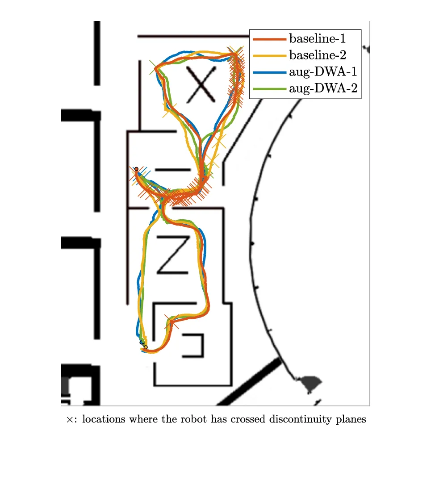
M.1 OCP를 어떻게 세우나자세히: 불연속 평면과 구역 서명
무엇을 하나. 바퀴 $i$의 접촉점 속도는 $v_i = (v_x - \omega\, y_i,\ v_y + \omega\, x_i)$이고 조향각은 그 방향이다. 조향각이 한계 $\pm\delta_{\max}$에 닿는 속도는 바퀴마다 $(v_x, v_y, \omega)$의 선형식이 0인 평면을 이룬다. 바퀴 넷과 한계 둘이 평면 8개를 준다.
구역. 행렬 $B$의 행을 평면 법선으로 두면 $\mathrm{sign}(B v)$가 구역 서명이다. 서명이 바뀌는 명령 변화가 구역 넘기이고, 그때 적어도 한 바퀴가 한계 반대편으로 돌아가야 한다.
travplan에 주는 것. $\delta_{\max} \ge 90°$일 때만 위의 평면이 구역 경계가 된다. travplan의 56.2°에서는 같은 식이 각 바퀴 $i$의 실현 가능 집합 $|v_{iy}| \le \tan\delta_{\max}\,|v_{ix}|$를 준다. 이 집합은 $(v_x, v_y, \omega)$ 공간에서 바퀴마다 이중 원뿔이고, 로봇의 실현 가능 속도는 넷의 교집합이다. NMPC에 넣으려면 $|\cdot|$를 매끄럽게 바꾼 근사(예: 제곱형 $v_{iy}^2 \le \tan^2\delta_{\max}\, v_{ix}^2$에 여유를 둔 것)가 필요하다. 이 형태는 원점에서 퇴화하므로 저속에서는 끄거나 완화해야 한다.
M.1 OCP를 어떻게 세우나1/2
바퀴마다 90° 조향하는 차량의 운동 모드와 필터 튜브 MPC (Yang 외, 2025.08, 프리프린트)
한 줄로. 모든 바퀴가 ±90° 독립 조향하는 차량(AWOISV)의 운동 모드를 순간 회전 중심의 각도 둘로 정의하고, 칼만 필터를 거친 오차로 튜브를 세운 선형 시변 MPC로 횡위치와 임의의 방향각을 함께 따른다(arXiv:2508.13457).
동작 방식. 순간 회전 중심의 위치를 유한한 각도 둘(회전 반경각, 횡미끄럼각)로 바꿔 운동 모드 여섯을 정의한다. 모드 사이에는 연속으로 바꿀 수 있는 쌍과 멈춰야 하는 쌍이 있다. 예측 모델은 Frenet 좌표의 속도·횡미끄럼·yaw 속도 동역학이고, 선형화해 LTV-MPC로 푼다. 지평은 0.25 s × 20, 제어 주기는 50 Hz다. 상태 오차는 칼만 필터로 거르고 히스테리시스 문턱으로 작은 떨림을 버린다. 그 오차에 대한 불변 집합으로 상태와 입력 제약을 조인다. 횡미끄럼 10°, yaw 속도 0.3 rad/s, 조향 속도 90°/s가 제약이다. 검증은 TruckSim 공동 시뮬과 HIL이다. 추종 오차와 풀이 시간 수치는 본문에서 확인하지 못했다. 실차 실험은 없다.
travplan에 주는 의미. travplan의 상태 $(v_x, v_y, \omega)$는 모드를 나누지 않는다. 대신 바퀴 조향이 그 상태에서 비평활하게 정해진다(M.1의 IK). 이 논문은 반대로 모드를 명시하고 모드 안에서만 매끄러운 모델을 쓴다.
가져올 것은 오차를 필터로 거른 뒤 튜브를 정하는 부분이다. TP-0152에서 mpc_lag는 명령이 스텝마다 한계 양끝을 오가 실패했다. 그 원인은 계획의 bang-bang이라 이 장치가 바로 고치지는 않는다. 다만 작은 오차에 궤환이 반응하지 않게 하는 히스테리시스 문턱은 명령 떨림을 줄이는 값싼 장치로 참고한다.
모드 전환을 멈춤으로 처리하는 부분은 배달로봇의 보도 주행에서는 드문 경우라 지금은 가져오지 않는다.
M.1 OCP를 어떻게 세우나2/2

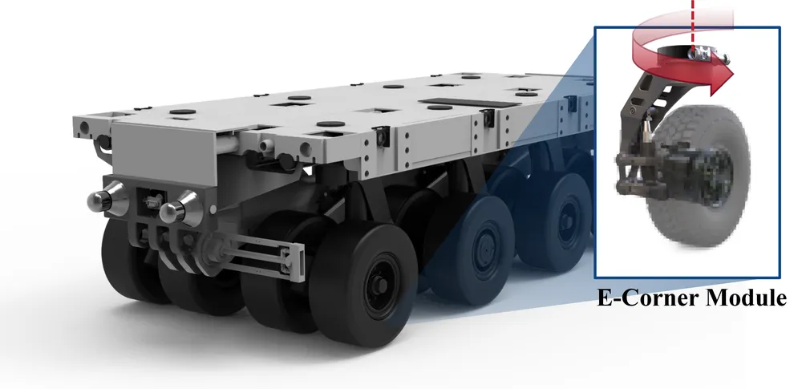
M.1.1 MPPI 비용을 MPC로 옮기는 표1/3
| 지금 MPPI 비용 항 | MPC에서 | 주의 |
|---|---|---|
ReferenceCost |
참조 추종 2차 비용(시간 인덱스) 또는 진행도(contouring) | Planner D는 시간 인덱스를, GuidancePlanner는 경로만 준다. 두 모드 다 필요 |
TraversabilityCost |
매끄러운 항만(경사·거칠기) | 치명도는 여기서 빠져 제약으로 간다. 치명 칸 근처의 여유는 부드러운 여유 행(TP-0117, mpc_sc)이 맡고, 경사·거칠기 항은 아직 없다 |
RiskCost |
보행자 → 타원 제약, σ → 제약 조이기 | σ가 비용의 한 항으로 남으면 GP·튜브가 붙을 데가 없다 |
AttitudeCost |
roll/pitch 제약 | 지도 기울기에서 계산하므로 보간이 매끄러워야 한다 |
ControlCost |
입력 2차 비용 | 그대로 |
GoalApproachCost |
종단 비용 | 그대로 |
| — | 신설: ESDF 제약 $d(x) - r_{\text{robot}} \ge \rho_k$ | 세 기법이 전부 여기에 붙는다 |
확산 모델이 충돌 회피 MPC의 초기해를 낸다 (Haffemayer 외, 2026.01, RA-L 2026)
한 줄로. 장면 영상으로 조건을 건 확산 모델이 궤적 초안을 내고, 부호 거리 hard 제약이 있는 OCP가 그것을 초기해로 받아 다듬는다(arXiv:2601.02873, LAAS-CNRS·LIRIS·체코 공대 CIIRC, 코드, 프로젝트). 학회지는 프로젝트 페이지와 논문의 IEEE 표기 기준으로 RA-L 2026이다.
동작 방식. 장면 RGB 영상(128×128)을 Slot Attention으로 물체 슬롯 6개로 바꾸고, DDPM 확산 트랜스포머가 초기 자세·목표·슬롯을 조건으로 관절 궤적을 낸다. 학습 데이터는 RRT 경로를 OCP로 다듬은 궤적 수만 개다. OCP는 Crocoddyl의 mim-solvers로 풀고, 물체 사이의 부호 거리가 여유 이상이라는 hard 제약을 건다. 실물 Franka에서는 15 노드 × 10 ms 지평을 100 Hz로 푼다. 시뮬 세 벤치마크의 성공률은 82, 79, 83 %다. 같은 OCP를 초기해 없이 풀면(DDP) 10 % 아래였고, 다른 확산 Planner(MPD)도 10 % 아래였다. 풀이 한 번은 72 ms 아래였다. 확산 단계 약 10번, OCP 반복 약 15번을 넘으면 성공률이 80 % 근처에서 더 오르지 않았다. 비용 기울기로 확산을 유도하는 장치는 예산이 클 때 오히려 해가 되어 뺐다.
travplan에 주는 의미. 학습 Planner와 NMPC를 잇는 가장 직접적인 방법이 이것이다. Planner D는 이미 시간 인덱스 궤적을 내고, NMPC는 지금 직전 해를 밀어 초기해로 쓴다.
OCP 단독 성공이 10 % 아래였다는 결과는 국소해에 갇히는 NMPC의 약점이 초기해로 풀린다는 뜻이다. 다만 travplan에서 기대할 몫은 작다.
mpc의 plant 레벨 3 시간 초과 104/360 가운데 82가 curb_ramp이고, 레벨 3 경사로는 사용자 결정으로 설계 한계로 두었다(TP-0151). 초기해가 그 경사로를 열 것으로 보지 않는다.
그래서 판정 지표는 경사로를 뺀 시간 초과(mpc 22/270)로 둔다. 이 22가 국소해에 갇힌 것인지는 아직 가르지 않았다.
역할 분담에도 쓸 것이 있다. 이 논문은 OCP가 붙어야 성공했다. Planner D의 궤적을 그대로 따르게 하기보다 NMPC가 제약으로 다듬게 하는 것이 맞다.
M.1.1 MPPI 비용을 MPC로 옮기는 표2/3


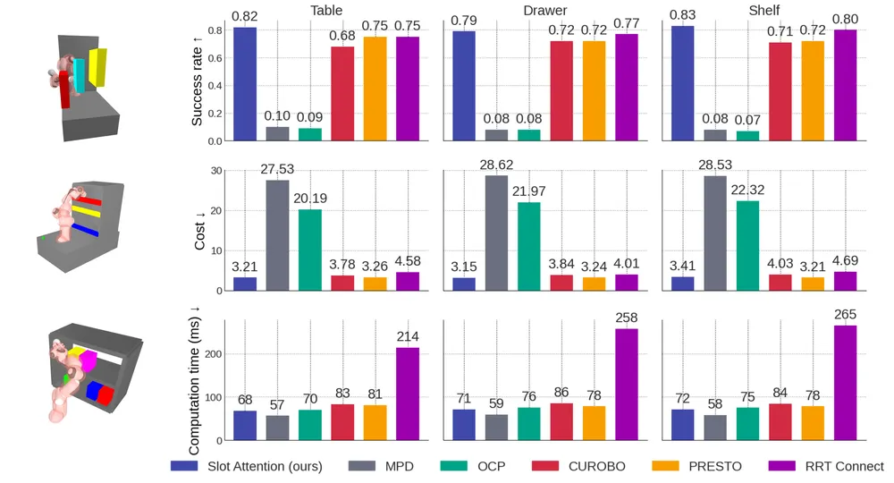
RL 정책이 확률 NMPC의 초기해와 종단 가치를 준다 (Polevoy 외, 2026.09, 프리프린트)
한 줄로. RL로 배운 actor-critic을 샘플링 확률 NMPC(PAC-NMPC)에 넣어, actor는 초기해로, critic은 종단 비용과 "가치가 줄어야 한다"는 제약으로 쓴다(arXiv:2609.39854).
동작 방식. PAC-NMPC는 기울기 기반 NMPC가 아니라 샘플링 기반 확률 NMPC다. 명목 입력 궤적의 가우시안 분포를 최적화하고, 기대 비용과 제약 위반 확률의 PAC 상한을 줄인다. 피드백은 시변 LQR이고, 제약 문제는 SNOPT로 푼다. actor와 critic은 TD3로 학습하고, 몬테카를로 dropout으로 가치의 불확실성을 낸다. 종단 가치의 PAC 상한이 현재 가치보다 작아야 한다는 제약이 짧은 지평의 근시안을 막는다. 초기해는 RL 정책의 궤적이고, 실행 불가능하면 직전 해로 돌아간다. 1/10 랠리카 실물에서 이 방법은 성공 95 %, 위반 0 %, 멈춤 5 %였고 actor 단독은 성공 85 %, 위반 15 %였다. 가치 함수를 틀린 축거(0.5 m)로 학습시킨 실험에서는 actor 단독이 성공 70 %, 위반 30 %였다. 이 방법은 성공 80 %, 위반 0 %였고 나머지 20 %는 멈춤이었다. 위반을 멈춤으로 바꾼 셈이다. 시뮬의 오목한 함정 장면에서는 93 % 대 82 %였다. 랠리카는 12 스텝 × 0.1 s 지평을 0.2 s마다 다시 푼다. 풀이 한 번의 시간과 코드 공개 여부는 확인하지 못했다.
M.1.1 MPPI 비용을 MPC로 옮기는 표3/3
travplan에 주는 의미. NMPC의 지평 4 s는 MPPI와 맞추려고 정한 값이고, 그 밖의 목표 쪽 정보는 종단 비용 하나뿐이다. 학습 가치 함수를 종단 비용으로 쓰면 짧은 지평에서도 막힌 길을 피한다. travplan에는 이미 학습 Controller(TP-0128, ES 정책)와 Planner D가 있다. 둘 중 하나의 가치나 진행 추정을 종단 비용으로 넣을 수 있다. 가져오지 않을 것은 PAC 상한과 SNOPT다. acados RTI와 구조가 다르고, 샘플 1,024개를 반복하는 계산은 MPPI 쪽 확률 제약(M.3.13)과 겹친다.

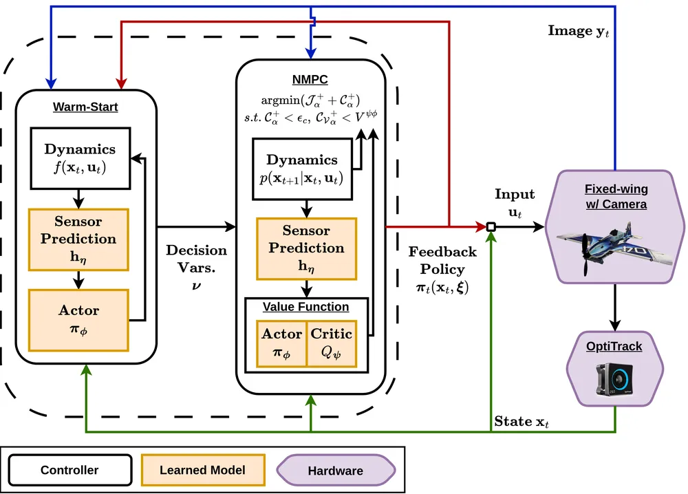

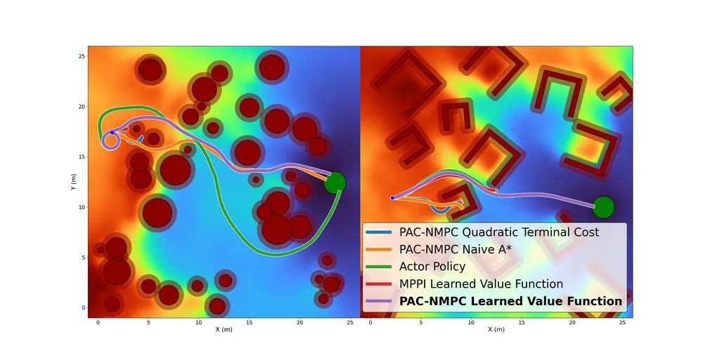
M.1.2 치명도를 비용에서 제약으로 옮기는 것이 핵심이다1/2
MPPI는 절벽 비용을 샘플로 넘지만 MPC는 미분이 필요해서 절벽에서 죽는다. 치명 셀(cost ≥ 0.95)은 계단이라 기울기가 없다. 그래서 치명 셀에서 ESDF를 한 장 만들어 hard 제약으로 쓰고, 지형 비용에는 매끄러운 항만 남긴다(TP-0071).
이것은 우회가 아니라 전제다. GP 분산도 튜브도 제약을 조이는 양 $\rho_k$를 정하는 장치이므로, 조일 제약이 없으면 세 기법 모두 쓸 자리가 없다.
단, MPC가 유일한 길은 아니다(2026-09-30). 샘플링 제어기에서도 확률 제약을 세워 푸는 방법이 있고, 스키드 스티어 실물에서 GP 잔차 + chance-constrained MPPI로 검증된 사례가 있다(Controller 문서 E.10). 그날 "MPPI는 개발 계획 제외" 규칙이 해제돼, travplan은 둘 다 개발하고 같은 벤치마크에서 비교한다(TP-0076). 이 문서가 다루는 것은 (a) 쪽이다. 조이는 양은 이렇게 이어진다.
$$ \rho_k = \underbrace{\Phi^{-1}(1-\epsilon)\sqrt{h^\top \Sigma_k h}}_{\text{GP 분산(TP-0069)}} \quad\longrightarrow\quad \underbrace{\max_{w \in \mathcal W} h^\top w}_{\text{튜브·SLP}} $$
GP는 확률이고 튜브는 유계 외란이라 그대로 잇지 못한다. 다리는 GP의 $\beta$-신뢰 타원체를 외란 집합 $\mathcal W$로 쓰는 것이다 (Controller 문서 E.6의 Koller 2018이 그 방식이다). 실무로는 고정 반경 튜브부터 하고, 너무 보수적일 때만 SLP로 간다.
수축 계량 튜브로 GP 잔차를 강건하게 전파하고 온라인으로 배운다 (Dubied 외, 2025.07, Automatica 2026)
한 줄로. GP 오차 상한을 스칼라 미분방정식 하나로 전파해 튜브 크기를 정하고, 실행 중에 모은 데이터로 GP를 갱신하면서도 재귀 실행 가능성과 강건 제약 만족을 고확률로 지킨다(arXiv:2507.02098, ETH IDSC Zeilinger 그룹, 코드).
동작 방식. 오프라인에서 LMI로 수축 계량(contraction metric)을 구한다. 온라인에서는 명목 예측 둘레의 도달 집합을 그 계량의 공으로 두고, 공의 반지름을 GP의 상태별 오차 상한으로 키우는 스칼라 동역학 하나만 함께 적분한다. 재귀 실행 가능성을 위해 GP 여러 개를 모아 두고, 명목 예측은 그 GP 사후 평균들의 선형 결합으로 최적화한다. 튜브는 집합 교집합으로 줄어들기만 하게 만든다. 이것이 적응형(GP-RAMPC)이다. 구현은 L4acados(acados + GPyTorch)이고, RK4, 0.15 s × 50 스텝(지평 7.5 s), SQP 반복 상한 50이다. GP는 최대 10개, 데이터 200점으로 묶어 계산 시간을 고정한다. 평면 쿼드로터의 지면 효과 예제에서 Koller 식 Taylor 타원 전파는 약 1초 뒤 발산했고, 이 방법의 튜브는 유계로 남았다. 적응형은 비적응형보다 종단 집합에 6 % 빨리 들어가고 추종 비용이 9 % 낮았다. SQP 반복 한 번은 비적응형 51.2 ms(GP 45.6 ms), 적응형 89.1 ms(GP 79.5 ms)다. 반복을 여러 번 도는 구성이라 실시간과는 거리가 멀다. 실물 실험은 없다.
M.1.2 치명도를 비용에서 제약으로 옮기는 것이 핵심이다2/2
travplan에 주는 의미. travplan의 GP 분산 튜브(TP-0069, M.3.18)는 1번 노드에서만 보정을 확인했다. 먼 노드의 폭은 손으로 정한 오차 모델과 상한 8 cm가 정했고, M.3.18은 그것을 "보정된 확률이라기보다 속도에 비례한 조심성"으로 적었다. 이 논문은 먼 노드까지 보장되는 튜브를 상태 하나로 얻는 방법을 준다. Koller 식 Taylor 타원 전파는 이 예제에서 약 1초 뒤 발산했다. 이것은 그 방법의 결과이고 travplan의 0차 전파에 그대로 옮길 수는 없다. 계산은 무겁다. SQP 반복 한 번이 50–90 ms이고 반복 상한이 50이라, travplan의 10 Hz RTI 한 번과는 거리가 멀다. 오프라인 LMI가 스워브 모델에서 풀리는지도 확인해야 한다. 가져올 것은 "튜브 크기를 상태로 하나 더 적분한다"는 구조다. 다만 오프라인 수축 계량에서 나온 상수($\rho$, $L_G$, $G_M$, $E_M$) 없이 스칼라 ODE만 acados 모델에 더하면, 보장이 없는 경험적 조임이 된다. 그 점에서 지금의 TP-0069와 같은 등급이다.
M.1.2 치명도를 비용에서 제약으로 옮기는 것이 핵심이다자세히: 스칼라 튜브 동역학
무엇을 하나. 수축 계량 $M(x)$가 정하는 거리 $V_\delta(x, z)$로 튜브를 $\{x : V_\delta(x, z) \le \delta\}$로 두고, 크기 $\delta$를 명목 상태 $z$와 함께 적분한다(OCP 안의 식 (12c), 우변의 형태는 정리 1의 식 (20d)).
$$ \dot \delta = -(\rho - L_G)\, \delta + G_M \, w(z) + E_M, \qquad w(z) = \beta_N \, \sigma_N(z) $$
$\rho$는 수축률, $\sigma_N$은 GP 사후 표준편차, $\beta_N$은 신뢰 계수(예제에서 3.0)다. $L_G$, $G_M$, $E_M$은 계량과 외란 상자에서 오프라인으로 정하는 상수다. 제약 $h_j(z, v) + c_j \delta \le 0$으로 각 제약을 $\delta$에 비례해 조인다.
travplan에 주는 것. M.1.2의 조이는 양 $\rho_k$가 이 $c_j \delta$다. 지금 TP-0069는 노드별 조임 $t_k$를 손으로 정한 오차 모델로 구한다. 위 식은 그것을 상태 하나의 상미분방정식으로 바꾸고, GP 분산을 그 입력으로 쓴다. 보장은 상수들이 오프라인 LMI에서 나올 때만 성립한다.
M.1.2 치명도를 비용에서 제약으로 옮기는 것이 핵심이다1/3
입출력 기록에서 튜브 MPC를 만드는 파이프라인 (Benders 외, 2025.08, 프리프린트)
한 줄로. 비행 기록에서 외란과 잡음의 상자를 추정하고, SDP로 튜브와 종단 성분을 만들어 강건 출력 궤환 MPC를 약 2시간 안에 세운다(arXiv:2508.07045, TU Delft Cognitive Robotics·ETH IDSC·체코 공대 CIIRC(Babuška), 코드).
동작 방식. 첫 단계는 이동 지평 추정(MHE와 비슷한 문제)을 기록 위에 돌려 외란을 추정하는 것이다. 추정치의 공분산으로 가중치를 다시 정하는 반복을 수렴할 때까지 한다. 외란 상자는 추정치의 범위로, 편향은 상자의 중심으로 둔다. 둘째 단계는 SDP 하나로 관측기 기반 증분 Lyapunov 함수, 궤환 법칙, 제약 조이기 상수를 함께 구하는 것이다. 튜브 크기는 $\dot s = -\rho s + \bar w$를 따르고, 보정한 값은 $\rho = 12.5$, $\bar w = 0.0337$이다. 셋째로 다른 SDP가 종단 비용을 정한다. 온라인에는 계획 MPC와 조인 제약의 추종 MPC가 함께 돈다. 추종 MPC는 100 Hz다. 실험은 RotorS의 쿼드로터 시뮬이고, 원·8자 비행 기록 네 개를 썼다. 불확실성 추정에 3408 s, 출력 궤환 SDP에 295 s가 걸렸다. 폐루프에서 튜브 안에 머물렀다고 보고하지만 위반률이나 성공률 수치는 없다.
travplan에 주는 의미. travplan에는 plant 에피소드 기록이 이미 많다(TP-0149–0152). 그 기록에서 외란 상자를 추정해 고정 반경 튜브의 반경을 정하는 첫 단계는 그대로 쓸 수 있다. M.1.2가 "실무로는 고정 반경 튜브부터"라고 정한 것과 같은 방향이다. SDP로 궤환 이득까지 설계하는 뒷단계는 쿼드로터 시뮬에서만 검증됐다. 그래서 지금은 반경을 데이터로 정하는 부분만 본다.

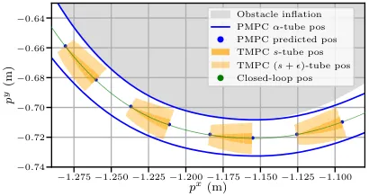
M.1.2 치명도를 비용에서 제약으로 옮기는 것이 핵심이다2/3
3차원 강체 모델과 에너지 안정 여유로 전복을 막는 지형 인지 MPC (Baxter 외, 2026.03, T-RO 투고)
한 줄로. 국소 평면을 가정한 단일 트랙 모델 대신 roll·pitch·상하 운동과 바퀴별 스프링이 있는 3차원 강체 모델을 고도 지도 위에서 굴리고, 에너지 안정 여유(ESM)를 전복 제약으로 건다(arXiv:2603.20525, 미시간 대학교와 미 육군 GVSC, 코드).
동작 방식. 바퀴는 질량이 없고 접지가 떨어질 수 있다. 지형은 고도 지도와 수치 기울기로 주고, 거친 지형은 MPC에 주기 전에 매끄럽게 만든다. 최적화기는 샘플을 독립으로 뽑아 비용이 가장 낮은 하나를 고르는 GPU 샘플링 MPC이고, 조향만 최적화한다. 지평은 0.25 s × 16 = 4 s다. 노트북 GPU(RTX 5000 Ada)에서 OCP 하나에 샘플 약 20만 개를 80 Hz로 돈다. 시뮬 9,900회(5–10 m/s)에서 제안 모델은 설정의 52 %에서 성공 비율이 높았고, 기준선이 높은 설정은 8 %였다. 실차 48회(4–5.5 m/s)의 차이는 24/24 대 23/24로 작고, 기준선의 실패 하나는 수동 개입이었다(5.0 m/s, 길 사이 나무 쪽으로 들어감). 개루프 예측에서 위치 오차 중앙값이 10.1 %, ESM 오차가 3.1 % 줄었다. 시뮬은 지도·주행 거리계가 완벽하고 지연이 없다고 가정했다.
travplan에 주는 의미. travplan의 AttitudeCost는 지도 기울기에서 자세를 계산하지만, 전복 여유를 직접 재지 않는다. ESM은 바퀴 접지점들과 무게중심의 상대 높이로 정해지므로, 메쉬 시뮬레이터(TP-0125)가 계산할 바퀴 접지점 높이에서 바로 나온다.
NMPC에 넣으려면 접지 이탈 같은 비평활 부분을 매끄럽게 바꿔야 한다. 그래서 MPPI 쪽 CostTerm으로 먼저 시험하고, NMPC에는 ESM의 매끄러운 근사를 제약으로 넣는 순서가 맞다.
M.1.2 치명도를 비용에서 제약으로 옮기는 것이 핵심이다3/3

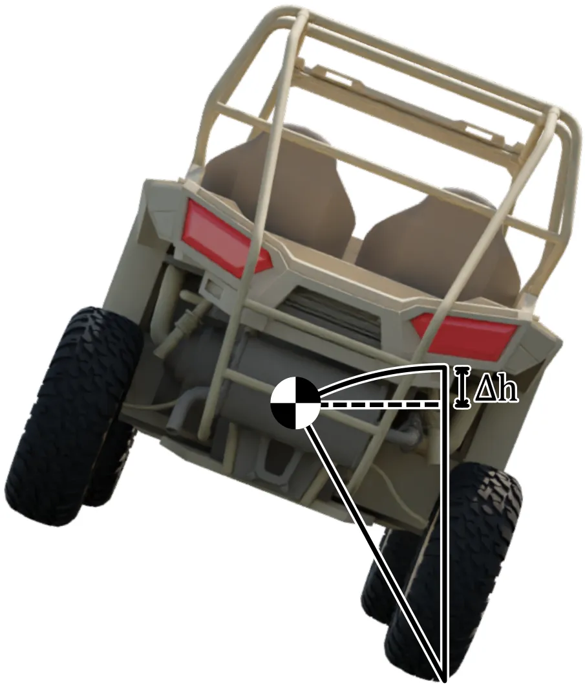

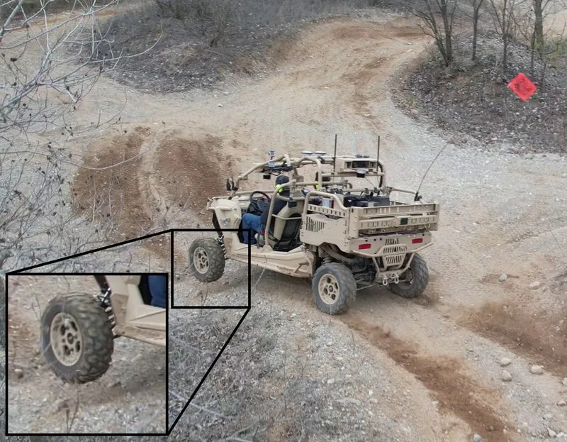
M.1.3 예측 모델은 세 층으로 쌓고, 학습 층은 로봇 모델로 굴린 시뮬레이션에서 배운다 (TP-0124–0126)1/2
예측 모델을 기구학 → 동역학 → 학습의 세 층으로 쌓고, 학습 층은 로봇 메쉬로 굴린 forward 시뮬레이션에서 자기 지도로 배운다.
2026-10-01 사용자 결정이다. 지금 MPPI와 MPC는 둘 다 기구학 모델(robot/swerve.py::SwerveModel) 하나로 예측하고, 학습 층은 GP 잔차뿐이다.
지형 판정은 로봇 중심 한 점의 cost로 한다. 로봇의 실제 모양(차체 바닥, 네 바퀴 접지점)은 예측에 들어가지 않는다.
| 층 | travplan에서 | 지금 | 할 일 |
|---|---|---|---|
| 기구학 | twist 적분 + 상자·가속 한계 (SwerveModel) |
MPPI·MPC 모두 이것 | 기준선으로 둔다 |
| 동역학 | 모듈 1차 지연 + 슬립 (robot/plant.py::SwervePlant) |
sim의 plant. MPPI는 지연 rollout(mppi_plant_lag, TP-0150)으로 치명이 줄었다. MPC에 지연을 넣은 mpc_lag(명령에서 지연을 되돌림, TP-0152)는 명목보다 나빠 선택 스택으로만 둔다 |
한 프로토콜로 묶는다(TP-0124). 지연 상태 3개를 더한 MPC 모델은 가속 한계가 명령 기준일 때만 필요하다(M.3.24) |
| 학습 | GP 잔차, NN·잔차 네트워크, forward dynamics 모델(FDM) | GP 잔차만 (M.3.6, TP-0120) | 같은 프로토콜의 구현체로 (TP-0124, TP-0126) |
메쉬 기반 forward 샘플링이란. 샘플 궤적마다 로봇 메쉬를 2.5D 고도 지도 위에 놓고 굴려 보는 것이다. 바퀴 접지점의 높이에서 자세(pitch·roll)가, 차체 바닥과 지면의 차이에서 하부 간섭이, 바퀴가 넘는 높이 차에서 단차가 나온다. 한 점의 cost로는 이 셋을 구별하지 못한다. 배치(GPU)로 만들면 MPPI 롤아웃의 지형 판정과 학습 데이터 생성에 함께 쓴다(TP-0125). 아래 세 연구가 이 구조를 쓴다. 모두 KAIST 황보제민 교수 연구실(RaiLab)과 그 이전 ETH 연구다.
1. 학습 forward dynamics 모델 + 샘플링 MPC — Kim, Kim, Hwangbo (RSS 2022). 로봇과 주변의 동역학을 신경망 하나로 배우고, 그것을 샘플링 MPC의 빠른 가상 시뮬레이터로 쓴다. FDM은 현재 관측(라이다, 차체 상태 이력)과 앞으로 보낼 명령 열을 받아 미래 위치와 충돌 확률을 낸다. 학습 데이터는 전체 로봇 모델(ANYmal C)을 RaiSim에서 무작위 환경에 굴려 자기 지도로 모으고, 충돌 여부는 물리 엔진의 접촉 계산에서 얻는다. GPU에서 6초 궤적 1,500개를 3 ms에 굴린다. 전체 로봇 시뮬레이션보다 2만 배, 근사 모델보다 20배 빠르다. travplan에 주는 의미는 둘이다. 첫째, 학습 층의 출력에 위치뿐 아니라 실패 확률을 둔다. 지금 MPPI의 확률 제약(M.3.13)이 손으로 만든 여유 대신 그 확률을 쓸 수 있다. 둘째, 데이터는 실제 로봇 모델로 굴린 시뮬레이션에서 나온다. travplan에서는 메쉬 시뮬레이터(TP-0125)가 그 자리다.
M.1.3 예측 모델은 세 층으로 쌓고, 학습 층은 로봇 모델로 굴린 시뮬레이션에서 배운다 (TP-0124–0126)2/2


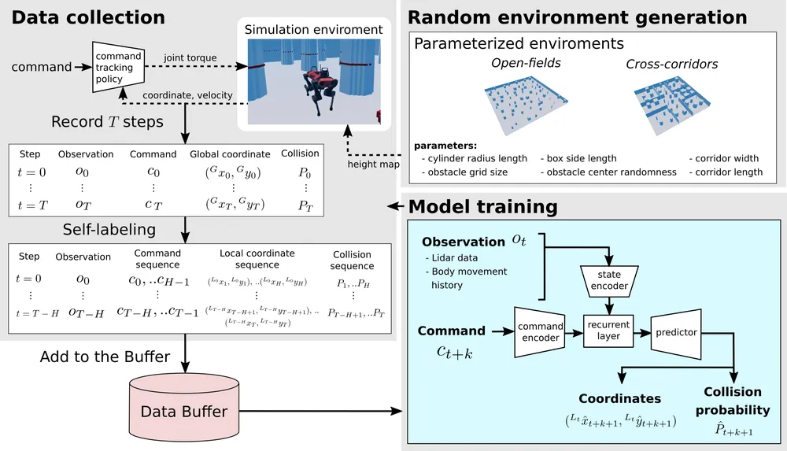
M.1.3 예측 모델은 세 층으로 쌓고, 학습 층은 로봇 모델로 굴린 시뮬레이션에서 배운다 (TP-0124–0126)자세히: FDM과 샘플링 MPC의 방법과 수식
무엇을 하나. FDM은 $f_\theta(o_t, c_{t:t+H}) = \{\hat x_{t+1:t+H+1}, \hat y_{t+1:t+H+1}, \hat p_{t+1:t+H+1}\}$이다. $o_t$는 2D 라이다와 차체 상태 이력(10 스텝), $c$는 명령 열(전진·횡·회전 속도), $\hat p$는 충돌 확률이다. 관측을 완전연결 층으로 인코딩해 LSTM의 초기 상태로 넣고, LSTM이 명령을 하나씩 받아 각 스텝의 결과를 낸다. $H = 12$ 스텝 × 0.5 s = 6 s다. 손실은 좌표에 MSE, 충돌에 교차 엔트로피다.
MPC. 보상 $R(f_\theta(o_t, c_{t:t+H}))$을 최대화하는 명령 열을 매 스텝 다시 구하고 첫 명령만 보낸다. 최적화는 경사 없는 방식이다. 시간 상관이 있는 무작위 열과 직전 최적해를 $c^n = (1-\beta)\tilde c^n + \beta \hat c$로 섞고, 보상으로 가중 평균한다(MPPI와 같은 계열). ITS는 조건부 VAE로 좋은 명령 열의 분포를 배워 샘플 일부를 거기서 뽑는다.

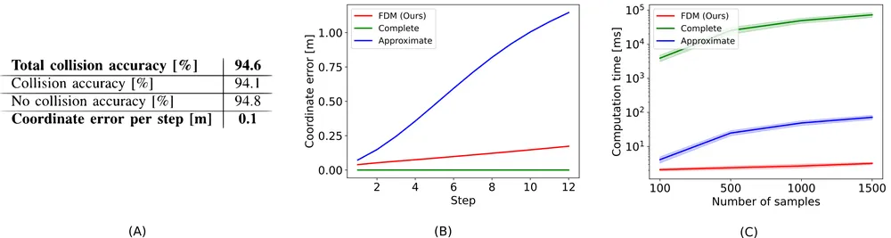
travplan에 주는 것. 입력의 라이다 자리에 로봇 둘레의 고도 패치(TravMap의 ELEV)를 넣고, 충돌 자리에 sim의 실패(치명·전복)를 넣으면 그대로 옮겨진다.
MPPI는 이미 롤아웃 모델을 바꿔 끼울 수 있다(MPPIController.model, TP-0120). 명령 공간도 같다(차체 twist).
M.1.3 예측 모델은 세 층으로 쌓고, 학습 층은 로봇 모델로 굴린 시뮬레이션에서 배운다 (TP-0124–0126)1/2
2. 강체 시뮬레이션 + 학습 액추에이터 네트워크 — Hwangbo 외 (Science Robotics 2019). 해석 모델이 못 담는 부분만 신경망으로 배워 시뮬레이터 안에 넣는다. 강체 동역학과 접촉은 RaiSim이 풀고, 명령에서 관절 토크까지의 액추에이터 동역학(통신 지연, 저수준 제어기, 관절 유연성)은 실물 데이터로 배운 "actuator net"이 낸다. 이 혼합 시뮬레이터가 초당 약 50만 스텝을 돌고, 그 시간의 절반이 액추에이터 네트워크다. travplan의 세 층이 이 생각을 따른다. 잘 아는 부분은 식으로 두고, 식이 못 담는 부분을 학습한다. 다만 이 논문은 잔차가 아니라 액추에이터 사상 전체(명령 → 토크)를 학습한 하위 모델을 강체 시뮬레이션 앞에 직렬로 넣었다. travplan의 GP는 기구학 예측에 더하는 잔차다. 지금 GP 잔차가 그 자리이고, NN·잔차 네트워크는 같은 자리의 다른 구현체다(TP-0124). 이 논문은 Controller 문서 F.1(계보)·F.3과 시뮬레이션 문서 S.6.2(보정)에도 나온다.
M.1.3 예측 모델은 세 층으로 쌓고, 학습 층은 로봇 모델로 굴린 시뮬레이션에서 배운다 (TP-0124–0126)2/2

M.1.3 예측 모델은 세 층으로 쌓고, 학습 층은 로봇 모델로 굴린 시뮬레이션에서 배운다 (TP-0124–0126)자세히: 액추에이터 네트워크의 방법
무엇을 하나. 액추에이터 네트워크는 관절의 위치 오차와 속도 이력(현재, 0.01 s 전, 0.02 s 전)을 받아 토크를 내는 MLP다. 실물에서 모은 데이터로 자기 지도 학습한다. 정책 학습 때 이 토크가 강체 시뮬레이션에 들어간다.

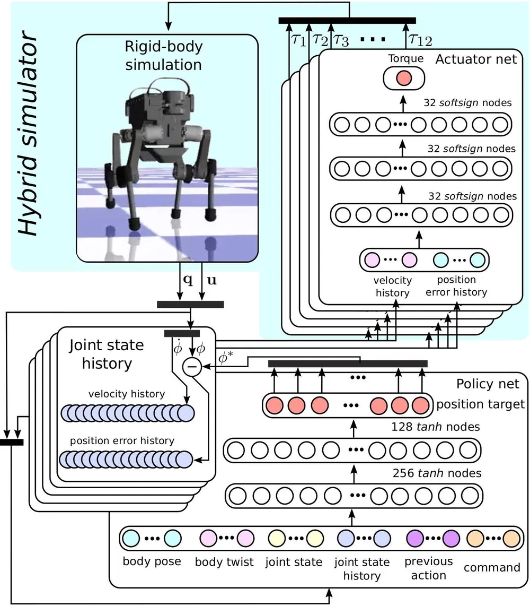

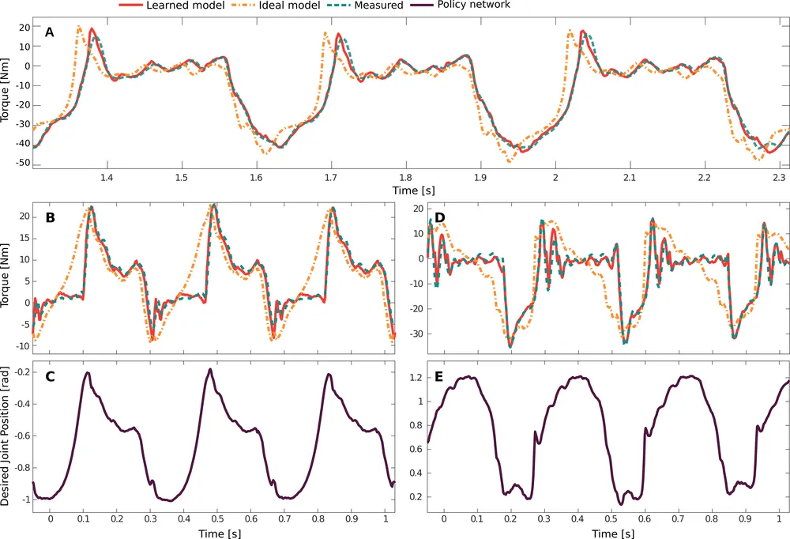
travplan에 주는 것. 스워브 모듈의 조향 지연과 바퀴 슬립(SwervePlant)이 액추에이터 동역학의 자리다. 지금은 손으로 쓴 1차 지연이고,
실물이나 Isaac 기록이 생기면 같은 방식으로 명령 → 실현 twist 사상을 배우거나, 그 잔차를 배운다. 동역학 층(TP-0124)이 그 입력을 받는다.
M.1.3 예측 모델은 세 층으로 쌓고, 학습 층은 로봇 모델로 굴린 시뮬레이션에서 배운다 (TP-0124–0126)1/2
3. 전체 로봇 모델의 물리 롤아웃으로 후보를 검증 — Kim 외 (Science Robotics 2025). 샘플링으로 만든 후보 계획을 빠른 필터로 줄인 뒤, 남은 후보를 전체 로봇 모델로 물리 엔진에서 굴려 고른다. 후보 발판 계획을 성능 상자 제약, 거칠기(PCA) 필터, 신경망 충돌 경계 추정기로 거르고, 남은 것을 학습된 추종 정책과 Raibo 전체 모델로 RaiSim에서 8 스레드로 시뮬레이션한다. 계획 한 번(필터 + 롤아웃)이 0.012–0.059 s다(Table 1, 시나리오 10개). travplan에 주는 의미는 역할 분담이다. 샘플 수백 개는 빠른 모델(기구학·학습)로 평가하고, 마지막 몇 개만 메쉬 시뮬레이터로 검증한다(TP-0125). 인식 문서 A.7.1이 같은 논문을 계층형 내비게이션 쪽에서 다룬다.
M.1.3 예측 모델은 세 층으로 쌓고, 학습 층은 로봇 모델로 굴린 시뮬레이션에서 배운다 (TP-0124–0126)2/2

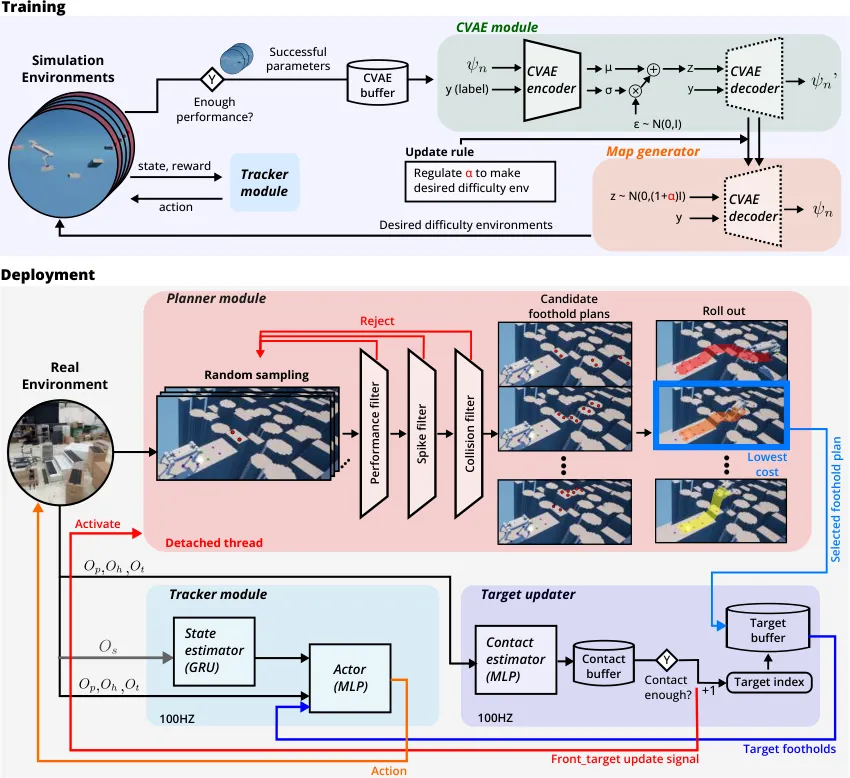
M.1.3 예측 모델은 세 층으로 쌓고, 학습 층은 로봇 모델로 굴린 시뮬레이션에서 배운다 (TP-0124–0126)자세히: 필터와 물리 롤아웃
무엇을 하나. 후보마다 세 필터를 차례로 적용한다. 성능 필터는 발판이 추종기 학습 범위의 상자 안에 있는지, 스파이크 필터는 발판 주변 거칠기를, 충돌 필터는 신경망 경계 추정기로 충돌 위험을 본다. 통과한 후보는 네 발판 쌍의 지평으로 물리 엔진에서 굴리고, 공학 비용이 가장 좋은 것을 고른다. 실시간 요구보다 평균 18배(최소 6배) 빠르다.

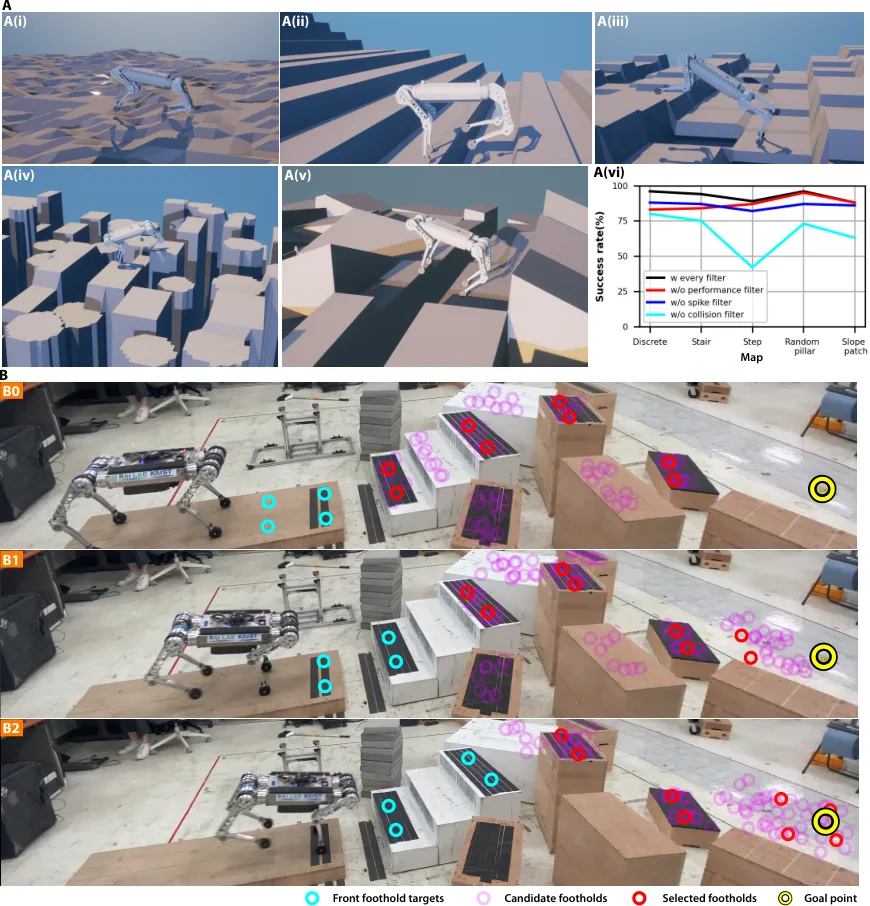
travplan에 주는 것. 필터는 이미 비슷한 것이 있다(MPPI의 치명 판정, 확률 제약). 빠진 것은 마지막의 전체 모델 롤아웃이다. 메쉬 시뮬레이터(TP-0125)가 MPPI의 상위 몇 개 샘플이나 MPC의 예측 궤적을 실행 전에 한 번 굴려 보는 검증 단계가 된다.
M.1.3 예측 모델은 세 층으로 쌓고, 학습 층은 로봇 모델로 굴린 시뮬레이션에서 배운다 (TP-0124–0126)1/2
travplan에 옮기는 순서.
- 모델 계층(TP-0124).
RolloutModel프로토콜 하나에 기구학·동역학·학습 잔차(GP, NN, 잔차 네트워크)를 구현한다. MPPI는 롤아웃 모델을 주입하고, MPC는 acados 모델 변형(지연 상태, 잔차 항)으로 쓴다. 먼저 기록된 plant 에피소드에서 1 s·2 s 예측 오차를, 그다음 같은 벤치마크의 성공률을 비교한다. - 메쉬 시뮬레이터(TP-0125). 로봇 형상을 고도 지도 위에 놓고 샘플마다 자세·하부 간섭·단차·전복 여유를 배치로 계산한다. 바퀴 접지점은 AntBot URDF 값이고,
차체 바닥 높이는 공개값이 없어 가정값이다. 같은 네 바퀴 자세·하부 간섭·바퀴 지지 판정이 이미
sim/ground_truth.py::ChassisSpec·chassis_feasibility(TP-0082)에 격자 판으로 있으므로, 그것을 샘플 배치(GPU)로 옮기는 것이 첫 단계다. 먼저 운동학 sim의 실패 판정과 맞는지 확인하고, 그다음 한 점 판정이 놓치는 경우(차체 하부 간섭)를 지형 시나리오에 더한다.SwerveModel처럼robot/층에 두어 sim과 Controller가 함께 쓴다. - 학습 FDM(TP-0126). 메쉬 시뮬레이터와 plant로 무작위 지형(
sim/terrain.py)과 무작위 명령 열을 굴려 데이터를 만든다. 고도 패치 인코더 + 상태 이력 + 명령 LSTM이 미래 위치·실패 확률을 낸다. MPPI 롤아웃 모델로 쓰고, 기구학·동역학·GP 잔차와 같은 벤치마크에서 비교한다.
비평면 지형의 재귀 희소 GP 잔차 (Amine 외, 2026.02, IEEE IV 2026)
한 줄로. 단일 트랙 차량 모델에 roll·pitch를 입력으로 받는 희소 GP 잔차를 더하고, 그 GP를 주행 중에 재귀로 갱신해 경사·뱅크 지형을 따라간다(arXiv:2602.16206, 펜실베이니아 대학교, 코드).
동작 방식. 상태는 위치, yaw, 조향각, 속도, 횡미끄럼각, yaw 속도의 7개다. 지형의 표면 법선에서 roll과 pitch를 구하고, GP는 이 둘을 포함한 9차원 입력에서 속도·횡미끄럼·yaw 속도의 잔차를 낸다. 커널 하이퍼파라미터는 오프라인에서 맞춰 고정하고, 실행 중에는 망각 계수가 있는 재귀 최소제곱으로 GP를 갱신한다. 제어기는 MPPI(지평 20, 샘플 1,024)이고 NMPC는 아니다. 실험은 Isaac Sim의 F1TENTH급 차량과 최대 경사 23–76°의 세 트랙뿐이다. 단일 트랙 모델은 기준선을 진동하며 따라가고, 타원 트랙에서는 트랙을 벗어났다. GP 모델은 세 트랙을 모두 돌았다. GP를 더해도 제어 주기는 약 50 Hz(한 번 20 ms 이하)를 지켰다. 횡오차는 히스토그램으로만 보고해 수치는 확인하지 못했다. 유도점 수도 본문에 없다.
M.1.3 예측 모델은 세 층으로 쌓고, 학습 층은 로봇 모델로 굴린 시뮬레이션에서 배운다 (TP-0124–0126)2/2
travplan에 주는 의미. travplan의 잔차 GP는 이 구조의 대부분을 이미 갖고 있다. _features의 입력은 명령 twist, 직전 twist, 그리고 TravMap의 SLOPE·ROUGH다. 온라인 갱신도 켜져 있다(gp_online=True, 5 스텝마다 갱신, 용량 200의 고리 버퍼).
고리 버퍼는 오래된 점부터 밀어내므로 망각 계수와 같은 구실을 한다. 새로운 것은 하나뿐이다. SLOPE는 경사의 크기라 부호가 없고, 이 논문은 부호 있는 roll·pitch를 쓴다. 경사를 오르는지 내려가는지, 왼쪽으로 기우는지 오른쪽으로 기우는지를 GP가 가를 수 있게 된다.
그래서 TP-0152의 해석("레벨 0 GP가 레벨 3에 듣지 않는다")도 고쳐 적어야 한다. 실행 중에 버퍼가 레벨 3 데이터로 차므로, 남는 원인은 고정된 하이퍼파라미터나 입력 표현이다. 이 논문이 가리키는 것은 입력 표현 쪽이고, 레벨 3 데이터로 하이퍼파라미터를 다시 맞추는 것도 함께 시험할 수 있다.
다만 실물 결과가 없고 모델이 Ackermann 차량이다. 먼저 기록된 plant 에피소드에서 SLOPE를 부호 있는 roll·pitch로 바꾼 GP의 1 s 예측 오차를 재 보고, 그다음 폐루프로 간다. 잔차 GP는 MPPI와 NMPC가 공유하므로(control/acados_mpc/gp.py) 두 갈래가 함께 얻는다.

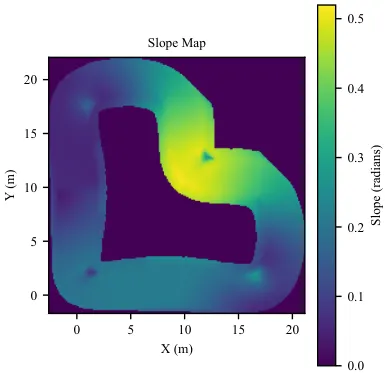

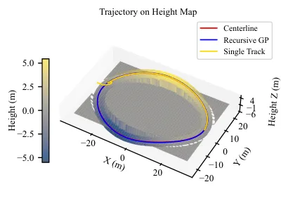
M.1.3 예측 모델은 세 층으로 쌓고, 학습 층은 로봇 모델로 굴린 시뮬레이션에서 배운다 (TP-0124–0126)자세히: 재귀 희소 GP의 방법과 수식
무엇을 하나. 예측은 $x_{k+1} = f_{\text{st}}(x_k, u_k) + g(\xi_k)$이다. $f_{\text{st}}$는 단일 트랙 모델, $g$는 출력마다 따로 둔 희소 GP다. 입력 $\xi_k$에는 상태 일부와 입력, 그리고 표면 법선에서 얻은 roll $\phi$와 pitch $\theta$가 들어간다.
갱신. 유도점 위의 사후 평균 가중치를 재귀 최소제곱으로 갱신한다. 망각 계수 $0 < \lambda \le 1$이 옛 관측의 무게를 매 스텝 $\lambda$배로 줄인다. 하이퍼파라미터는 고정이라 갱신 한 번이 작은 행렬 연산이다.
travplan에 주는 것. travplan GP(희소화, M.3.9)는 이미 유도점과 고리 버퍼를 쓴다. 바꿀 것은 SLOPE 한 채널을 부호 있는 두 채널로 바꾸는 일이다. roll·pitch는 TravMap의 grad_x·grad_y를 차체 yaw로 돌려 얻는다.
M.1.3 예측 모델은 세 층으로 쌓고, 학습 층은 로봇 모델로 굴린 시뮬레이션에서 배운다 (TP-0124–0126)1/2
에너지 정규화를 건 신경망 잔차 MPC (Kübel 외, 2026.04, 프리프린트)
한 줄로. 신경망 잔차가 에너지를 만들어 내지 못하게 학습 손실에 에너지 증가 벌점을 더하고, 그 잔차를 acados SQP-RTI NMPC에 넣었다(arXiv:2604.14678, 도쿄 대학교 DRAGON Lab, 코드).
동작 방식. 로봇은 팔 끝 서보로 추력 방향을 바꾸는 틸트 쿼드로터다. 잔차는 은닉층 하나(32개)의 MLP이고, 높이·속도·자세·서보각·로터 추력을 받아 선가속도 잔차를 낸다. 라벨은 측정 가속도와 분석 모델 예측의 차이다. 학습 데이터는 분석 MPC로 약 15분 비행한 기록이다. 손실에는 L2 오차와 함께, 잔차를 더한 예측이 분석 예측보다 운동·위치 에너지를 늘린 만큼의 벌점이 들어간다. v2 초록은 정규화 없는 신경망 MPC보다 평균 절대 오차가 최대 15 % 낮다고 적는다. 실물 위치 평균 절대 오차는 원 궤적에서 분석 MPC 0.1593 m, 정규화 없는 신경망 MPC 0.1268 m, 이 방법 0.1072 m다. 정지 목표에서는 0.1283, 0.0806, 0.0816 m로 정규화 없는 쪽과 같다. 대신 목표 전환 때 jerk가 낮았다. 초록은 실물 실험 셋과 분석 MPC 대비 23 % 개선을 말한다. 본문 표에는 실험이 둘이고 개선은 33–36 %로 계산된다. 이 어긋남의 이유는 확인하지 못했다.
travplan에 주는 의미. TP-0126의 NN 잔차가 이 자리다. 이 논문의 요점은 학습 잔차가 물리적으로 말이 안 되는 가속을 만들면 NMPC가 그것을 이용해 떨리는 명령을 낸다는 것이다. travplan NMPC도 bang-bang 계획과 jerk 증가(TP-0122, TP-0152)가 문제였다. 그래서 잔차를 바꿀 때는 예측 정확도와 함께 명령의 jerk를 재야 한다. 스워브 지상 로봇에서는 위치 에너지 항이 경사에서만 의미가 있고, 운동 에너지 증가 벌점이 주된 항이 된다.
M.1.3 예측 모델은 세 층으로 쌓고, 학습 층은 로봇 모델로 굴린 시뮬레이션에서 배운다 (TP-0124–0126)2/2

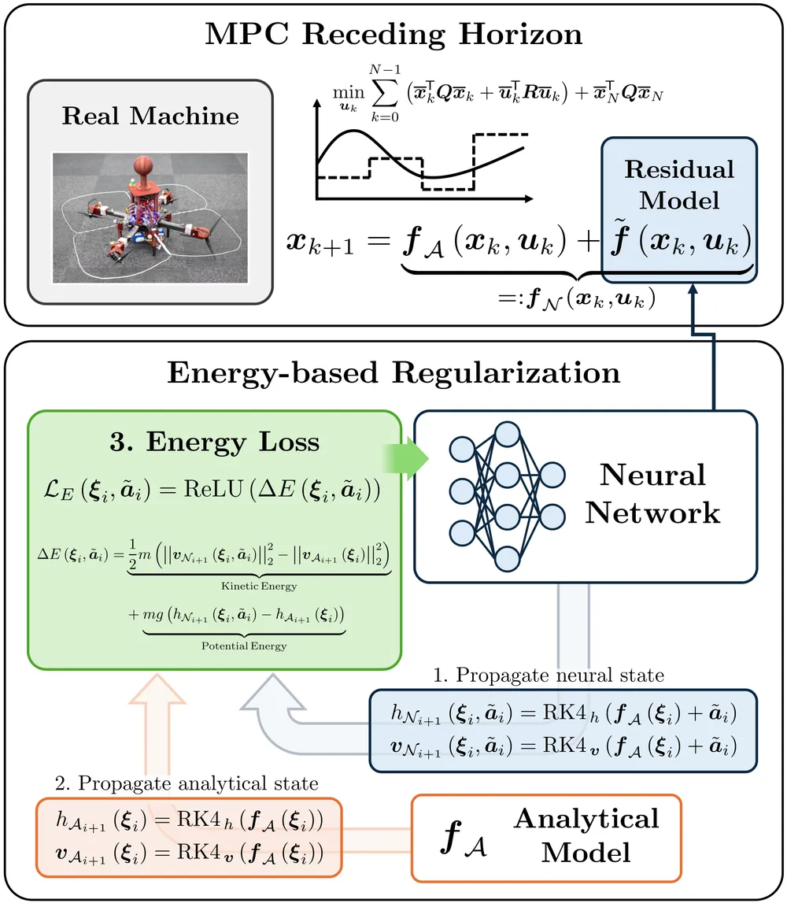
M.1.3 예측 모델은 세 층으로 쌓고, 학습 층은 로봇 모델로 굴린 시뮬레이션에서 배운다 (TP-0124–0126)자세히: 에너지 정규화 손실
무엇을 하나. 신경망 예측 $f_N = f_A + \tilde f$와 분석 예측 $f_A$로 한 스텝 뒤 상태를 각각 구하고, 그 에너지 차이를 잰다.
$$ \Delta E = \tfrac{1}{2} m \left(\lVert v_N \rVert^2 - \lVert v_A \rVert^2\right) + m g \left(h_N - h_A\right), \qquad L = L_2 + \lambda_E \, \mathrm{ReLU}(\Delta E) $$
$\lambda_E = 10^3$이다. ReLU 때문에 에너지를 줄이는 잔차(마찰이나 지면 효과로 인한 감속)는 벌점을 받지 않는다.
travplan에 주는 것. 지상 로봇의 잔차는 미끄럼과 지연이라 대부분 에너지를 줄이는 쪽이다. 그래서 이 벌점은 잘못 배운 잔차를 걸러 내는 검사로도 쓸 수 있다. 에너지를 늘리는 잔차가 많으면 라벨(수치 미분 가속)이 잡음을 배운 것이다.
시뮬 리그
M.2 plant를 어디서 얻나
M.2.1 AntBot MJCF — URDF에 없는 것을 손으로 써야 한다
M.2 plant를 어디서 얻나
MPC는 자기 모델로 자기를 예측하므로, plant가 같으면 아무것도 검증되지 않는다. 지금 L0는 시뮬과 Controller가 같은
SwerveModel을 써서 모델 오차가 0이다. 그래서 plant가 따로 필요하다.
Isaac Gym은 선택지가 아니다. NVIDIA가 Preview 4에서 개발을 멈추고 Isaac Lab(Isaac Sim 위)으로 옮겼고, 2026년 지금은 그 아래 물리도 Newton으로 가고 있다(시뮬레이션 문서 S.1.1, S.1.2). 새로 시작하면서 고를 이유가 없다.
| 층 | 무엇 | 언제 | 어디서 |
|---|---|---|---|
| 1 | MuJoCo(CPU, 로봇 1대) | 지금 — MJCF 제작, MPC 폐루프 검증 | 이 랩탑 |
| 2 | MuJoCo Warp(GPU, 배치) | TP-0068 잔차 데이터 수집 | 데스크톱(5080) |
| 3 | Isaac Sim 6.0 | P1 폐루프 재현(TP-0005), LiDAR→TravMap | 데스크톱 |
같은 MJCF를 1층과 2층이 공유한다. 1층이 먼저인 이유는 단순하다 — 모델이 틀렸는지는 로봇 한 대로 더 빨리 안다.
M.2.1 AntBot MJCF — URDF에 없는 것을 손으로 써야 한다
공개 저장소에 URDF는 있고 MJCF는 없다. MuJoCo 컴파일러가 URDF를 읽지만, 동역학에 필요한 값이 URDF에 없다.
| 필요한 것 | URDF 상태 |
|---|---|
| 모듈 배치·오프셋·바퀴 반지름 | ✅ 있다 (docs/design-gp-dynamics.md §3.5) |
| 접촉 마찰·solref·solimp | ❌ 없다. 손으로 쓴다 |
| Dynamixel 액추에이터 모델(토크-속도, 마찰, 지연) | ❌ 없다. unitree_rl_lab의 UnitreeActuator가 참고(S.5.3c) |
| 실제 관성·무게중심 | ⚠️ 자리표시자에 가깝다(차체 $I_{xx} = I_{yy} = 5.0$, 조향 링크 0.001 등방) → TP-0035 |
| 조향 범위 | ⚠️ URDF ±90° / 제어기 ±60° / 모터 사양 ±56.2°로 셋이 다르다 |
그래서 1단계 목표는 "정확한 AntBot"이 아니라 "명목 모델과 다른, 접촉이 있는 plant"다. 관성이 임시값이어도 MPC가 모델 오차를 만났을 때 어떻게 되는지는 그대로 드러난다.
최근 연구 비교
M.4 최근 연구 비교 (2025–2026)
M.4 최근 연구 비교 (2025–2026)1/4
2025–2026년의 MPC 계열 연구(NMPC와 샘플링 MPC)는 "모델을 더 맞게"와 "초기해를 더 좋게"의 두 방향으로 움직였다. 그러나 두 방향 모두 TP-0152의 실패 원인인 지연과 명령 떨림을 직접 고치지 않는다. M.3.24의 진단은 이렇다. NMPC의 계획은 가속 상한에 붙는 bang-bang이고, plant의 지연이 그것을 걸러 주고 있었다. 지연은 상태 확장이라는 고전 해법이 있고, travplan의 다음 후보도 그것이다(TP-0124의 MPC 쪽). 모델 쪽 연구는 잔차를 실행 중에 갱신하고(재귀 희소 GP, 적응형 GP 튜브), 지형의 기울기와 자세를 모델 안에 넣는다(비평면 GP, 3차원 강체 모델). 초기해 쪽 연구는 학습된 생성 모델이나 RL 정책이 MPC의 출발점과 끝값을 준다. 바퀴 로봇 NMPC가 액추에이터 지연을 정면으로 다룬 2025–2026년 실험 논문은 2026-10 조사에서 찾지 못했다. 지연 자체는 상태 확장(Kalaria 외 2022, arXiv:2208.13856, Delay-aware Robust Control)이라는 고전 해법이 있다. 최근 연구는 MPPI 쪽(CLIS-MPPI, arXiv:2610.21239, Controller 문서 E.1)과 예측기 이론 쪽(Bhan·Krstic·Shi, arXiv:2508.20367)에 있다. 조향 제약 4WIS 계획(Liu 외)은 MPC가 아니라 Planner 층의 DWA 비평가라 표에는 배경으로만 둔다.
| 이름(연·발표) | 입력·표현 | 방법의 핵심 | 학습 신호 | 최적화기 | 로봇·실험 | 코드 | 절 |
|---|---|---|---|---|---|---|---|
| 조향 제약 4WIS 계획(2025.10 · ICAR 2025), 배경 | 차체 속도 3차원 | 조향 한계(±130°)가 만드는 불연속 평면 8개로 속도 공간을 12구역으로 나누고 구역 넘기를 비용으로 막는다 | 없음 | DWA(최적화 아님) | 4WIS 실물 로봇, Gazebo | 없음(영상만) | M.1 |
| AWOISV 필터 튜브 MPC(2025.08 · 프리프린트) | Frenet 좌표, 순간 회전 중심 각도 둘 | 운동 모드 정의 + 칼만 필터를 거친 오차로 튜브 LTV-MPC | 없음 | 기울기(선형 시변 QP, 지평 20) | TruckSim 공동 시뮬, HIL | 없음 | M.1 |
| 확산 초기해 충돌 회피 MPC(2026.01 · RA-L 2026, 프로젝트 페이지 기준) | RGB 영상의 물체 슬롯 6개 | 확산 모델이 궤적 초안을 내고 SDF hard 제약 OCP가 다듬는다 | DDPM 지도 학습(RRT + OCP 궤적) | 기울기(Crocoddyl mim-solvers) | Franka 실물, 시뮬 3 벤치마크 | 있음 | M.1.1 |
| RL 유도 PAC-NMPC(2026.09 · 프리프린트) | LiDAR 또는 깊이 영상 | 학습 가치 함수를 종단 비용과 가치 감소 제약으로, RL 정책을 초기해로 | TD3 | 샘플링(PAC 상한, SNOPT) | 1/10 랠리카 실물, 고정익 실물 | 확인하지 못했다 | M.1.1 |
| 경로를 품은 MPC(2025.09 · 프리프린트) | 가시성 그래프 Dijkstra 경로 | 앞쪽 경로 구간을 MPC 결정 변수로 올려 막힘과 보장을 함께 푼다 | 없음 | 기울기(NMPC) | 1:28 차량 | 있음 | Controller E.7 |
| 강건·적응 GP-MPC(2025.07 · Automatica 2026) | 상태, GP 오차 상한 | 수축 계량 위의 스칼라 튜브로 GP 오차를 전파하고 GP 여러 개를 섞는다 | GP 온라인 갱신 | 기울기(L4acados SQP) | 평면 쿼드로터 시뮬 | 있음 | M.1.2 |
| 데이터에서 강건 MPC까지(2025.08 · 프리프린트) | 입출력 기록 | 이동 지평 추정으로 외란 상자를 얻고 SDP로 튜브와 종단 성분을 만든다 | 외란 추정 | 기울기(acados·ForcesPro, SDP는 Mosek) | 쿼드로터 Gazebo 시뮬 | 있음 | M.1.2 |
| 강건 비선형 MPC 외란 피드백(2025.09 · ICRA 2026) | 상태 | 명목 궤적·외란 피드백·오차 상한을 함께 최적화 | 없음 | 기울기(SCP) | 시뮬 | 있음 | Controller E.6 |
M.4 최근 연구 비교 (2025–2026)2/4
| 이름(연·발표) | 입력·표현 | 방법의 핵심 | 학습 신호 | 최적화기 | 로봇·실험 | 코드 | 절 |
|---|---|---|---|---|---|---|---|
| 고속 전지형 자율주행(2026.03 · T-RO 투고) | 고도 지도와 수치 기울기 | 3차원 강체 + 바퀴 스프링 모델, 에너지 안정 여유 전복 제약 | 없음 | 샘플링(GPU, 최저 비용 샘플) | 실차 48회, 시뮬 9,900회 | 있음(Julia) | M.1.2 |
| 비평면 재귀 희소 GP MPC(2026.02 · IEEE IV 2026) | 표면 법선의 roll·pitch | 단일 트랙 모델 + roll·pitch를 입력으로 받는 희소 GP 잔차를 망각 계수로 온라인 갱신 | 재귀 최소제곱 | 샘플링(MPPI) | Isaac Sim 시뮬만 | 있음 | M.1.3 |
| 에너지 정규화 신경망 잔차 MPC(2026.04 · 프리프린트) | 상태, 서보각, 로터 추력 | MLP 잔차에 에너지 증가 벌점을 더해 학습한다 | 지도 학습 + 에너지 손실 | 기울기(acados SQP-RTI) | 틸트 쿼드로터 실물 | 있음 | M.1.3 |
| 전체 모델 물리 롤아웃 검증(2025.06 · Science Robotics 2025) | 고도 지도, 발판 후보 | 빠른 필터 뒤 전체 로봇 모델로 RaiSim 롤아웃해 고른다 | 없음(추종 정책은 RL) | 샘플링 + 물리 롤아웃 | Raibo 실물 | 확인하지 못했다 | M.1.3 |
| L4acados(2024.11 · IEEE TCST) | 상태 | acados에 Python 학습 잔차를 꽂고 0차 GP-MPC를 구현 | GP | 기울기(SQP-RTI) | 소형 경주차·실차 | 있음 | Controller E.6 |
공통점.
- 명목 모델 + 학습 잔차. 식으로 아는 부분은 남기고 남는 오차만 배운다. 비평면 재귀 희소 GP MPC는 단일 트랙 모델에, 에너지 정규화 신경망 잔차 MPC는 분석 모델에, 강건·적응 GP-MPC는 명목 동역학에 잔차를 더한다. L4acados는 그 잔차를 acados에 꽂는 틀이다. travplan의
mpc_gp도 같은 구조다. - 잔차의 불확실성으로 제약을 조인다. 강건·적응 GP-MPC는 GP 오차 상한으로 튜브를 키우고, 데이터에서 강건 MPC까지는 추정한 외란 상자로, AWOISV 필터 튜브 MPC는 오차 불변 집합으로 제약을 줄인다. 강건 비선형 MPC 외란 피드백도 같은 계열이다. M.1.2의 조이는 양 $\rho_k$가 이 자리다.
- 샘플이나 학습 모델이 최적화의 출발점을 준다. 확산 초기해 MPC는 확산 궤적을, RL 유도 PAC-NMPC는 RL 정책 궤적을 초기해로 쓴다. 경로를 품은 MPC는 전역 경로 구간을 결정 변수로 올린다. 셋 다 짧은 지평의 국소 최적해 문제를 위에서 푼다.
- 지형은 모델 입력이나 제약으로 들어가고, 비용의 한 항으로만 남지 않는다. 비평면 재귀 희소 GP MPC는 roll·pitch를 GP 입력으로, 고속 전지형 자율주행은 고도 지도를 3차원 강체 모델과 전복 제약으로, 전체 모델 물리 롤아웃 검증은 물리 엔진으로 넣는다.
차이점.
M.4 최근 연구 비교 (2025–2026)3/4
- 잔차를 언제 배우나. 오프라인 고정(에너지 정규화 신경망 잔차 MPC, L4acados 실험)은 실행이 빠르고 예측 가능하지만, 학습 분포를 벗어나면 듣지 않는다. 온라인 갱신(비평면 재귀 희소 GP MPC, 강건·적응 GP-MPC)은 새 지형에 맞춰 가지만 계산이 늘어난다. 강건·적응 GP-MPC는 적응을 켜면 SQP 반복 한 번이 51.2 ms에서 89.1 ms로 늘었다.
travplan의
mpc_gp는 이미 온라인 쪽이다. 입력에 경사 크기(SLOPE)와 거칠기(ROUGH)가 있고, 용량 200의 고리 버퍼를 5 스텝마다 갱신한다. 이 논문들과 다른 점은 경사의 부호가 없다는 것과 하이퍼파라미터가 고정이라는 것이다. - 불확실성을 확률로 보나 상자로 보나. 확률 쪽(RL 유도 PAC-NMPC의 PAC 상한, 강건·적응 GP-MPC의 고확률 GP 상한)은 보장의 신뢰도를 사용자가 고른다. 상자 쪽(데이터에서 강건 MPC까지, AWOISV 필터 튜브 MPC)은 계산이 단순하지만 상자 크기를 데이터로 정해야 한다. 강건·적응 GP-MPC는 Koller 식 Taylor 타원 전파가 그 예제에서 약 1초 뒤 발산했다고 보고했다. 이것은 그 방법의 결과이고 travplan의 0차 전파(TP-0069)에 그대로 옮길 수는 없다. TP-0069는 손으로 정한 오차 모델에 8 cm 상한을 두었고, 먼 노드의 폭은 보정되지 않았다.
- 기울기를 쓰나 샘플을 쓰나. 기울기 쪽(확산 초기해 MPC, 에너지 정규화 신경망 잔차 MPC, 강건·적응 GP-MPC, AWOISV 필터 튜브 MPC)은 매끄러운 모델과 제약이 필요하다. 샘플링 쪽(고속 전지형 자율주행, 비평면 재귀 희소 GP MPC, 전체 모델 물리 롤아웃 검증, RL 유도 PAC-NMPC)은 바퀴 이탈이나 접촉처럼 매끄럽지 않은 모델을 그대로 굴린다. 고속 전지형 자율주행의 3차원 모델은 GPU에서 OCP 하나에 샘플 약 20만 개를 80 Hz로 돈다. 같은 모델을 NMPC에 넣으려면 바퀴 이탈을 매끄럽게 바꿔야 한다. travplan에서는 MPPI와 NMPC 두 갈래가 이 축의 양쪽에 있다.
- 조향 한계를 어디서 다루나. 조향 제약 4WIS 계획은 Planner 층에서 속도 공간의 구역 넘기를 비용으로 막는다. 그 로봇은 ±130°라 모든 주행 방향을 낼 수 있다. AWOISV 필터 튜브 MPC는 ±90° 조향을 운동 모드로 나눠 MPC 안에서 다룬다.
travplan의 plant는 ±56.2°라 사정이 다르다. 바퀴마다 실현 가능 원뿔 밖의 방향(차체 축에서 56.2°–123.8°)을 아예 내지 못한다(TP-0162). MPPI 쪽은
mppi_plant_steer가 이 한계를 rollout에 넣었고, NMPC는 차체 수준 상자 제약만 쓴다(M.1).
travplan에 주는 의미.
가져올 것은 넷이다. 첫째는 이 조사 밖의 고전 해법인 지연 상태 확장이다. TP-0152의 실패 원인에 직접 닿는 것은 이것뿐이고, STATE가 NMPC 갈래의 다음 후보로 적은 것도 이것이다.
둘째, mpc_gp의 SLOPE 채널을 부호 있는 roll·pitch로 바꾼다. TP-0152에서 mpc_gp는 mpc보다 낫지 않았다(215 대 222, 잡음 바닥과의 판정은 하지 않았다). 실행 중 버퍼가 레벨 3 데이터로 차므로, 남는 원인 후보는 입력 표현과 고정된 하이퍼파라미터다.
셋째, 조향 한계의 실현 가능 원뿔을 Controller가 알게 한다. MPPI 쪽은 mppi_plant_steer의 연장이고, NMPC에는 원뿔의 매끄러운 근사를 넣는다. mppi_plant_steer는 TP-0162의 정면 보행자에서 충돌 9/20으로 잡음 안이었으므로, 원뿔만으로 옆걸음 문제가 풀리지는 않는다.
넷째, Planner D의 궤적을 NMPC의 초기해로 넘긴다. 다만 mpc 시간 초과 104/360 가운데 82가 설계 한계로 정한 경사로(TP-0151)라, 판정은 경사로를 뺀 시간 초과(22/270)로 한다.
M.4 최근 연구 비교 (2025–2026)4/4
가져오지 않을 것도 있다. 수축 계량 튜브(강건·적응 GP-MPC)와 SDP 파이프라인(데이터에서 강건 MPC까지)은 오프라인 LMI·SDP가 필요하고 실험이 쿼드로터 시뮬뿐이다. 상수 없이 스칼라 튜브 ODE만 가져오면 보장 없는 경험적 조임이 된다. travplan의 주된 불확실성이 지각이라는 판단(Controller E.6)도 그대로다. PAC-NMPC의 SNOPT 기반 확률 최적화도 지금 acados RTI 구조와 맞지 않는다. 다만 "학습 가치 함수를 종단 비용으로" 쓰는 부분은 따로 가져올 수 있다.
시도 순서와 TP 후보는 다음과 같다(TODO에는 아직 넣지 않았다).
- TP-0124의 MPC 쪽: 지연 상태 NMPC. 명령을 상태 3개로 더하고 명령 변화율에 비용을 건다. STATE의 다음 후보이고, M.3.24가 진단한 bang-bang 떨림을 직접 겨냥한다. plant 레벨 3 짝 비교에서
mpc보다 치명이 줄어드는지 본다. - TP 후보: 부호 있는 경사 입력 GP.
_features의 SLOPE를 차체 yaw로 돌린 roll·pitch로 바꾸고, 레벨 3 기록으로 하이퍼파라미터를 다시 맞추는 팔을 함께 둔다. 먼저 기록된 plant 에피소드의 1 s 예측 오차로 보고, 그다음mpc_gp짝 비교로 간다. 잔차 GP는 MPPI와 공유하므로mppi_ccgp에도 같은 판을 쓴다. - TP 후보: 조향 원뿔.
mppi_plant_steer의 연장으로, NMPC에는 바퀴마다 원뿔의 매끄러운 근사를 제약이나 비용으로 넣는다. 원뿔은 원점에서 퇴화하므로 저속 처리를 함께 정한다. - TP 후보: Planner D 초기해.
planner_d+mpc에서 Planner D의 시간 인덱스 궤적을 acados 초기해로 넣는다. 지표는 경사로를 뺀 시간 초과다. - TP 후보: 자세 여유 제약. 고속 전지형 자율주행의 에너지 안정 여유처럼 바퀴 접지점 높이에서 전복 여유를 계산해 MPPI
CostTerm으로 먼저 넣는다. 메쉬 시뮬레이터(TP-0125)의 접지점 계산을 그대로 쓴다.
작업 기록
M.3 진행 기록
M.3.1 환경 메모 — 다시 밟지 않도록
M.3.2 단계와 게이트
M.3.3 0단계 결과 — 게이트 미달, 그리고 그 이유가 정확히 다음 단계다
M.3.4 다음 단계의 설계 결정 — 격자를 acados에 어떻게 넣나
M.3.5 TP-0071 결과 — 6/12에서 9/12로, 남은 셋은 형태가 아니라 솔버 문제다
M.3.6 GP 잔차 동역학 — 배울 것을 먼저 만들었다
M.3.7 폐루프는 아직 안 된다 — 여기까지 좁혔다
M.3.8 GP / 희소 GP — 네 축으로 재 보면 고를 것이 정해진다
M.3.9 희소화가 폐루프 발산을 고쳤다
M.3.10 1단계 마무리 — 남은 셋은 솔버가 아니라 제약의 구멍이었다 (TP-0093)
M.3.11 보행자도 반평면 하나로, 다만 앞 2초에만 건다 (TP-0071 나머지)
M.3.12 GP 평균의 폐루프를 무너뜨린 원인은 둘이었다 (TP-0068)
M.3.13 MPPI에도 확률 제약을 세웠다 (TP-0076)
M.3.14 확률 제약의 0선을 실패 경계에 맞췄다 (TP-0119)
M.3.15 명목 MPC는 계획한 가속의 절반만 내고 있었다 (TP-0122)
M.3.16 부드러운 여유 행은 최악 여유를 넓히지만 성공 수는 더하지 않는다 (TP-0117)
M.3.17 Guidance 경로에 여유를 주면 plant 실패가 줄고 도달은 빨라진다 (TP-0118)
M.3.18 GP 분산 튜브는 1번 노드에서 맞지만 여유도 성공도 늘리지 않았다 (TP-0069)
M.3.19 GP 평균을 MPPI rollout에 넣으면 램프의 치명 실패가 사라지고, GP 경로는 두 배 빨라졌다 (TP-0120)
M.3.20 멈춘 장면에서 MPOT식 최적화기는 같은 예산의 MPPI를 넘지 못했다 — MPOT 변형은 만들지 않는다 (TP-0130)
M.3.21 접힌 참조에서 진행 항의 끝점 투영을 닿을 수 있는 호로 제한한다 (TP-0131)
M.3.22 MPPI rollout에 스워브 plant의 지연을 넣는다 — 레벨 3 plant 치명 55 → 4 (TP-0150)
M.3.23 plant에서 레벨 3 경사로를 지나는 MPPI를 찾지 못했다 — 다섯 시도 뒤 멈추고 plant 모델을 묻는다 (TP-0151)
M.3.24 plant 조건에서 NMPC 갈래는 지연을 아는 MPPI보다 치명이 여덟 배 많다 (TP-0152)
M.3 진행 기록1/3
| 날짜 | 단계 | 한 일 | 결과 |
|---|---|---|---|
| 2026-09-29 | 0 준비 | 툴체인 실측 | acados v0.3.4가 이 랩탑에 이미 빌드돼 있다(홈 디렉터리의 acados 소스 빌드, libacados.so, t_renderer, ACADOS_SOURCE_DIR 설정됨). 빠진 것은 casadi 하나뿐이었다 |
| 2026-09-29 | 0 준비 | acados 폐루프 smoke | 20스텝 이중적분기 OCP 생성·해결 성공. status=0, 0.087 ms/해(SQP-RTI, HPIPM) |
| 2026-09-29 | 0 준비 | MuJoCo 비동축 모듈 smoke | 조향 힌지 + 0.0555 m 오프셋 바퀴 힌지 + 평면 접촉. 5,000스텝 11 ms = 실시간의 938배(CPU 1스레드), 접촉 2개 |
| 2026-09-29 | 0 구현 | travplan/control/acados_mpc/(model·ocp·controller) + 벤치마크에 mpc 등록 + 테스트 5개 |
첫 폐루프 주행 성공. 솔버 빌드 포함 7 s |
| 2026-09-29 | 0 측정 | guidance+mpc vs guidance+mppi, 4 시나리오 × 3 seed |
6/12 대 12/12 — 게이트 미달. 실패는 전부 lethal |
| 2026-09-29 | 1 구현 | 치명 셀을 노드별 접평면 제약으로(obstacles.py) — EDT로 최근접 치명 셀을 찾아 반평면을 파라미터로 넘김 |
격자 EDT 2.5 ms, 41노드 조회 0.27 ms |
| 2026-09-29 | 1 조율 | 느슨한 벌점 / RTI 반복 / 하드 제약 4가지 비교(seed 0) | soft 1e6 + RTI 3회만 4/4. 하드는 QP가 터져 2/4 |
| 2026-09-29 | 1 측정 | guidance+mpc 4 시나리오 × 3 seed |
9/12 (0단계 6/12). 제어 8.6 → 13.5 ms |
| 2026-09-29 | 2 plant | travplan/robot/plant.py — 모듈 모델 + 액추에이터 지연 + 지형 슬립. SimConfig(plant=...), 기본 끔 |
이상 설정에서 명령을 1e-9로 재현. 기존 테스트 134개 그대로 통과 |
| 2026-09-29 | 2 잔차 | plant를 켜고 guidance+mppi로 2,000 샘플 수집 | 잔차 |d| 평균 (0.048, 0.021, 0.052). 선형 R² 0.71/0.95/0.89 |
| 2026-09-29 | 2 GP | gp.py — ARD-RBF 정확 GP 3채널, 고정 크기 딕셔너리 |
명목 대비 RMSE 66–78% 감소. 처음엔 95% 적중이 0.35였다(아래) |
M.3 진행 기록2/3
| 날짜 | 단계 | 한 일 | 결과 |
|---|---|---|---|
| 2026-09-29 | 2 MPC | GP 평균을 노드별 acados 파라미터로 주입 | 파라미터라서 0차 근사가 공짜로 성립한다 |
| 2026-09-29 | 2 희소화 | SGPR(Titsias VFE)과 RFF(sparse spectrum)를 구현해 같은 데이터로 비교 | SGPR 유도점 64가 권장. 예측 0.30 ms, 보수적 보정, 분포 밖 유계 |
| 2026-09-30 | 1 진단 | 1단계 실패 세 에피소드를 스텝마다 계측 | 셋 다 제약의 구멍(덩어리 안 노드, 칸 중심 여유, 지도 경계). M.3.10 |
| 2026-09-30 | 1 CBF | 이산 CBF 감쇠를 반평면 하한에(γ = 0.2) | 칸 조회를 고치기 전 기준 seed 0–9 40/40 |
| 2026-09-30 | 1 보행자 | 노드별 보행자 반평면, 자라는 원판은 앞 2 s에만 | 보행자 3명 23/24, 충돌 0. M.3.11 |
| 2026-10-01 | 1 리뷰 | 칸 조회를 반올림으로(반 칸 어긋나 있었다) | 정확한 기하로 38/40. 여유 하나로는 모서리와 틈을 함께 못 맞춘다 |
| 2026-10-01 | 2 GP | 명령 출력 수정 + 가진 데이터로 SGPR 재적합 | plant seed 0–11: mpc 37/48, mpc_gp 44/48. M.3.12 |
| 2026-10-01 | MPPI | 확률 제약 ChanceConstraintCost(TP-0076) |
정적 40/40, 보행자 24/24, plant 42/48(기준 44/48). M.3.13 |
| 2026-10-01 | MPPI | 확률 제약의 0선을 실패 경계에(TP-0119): control/failure_sdf.py, 기본값 boundary="exact" |
0선 오차(지도별 99% 분위 최대) 4.97 → 0.78 cm, 덮어쓰기 전 필드가 실패점을 안전으로 읽음 12,830 → 245. plant 96 에피소드 mppi_ccgp 85 → 89(유의하지 않음, p ≈ 0.29). M.3.14 |
| 2026-10-01 | 1 명령 | 명목 MPC 명령을 구간 평균에서 다음 노드 twist로(TP-0122), 기본값 command="next" |
정적 모든 여유에서 40/40(이전 31–39), 보행자 24/24, plant 44/48(37/48), 보류 seed 40/40. jerk 3.1 → 6.7. M.3.15 |
| 2026-10-01 | 1 여유 | 부드러운 여유 행(TP-0117), 선택 스택 mpc_sc |
같은 hard 여유에서 최소 GT 여유의 5% 분위 10.2 → 12.2 cm, 성공 수 이득 없음(정적 39/40, 보류 seed 39/40, plant 41/48). 기본값으로 켜지 않음. M.3.16 |
M.3 진행 기록3/3
| 날짜 | 단계 | 한 일 | 결과 |
|---|---|---|---|
| 2026-10-01 | 3 분산 | GP 분산 튜브로 지형·보행자 행을 0차로 조이기(TP-0069), 선택 스택 mpc_gpcc |
1번 노드 coverage 97.4%, 그러나 같은 여유끼리 실행 여유 차이 0.00 cm. 설계안 plant 42/48(기준 44/48), 재시도 둘(여유 0.125: plant 46/48·보행자 22/24, 작은 튜브: 40/48)도 미달. 기본값 꺼짐. M.3.18 |
| 2026-10-01 | MPPI GP | GP 경로 고속화(A1, 기본)와 GP 평균 rollout(M1, 선택 스택 mppi_ccgpm)(TP-0120) |
A1: 42.9 → 22.2 ms, 결과 동등(24 seed 87 대 89/96, p ≈ 0.38). M1: plant curb_ramp 치명 실패 0(12/12), 대신 timeout 셋 늘어 43/48. M.3.19 |
| 2026-10-01 | Planner | Guidance 칸 가중치에 치명 거리 힌지(TP-0118), 선택 스택 guidance_c |
정적 159 → 160/160, 보류 seed 160/160, 보행자 72/72, plant 221 → 228/240(다섯 컨트롤러 합). 도달 시간 −1.3 ~ −4.3%. 확률 제약 MPPI의 plant curb_ramp는 2 → 7 실패(TP-0127). M.3.17 |
| 2026-10-04 | 환경 | L1을 돌리는 GPU PC에도 acados v0.3.4 소스 빌드(사용자 결정 C, TP-0152) | qpOASES 포함. .venv·.venv-emap 둘 다 acados_template + casadi 3.6.7. MPC 테스트 127개 통과, 정적 guidance+mpc 40/40(제어 9.0 ms). M.3.1 |
| 2026-10-04 | plant 비교 | 권장 L1 + plant에서 NMPC 갈래 대 MPPI 갈래(TP-0152), 지연 역변환 mpc_lag(선택) |
레벨 3: mppi_plant_lag 239(치명 4), mpc 222(34), mpc_gp 215(32), mppi 221(55). mpc_lag는 bumps 짝 29에서 치명 1 → 6. M.3.24 |
M.3.1 환경 메모 — 다시 밟지 않도록
- 환경 변수 두 개가 필요하다.
ACADOS_SOURCE_DIR=$HOME/acados,LD_LIBRARY_PATH=$HOME/acados/lib:$LD_LIBRARY_PATH. - casadi는 3.6.5로 고정한다. acados v0.3.4가 공식 지원하는 상한이다. 3.8.1도 단순 모델은 돌지만 생성 코드 호환 경고를 낸다.
- acados v0.3.4는
ocp.dims.N이다. 최신 문서의solver_options.N_horizon을 쓰면tf / None오류가 난다. - MuJoCo는 움직이는 body에 질량을 요구한다. 조향 링크처럼 geom이 없는 중간 body에는
<inertial>을 명시해야mass and inertia of moving bodies must be larger than mjMINVAL을 피한다. - casadi는
pip install -e ".[mpc]"로 깐다(3.6.x로 고정돼 있다). acados 자체는 소스 빌드다. - 병렬로 돌릴 때는
TRAVPLAN_ACADOS_BUILD로 프로세스마다 생성 폴더를 나눈다. 같은 폴더에 동시에 코드를 생성하면 빌드가 엉킨다. - GPU PC 설치 기록(2026-10-04). 사용자 결정 C로 L1(
.venv-emap)을 돌리는 GPU PC에도 깔았다. 처음 acados가 있던 랩탑과 같은 v0.3.4다. 같은 순서를 밟으면 된다. 아래$ACADOS_SOURCE_DIR는 위 첫 항목의 값(홈 아래acados)이다. git clone https://github.com/acados/acados.git $ACADOS_SOURCE_DIR,git checkout v0.3.4,git submodule update --recursive --init.$ACADOS_SOURCE_DIR/build에서cmake -DACADOS_WITH_QPOASES=ON ..뒤make install -j12.$ACADOS_SOURCE_DIR/lib에libacados.so·libblasfeo.so·libhpipm.so·libqpOASES_e.so가 생긴다.- 코드 생성기 tera 렌더러 v0.0.34를
$ACADOS_SOURCE_DIR/bin/t_renderer에 미리 받아 두고 실행 권한을 준다. 첫 실행 때 대화형으로 내려받기를 묻는 단계를 건너뛴다. .venv:pip install -e $ACADOS_SOURCE_DIR/interfaces/acados_template. casadi 3.6.7(3.6.x 범위)은 이미 있었다..venv-emap: cupy·torch·numpy를 건드리지 않게pip install "casadi==3.6.7" cython future-fstrings를 따로 깔고pip install --no-deps -e $ACADOS_SOURCE_DIR/interfaces/acados_template를 한다.- 셸 시작 파일(
.bashrc)에 위 첫 항목의 두 변수를 넣었다. 코드의_acados_env()가 import 때LD_LIBRARY_PATH를 바꾸지만, 동적 로더는 프로세스 시작 때의 값만 읽는다. 그래서 셸에서 빠지면libqpOASES_e.so.3.1을 못 찾아 MPC 테스트 20개가 실패한다. - 확인: MPC 관련 테스트 127개가 통과했다. 정적 벤치마크
guidance+mpc(4 지형 × seed 0–9)는 40/40, 제어 9.0 ms다. - v0.3.4 docstring의 이스케이프 문자 때문에 Python 3.12+에서
SyntaxWarning이 많이 뜬다. 동작과 무관하다. - casadi 함수 이름에는 점(
.)을 쓸 수 없다.MPCConfig.name에0.05같은 태그를 넣으면Function name is not valid로 죽는다.
M.3.2 단계와 게이트
| 단계 | TODO | 통과 기준 |
|---|---|---|
| 0 | TP-0070 | 명목 MPC가 기존 벤치마크에서 MPPI와 동률(40/40), 계산 < 20 ms — 2026-09-29 미달(6/12, M.3.3). 2026-10-01 38/40(M.3.10). 2026-10-01 달성: 명령을 고친 뒤 40/40, 6.4 ms(TP-0122, M.3.15) |
| 1 | TP-0071 | 치명 셀을 제약으로 + 보행자. 2026-09-29 부분(9/12, M.3.5). 2026-10-01 달성: 정적 38/40, 보행자 23/24·충돌 0(M.3.10·M.3.11), 명령을 고친 뒤 정적 40/40, 보행자 24/24(M.3.15) |
| 2 | TP-0068 | GP 잔차 평균을 모델에. 1초 예측 오차 50% 감소 — 2026-10-01 달성: RMSE 66–78% 감소, plant 37/48 → 44/48(M.3.12). 명령만 고친 mpc도 44/48이라, 이 이득의 상당 부분은 GP가 아니라 명령 차이였다(TP-0122, M.3.15) |
| 3 | TP-0069 | 분산으로 제약 조이기. 성공률 ≥ 11/12 유지. 느리면 0차 근사 — 2026-10-01 0차로 구현, 측정되는 효과 없음: 같은 여유끼리 실행 여유 차 0.00 cm, 설계안 plant 42/48(기준 44/48). 선택 스택 mpc_gpcc(M.3.18) |
| 4 | — | PCBF 회복, 그다음에만 튜브·SLP |
M.3.3 0단계 결과 — 게이트 미달, 그리고 그 이유가 정확히 다음 단계다1/3
4 시나리오 × 3 seed, results/tp0070_stage0.
| 스택 | 성공 | 도달 시간 | GT cost | 최대 pitch | jerk | 제어 시간 |
|---|---|---|---|---|---|---|
guidance+mpc |
6/12 | 14.7 s | 0.039 | 2.5° | 2.5 | 8.6 ms |
guidance+mppi |
12/12 | 15.9 s | 0.018 | 4.1° | 4.4 | 12.6 ms |
| 시나리오 | mpc | mppi | mpc 실패 |
|---|---|---|---|
| curb_ramp | 0/3 | 3/3 | seed 0·1·2 모두 lethal |
| slope_crossfall | 3/3 | 3/3 | — |
| bumps_potholes | 1/3 | 3/3 | seed 0·1 lethal |
| random_mix | 2/3 | 3/3 | seed 2 lethal |
M.3.3 0단계 결과 — 게이트 미달, 그리고 그 이유가 정확히 다음 단계다2/3

M.3.3 0단계 결과 — 게이트 미달, 그리고 그 이유가 정확히 다음 단계다3/3
결과가 깨끗하게 갈린다. 지형이 평평한 곳(slope_crossfall)에서는 MPPI와 같고, 지형이 결정하는 곳(curb_ramp)에서는 전멸한다.
이유는 숨어 있지 않다. 0단계 MPC에는 지형 항이 하나도 없다. 참조만 따라가므로, GuidancePlanner가 믿음 지도 위에서 그은
경로가 연석 면을 스치면 그대로 들어간다. MPPI는 TraversabilityCost의 치명 벌점 $10^3$으로 그 샘플을 버린다.
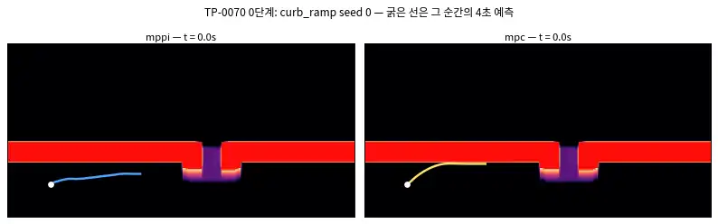

대신 두 가지는 이미 낫다. 제어 시간이 8.6 ms 대 12.6 ms이고, jerk가 2.5 대 4.4다. 가속을 상태로 두고 상자 제약을 건 덕분에 명령이 매끄럽다. 즉 추종과 계산 예산은 이미 이겼고, 부족한 것은 지형 인지 하나다.
그래서 TP-0071은 선택이 아니다. 게이트를 다시 세우지 않고 그대로 둔다. 40/40은 지형이 제약으로 들어간 뒤에 판단한다.
M.3.4 다음 단계의 설계 결정 — 격자를 acados에 어떻게 넣나
시도하기 전에 막히는 지점을 먼저 적는다. CasADi는 기호 인덱스로 벡터를 참조할 수 없다. 그래서 "TravMap 격자를 매
재계획마다 파라미터로 넘기고 로봇 위치에서 이중선형 보간" 방식은 쓸 수 없다. 어느 네 칸을 고를지가 기호 위치에 달려 있는데
그 선택이 매끄럽지 않기 때문이다. ca.interpolant는 반대로 코드 생성 시점에 데이터가 고정되어 변하는 환경에 못 쓴다.
실무의 답은 셋이고, TP-0071은 1번으로 간다.
- 지역 장애물을 소수의 원·타원·다면체로 뽑아 파라미터로 넘긴다. Zeilinger 그룹의 ClutteredEnvironment가 이 방식이다
(Controller 문서 E.7). 치명 셀 군집 $K$개(8–16)를 원 $(c_i, r_i)$로 뽑아
p로 넘기고 제약을 건다. - 지역 비용장을 소수 파라미터의 매끄러운 함수로 근사한다(다항식·RBF).
- 격자를 고정한 채 코드 생성한다. 정적 지도에만 쓸 수 있다.
$$ \lVert p_k - c_i \rVert \ \ge\ r_i + r_{\text{robot}} + \rho_k $$
이 $\rho_k$가 GP 분산(TP-0069)과 튜브·SLP가 조일 바로 그 양이다. 0단계에 이 제약이 없어서 세 기법을 얹을 자리도 아직 없다는 뜻이기도 하다.
M.3.5 TP-0071 결과 — 6/12에서 9/12로, 남은 셋은 형태가 아니라 솔버 문제다1/3
2026-10-01 정정 — 남은 셋은 솔버가 아니라 제약의 구멍이었다(M.3.10).
무엇을 넣었나. 노드마다 접평면 하나다. 매 제어 스텝에 치명 셀의 거리 변환(EDT)을 구하고, 이전 iterate가 놓인 자리에서 가장 가까운 치명 셀을 수치로 찾아 그 접평면을 파라미터로 넘긴다. 원으로 덮지 않은 이유는 travplan의 치명 기하가 대부분 벽(연석 면)이라 원이 지나치게 크게 잡기 때문이다. 노드마다 따로 걸리므로 좁은 틈도 표현된다 — 램프 양옆 벽을 서로 다른 노드가 각각 집는다.
$$ n_k^\top p_k \ \ge\ b_k, \qquad n_k = \frac{\bar p_k - c_k}{\lVert \bar p_k - c_k \rVert}, \qquad b_k = n_k^\top c_k + \text{margin} + \rho_k $$
조율에서 배운 것(seed 0, 4 시나리오). 처음 넣었을 때 2/4였다. 원인을 계측해 보니 예측 노드가 제약을 위반한 채로 최적이 되고
있었다(min h ≈ −0.13, 그런데 status = 0). 두 가지를 따로 바꿔 봤다.
| 변형 | 성공 | 비고 |
|---|---|---|
| 느슨한 벌점 1e4, RTI 1회 | 2/4 | 처음 넣은 상태 |
| 벌점만 1e6으로 | 2/4 | 혼자서는 아무것도 바꾸지 못한다 |
| RTI만 3회로 | 3/4 | |
| 벌점 1e6 + RTI 3회 | 4/4 | 채택 |
| 하드 제약 | 2/4 | QP가 status 3으로 터지고 로봇이 눈을 감는다 |
둘이 함께여야 한다. 이유는 접평면이 iterate에 매달려 있기 때문이다. RTI는 호출당 뉴턴 한 걸음이라, 한 번 풀면 노드가 움직이고 그러면 접평면도 달라져야 한다. 반복을 늘려야 제약과 해가 같은 자리에서 만난다. 하드 제약이 더 나쁘다는 것도 기록해 둘 만하다 — 풀리지 않는 QP는 안전이 아니라 무작위다.
M.3.5 TP-0071 결과 — 6/12에서 9/12로, 남은 셋은 형태가 아니라 솔버 문제다2/3

M.3.5 TP-0071 결과 — 6/12에서 9/12로, 남은 셋은 형태가 아니라 솔버 문제다3/3
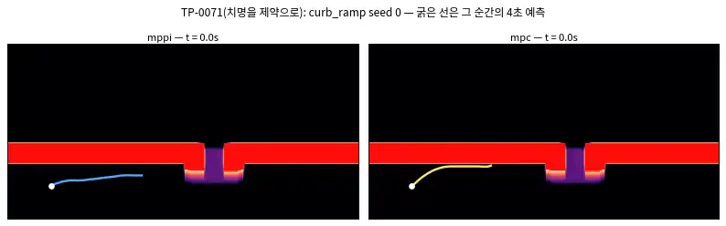

전체 결과(4 시나리오 × 3 seed, results/tp0071_constrained).
| 단계 | 성공 | GT cost | jerk | 제어 시간 |
|---|---|---|---|---|
| 0단계(지형 없음) | 6/12 | 0.039 | 2.5 | 8.6 ms |
| 1단계(치명을 제약으로) | 9/12 | 0.031 | 2.8 | 13.5 ms |
기준 guidance+mppi |
12/12 | 0.018 | 4.4 | 12.6 ms |
남은 세 실패는 한 가지를 가리킨다. 실패한 에피소드가 제어 시간 상위 세 개와 정확히 같다(26.2, 26.2, 15.0 ms — 성공한
아홉은 9.1–12.1 ms). 그 구간에서 QP가 status 3(반복 한계)을 뱉는다. 즉 남은 문제는 제약의 형태가 아니라 그 QP를 제시간에
푸는 일이다. 다음에 볼 것은 셋이다. QP 반복 예산과 condensing 지평(qp_solver_cond_N=5), 실패 스텝의 warm start 품질,
그리고 접평면이 스텝 사이에 튀는지 여부다.
대가도 적어 둔다. 성공한 curb_ramp의 경로 길이가 23–25 m다(MPPI 13.8 m). 여유 0.15 m를 지키느라 크게 돌아간다. 여유를 줄이면 빨라지지만 실패가 늘 것이다 — 이 교환을 손으로 맞추지 않는 방법이 E.6의 문맥 베이즈 최적화다.
M.3.6 GP 잔차 동역학 — 배울 것을 먼저 만들었다
막힌 곳부터. 0·1단계 내내 KinematicSim과 MPC가 같은 SwerveModel을 썼다. 모델 오차가 정의상 0이라 GP가 배울 것이
없었다. 그래서 순서를 뒤집어, plant를 먼저 세웠다(travplan/robot/plant.py, TP-0033/0034).
plant가 만드는 세 가지. 크기 순이다.
- 액추에이터 지연 — twist에 대한 1차 지연(τ = 0.2 s).
- 모듈 기구학 — 조향 속도·범위 한계, 모듈 반전, 비동축 오프셋의 스크럽.
- 지형 슬립 — 국소 경사·거칠기에서 뽑은 $s$로 실현 twist를 $(1-s)$배.
$$ x_{k+1} = f_{\text{swerve}}(x_k, u_k) + d(x_k, u_k), \qquad d \sim \mathcal{GP} $$
M.3.6 GP 잔차 동역학 — 배울 것을 먼저 만들었다자세히: 비동축에서 모듈 반전이 공짜가 아니다
plant를 만들며 걸린 것이 하나 있다. 동축 스워브에서는 조향각을 $\pi$ 돌리고 바퀴를 거꾸로 돌리면 같은 운동이 나오므로, 조향량을 줄이려고 흔히 그렇게 한다. 비동축에서는 그렇지 않다. 모듈을 $\pi$ 돌리면 접지점이 $2d$만큼 옮겨가기 때문이다.
$$ \mathbf c_i(\theta) = \mathbf p_i + d_i\, e_\perp(\theta), \qquad \mathbf c_i(\theta + \pi) = \mathbf p_i - d_i\, e_\perp(\theta) $$
그래서 두 가지가 서로 다른 기구이고, 역기구학의 고정점도 가지마다 따로 수렴시켜야 한다. 한쪽 가지에서 수렴시킨 조향각을 다른 가지의 접지점과 함께 쓰면 최소제곱이 어긋나, 이상 설정에서도 제자리 회전이 0.86만 나왔다. 가지별로 풀고 나니 오차가 $10^{-9}$로 떨어졌다.
M.3.6 GP 잔차 동역학 — 배울 것을 먼저 만들었다1/2
잔차의 크기. plant를 켜고 guidance+mppi로 2,000 샘플을 모았다. 특징은 (명령 twist, 직전 twist, 경사, 거칠기) 8차원이다.
| 채널 | 잔차 |d| 평균 | 최대 | 선형모형 $R^2$ |
|---|---|---|---|
| $dv_x$ | 0.048 | 0.167 | 0.708 |
| $dv_y$ | 0.021 | 0.107 | 0.951 |
| $d\omega$ | 0.052 | 0.281 | 0.888 |
선형모형이 이미 상당히 맞는다. 지연이 선형이기 때문이다. 그래서 GP가 이겨야 할 상대는 명목 모델이 아니라 선형 잔차 모형이다.
첫 시도는 심하게 과신했다. 95% 예측구간 적중률이 0.35/0.56/0.79였다. 원인은 단순했다 — 예측 분산에 관측 잡음 $\sigma_n^2$을 더하지 않았다. 비교 대상은 잠재 함수가 아니라 관측된 잔차다. 더하고 나니 0.92–0.96으로 맞았다.
고정 크기 딕셔너리가 무엇을 사는지. 온라인 적응을 위해 활성 집합을 링 버퍼로 두었다. 크기를 바꿔 재 봤다(보류 30%).
| 용량 | refresh | 41노드 예측 | $dv_x$ RMSE/적중 | $dv_y$ | $d\omega$ |
|---|---|---|---|---|---|
| 100 | 0.6 ms | 0.49 ms | 0.0211 / 0.93 | 0.0069 / 0.93 | 0.0310 / 0.96 |
| 200 | 1.0 ms | 0.59 ms | 0.0192 / 0.95 | 0.0062 / 0.93 | 0.0313 / 0.94 |
| 400 | 3.9 ms | 1.20 ms | 0.0190 / 0.94 | 0.0059 / 0.94 | 0.0218 / 0.92 |
| 800 | 38.3 ms | 2.57 ms | 0.0189 / 0.94 | 0.0058 / 0.94 | 0.0195 / 0.92 |
| 명목 | — | — | 0.0569 | 0.0271 | 0.0672 |
| 선형 | — | — | 0.0190 | 0.0060 | 0.0241 |
세 가지를 읽는다. 첫째, 명목 대비 RMSE가 66–78% 줄어 설계 문서의 게이트(50%)를 넘는다. 둘째, $dv_x$와 $dv_y$에서는 GP가 선형모형과 사실상 같다 — 그 채널은 지연이 지배해서 선형이 이미 정답이다. 셋째, GP가 선형을 이기는 곳은 $d\omega$ 하나이고, 용량 400부터다(0.0218 대 0.0241). 요 잔차에 비동축 스크럽과 모듈 포화의 비선형이 들어 있기 때문이다. 용량 100은 제안받은 크기인데, 보정은 맞지만 그 비선형을 놓친다. 800은 refresh가 38 ms라 제어 주기 안에서 못 돌린다.
M.3.6 GP 잔차 동역학 — 배울 것을 먼저 만들었다2/2
GP 평균을 MPC에 넣는 방법이 곧 0차 근사다. 잔차 평균을 노드별 acados 파라미터로 넣는다. 파라미터는 솔버가 상수로 보므로 $\partial \mu_d / \partial x = 0$이 구조적으로 성립한다. 즉 탐색 방향은 $f_{\text{swerve}}$의 미분만 쓰고, 전방 시뮬레이션에는 $\mu_d$가 그대로 들어간다. 따로 구현할 것이 없다 — TP-0071에서 반평면을 넣으려고 깔아 둔 파라미터 배관이 그대로 0차 GP-MPC가 된다.
$$ \dot v = u + \underbrace{\mu_d(z_k, u_k)/\Delta t}_{\text{파라미터 } p_{3:6}}, \qquad \frac{\partial}{\partial x}\Big[\mu_d\Big] \equiv 0 $$
온라인 적응. 매 제어 스텝에 직전 명령이 실제로 만든 잔차를 딕셔너리에 밀어 넣고, gp_refresh_every(기본 5) 스텝마다
Cholesky를 다시 푼다. 용량 400에서 3.9 ms이므로 5스텝에 한 번이면 평균 0.8 ms다.
M.3.7 폐루프는 아직 안 된다 — 여기까지 좁혔다
2026-10-01 정정 — 원인은 명령 출력과 학습 데이터의 속도 범위였다(M.3.12).
오프라인 GP는 게이트를 넘었지만, 그 평균을 MPC에 넣으면 폐루프가 무너진다. 숨기지 않고 적는다.
| 스택 (plant 켬) | 성공 | 제어 시간 |
|---|---|---|
mpc (GP 없음) |
9/12 | 7.8 ms |
mpc_gp |
0/12 | 30.1 ms |
배제한 것.
- 장애물 제약과의 상호작용이 아니다. 치명 셀이 없는
slope_crossfall에서도 실패한다. - GP의 오프라인 정확도가 아니다. 보류 집합에서 RMSE 67–78% 감소, 95% 적중 0.92–0.94다.
- 조건수만의 문제가 아니다. 처음엔 루프 안에서 $\mu$가 $-106$까지 튀었다(실제 잔차는 0.04). 400점 정확 GP의 $K$가 나빠 $\alpha$가 폭발한 것이고, 잡음 하한 $\sigma_n \ge 10^{-2}$과 $|\mu| \le 0.3$ 상한으로 막았다. 분포 밖 질의가 0.300에서 포화하고 정확도는 그대로인데, 그래도 0/12였다.
- 특징 정의만의 문제도 아니다. 잔차는 명령에 대해 모았는데 증강된 모델의 $Z_{k+1}$은 이미 잔차를 품고 있어, 그것을 명령 자리에 넣으면 GP가 자기 보정을 더 큰 명령으로 오해하는 양의 되먹임이 된다. $v_k + u_k \Delta t$로 고쳤다. 실패 모드는 바뀌었지만 여전히 실패한다.
- RTI 반복마다 문제 데이터가 바뀌는 것도 한몫했다. GP를 제어 스텝당 한 번만 평가하게 바꾸니 실패가
lethal에서timeout으로 바뀌고 제어 시간이 30 → 13–15 ms로 내려갔다. 개선이지만 해결은 아니다.
남은 가설. $\mu/\Delta t \approx 0.5\ \mathrm{m/s^2}$로 가속 한계(1.0)의 절반이다. 노드마다 상수로 꽂히는 이 크기가
SQP-RTI 한 걸음이 감당할 섭동을 넘는 것으로 보인다. 다음에 볼 것은 gp_scale 스윕(0.1–1.0), 잔차를 앞쪽 몇 노드에만
넣기, 그리고 QP 반복 예산이다. gp_scale과 스텝당 1회 평가는 이미 설정으로 들어가 있다.
기본값은 안전하다. MPCController(gp=None)이 기본이므로 TP-0071의 9/12는 그대로다. GP는 명시적으로 넘길 때만 켜진다.
M.3.8 GP / 희소 GP — 네 축으로 재 보면 고를 것이 정해진다1/2
계보와 인용은 Controller 문서 E.8이다. 여기에는 같은 잔차 데이터(훈련 1,400 / 보류 600)로 실제로 잰 값만 적는다. 하이퍼파라미터는 정확 GP에서 한 번 적합해 모든 변형이 공유한다 — 그래야 차이가 근사 방식에서만 온다.
| 모델 | 쓰는 데이터 | refresh | 41노드 예측 | $dv_x$ | $dv_y$ | $d\omega$ | 95% 적중 | 분포 밖 최대 |μ| |
|---|---|---|---|---|---|---|---|---|
| 정확 GP | 200 | 1.9 ms | 0.47 ms | 0.0193 | 0.0063 | 0.0303 | 0.94 / 0.98 / 0.94 | 0.4 |
| 정확 GP | 400 | 4.5 ms | 0.72 ms | 0.0190 | 0.0060 | 0.0233 | 0.94 / 0.99 / 0.94 | 0.4 |
| 정확 GP | 1400 | 121.8 ms | 4.75 ms | 0.0188 | 0.0058 | 0.0190 | 0.94 / 0.98 / 0.91 | 0.6 |
| SGPR 유도점 32 | 1400 | 3.8 ms | 0.28 ms | 0.0188 | 0.0059 | 0.0283 | 0.94 / 0.98 / 0.99 | 0.4 |
| SGPR 유도점 64 | 1400 | 5.5 ms | 0.36 ms | 0.0188 | 0.0058 | 0.0223 | 0.94 / 0.98 / 0.97 | 0.4 |
| SGPR 유도점 128 | 1400 | 13.0 ms | 0.38 ms | 0.0188 | 0.0058 | 0.0212 | 0.94 / 0.98 / 0.94 | 0.3 |
| RFF 특징 128 | 1400 | 2.4 ms | 0.21 ms | 0.0188 | 0.0059 | 0.0208 | 0.94 / 0.98 / 0.92 | 1.9 |
| RFF 특징 256 | 1400 | 4.7 ms | 0.35 ms | 0.0188 | 0.0058 | 0.0201 | 0.94 / 0.98 / 0.92 | 1.0 |
| RFF 특징 512 | 1400 | 17.9 ms | 0.73 ms | 0.0188 | 0.0058 | 0.0198 | 0.94 / 0.98 / 0.92 | 0.8 |
| 선형 기준 | 1400 | — | — | 0.0190 | 0.0060 | 0.0241 | — | — |
넷을 차례로 읽는다.
① 정확도. $dv_x$·$dv_y$는 어떤 모델을 써도 같다 — 지연이 선형이라 이미 천장이다. 차이는 전부 $d\omega$에서 난다. 정확 GP는 데이터를 다 써야(1400) 0.0189에 닿는데 그러면 refresh가 130 ms로 제어 주기 밖이다. 희소화의 값은 속도가 아니라, 데이터를 버리지 않고도 주기 안에 들어온다는 것이다 — SGPR 128은 1,400점을 모두 쓰면서 9.6 ms다.
② 보정 방향. SGPR은 $d\omega$ 적중이 0.94–0.99로 보수적이고, RFF는 0.92로 살짝 낮다. 유한 기저가 기저 사이를 지나치게 확신하기 때문이고, 유도점 변분법이 보수적인 것은 KL 하한의 성질이다(E.8, Bauer 외).
M.3.8 GP / 희소 GP — 네 축으로 재 보면 고를 것이 정해진다2/2
여기에는 구현이 한 번 개입했다. 처음 잰 RFF 적중은 0.88이었는데, 적합 뒤 $\sigma_n$을 실제 잔차로 보정하는 단계를
넣고 0.92가 됐다. 주변 우도 적합이 남긴 잡음이 부분 집합으로 만든 사후분포가 실제로 내는 오차보다 작을 수 있다 —
0.35 적중을 만든 것과 같은 병이다(M.3.6). 이제 fit()이 자동으로 한다. 그래도 방향은 남는다: 조이는 데 쓸 분산이라면
보수적인 쪽이 안전하다.
③ 시간. SGPR 64가 예측 0.30 ms로 가장 싸다. 41노드 × RTI 3회여도 1 ms 안이다.
④ 분포 밖. 입력을 3배로 부풀린 질의에서 SGPR은 0.4로 유계인데 RFF는 2.2까지 간다. MPC의 예측 지평은 로봇이 아직 가 보지 않은 곳을 지나므로 질의가 늘 가장자리에 있다. 빠른 대신 분포 밖에서 튀는 모델은 이 자리에 맞지 않는다.
권고: SGPR 유도점 64. 정확도는 정확 GP 400과 같고, 예측이 두 배 빠르며, 보정이 보수적이고, 분포 밖이 유계다. 쿼드로터 쪽에서 유도점 20개로 실물 70% 개선을 낸 선례도 같은 방향이다(E.8).
참고로 정확 GP 200/400은 데이터를 버린 결과다. M.3.6의 "용량" 스윕은 활성 집합을 그만큼으로 자른 것이고, 여기 SGPR·RFF 행은 1,400점을 다 쓰면서 요약한 것이다. 같은 refresh 예산에서 후자가 낫다.
M.3.9 희소화가 폐루프 발산을 고쳤다
2026-10-01 정정 — curb_ramp가 남은 것도 명령 출력 탓이 컸다. 고친 뒤 plant curb_ramp는 10/12다(M.3.12).
M.3.7에 적은 0/12을 SGPR로 다시 해 봤다. 정확 GP를 SGPR 유도점 64로 바꾼 것 말고는 아무것도 바꾸지 않았다.
gp_scale |
slope_crossfall | random_mix | curb_ramp |
|---|---|---|---|
| 0.00 (GP 끔) | OK (12 ms) | OK (12 ms) | timeout |
| 0.25 | OK (11 ms) | OK (16 ms) | lethal |
| 0.50 | OK (17 ms) | OK (17 ms) | lethal |
| 1.00 | OK (11 ms) | OK (15 ms) | lethal |
정확 GP는 같은 자리에서 gp_scale=1.0일 때 두 장면 모두 lethal이었다. 즉 M.3.7의 발산은 GP-MPC라는 발상의
문제가 아니라 근사 방식의 문제였다. 정확 GP의 $K^{-1}$이 만든 큰 $\alpha$가 예측 지평 끝(학습 분포 가장자리)에서
큰 보정을 뱉고, 그것이 다음 iterate를 더 바깥으로 밀어내는 되먹임이었다. 유도점 사후분포는 $m$개로 규정되고 데이터에서
멀어지면 prior로 돌아가므로 이 되먹임이 생기지 않는다. M.3.8의 "분포 밖" 열이 이것을 미리 보여 주고 있었다.
curb_ramp는 아직 남는다. 다만 gp_scale=0.0(GP를 끈 상태)에서도 timeout이므로 GP 문제가 아니라 plant를 켠
curb_ramp가 어려운 것이다. 지연과 슬립이 붙으면 램프 진입이 크게 어려워진다. 다음은 여기다.
정리. GP-MPC를 붙일 때 고를 것은 커널이 아니라 근사다. 정확 GP는 오프라인 지표가 가장 좋지만 제어 주기 안에 못 들어오고(121 ms), 분포 밖에서 위험하다. RFF는 가장 빠르지만 분포 밖이 가장 나쁘다(1.9). SGPR 유도점 64가 셋 가운데 유일하게 네 축을 모두 통과한다.
M.3.10 1단계 마무리 — 남은 셋은 솔버가 아니라 제약의 구멍이었다 (TP-0093)1/4
정적 4 시나리오 × seed 10에서 guidance+mpc가 38/40이다. 1단계(M.3.5)는 seed 0–2에서 9/12였다. 기준 guidance+mppi는 40/40이다.
남은 둘(bumps_potholes s6·s7)은 Guidance 경로가 지나가는 좁은 틈 앞에서 멈춘 timeout이다.
M.3.5에 "남은 셋은 형태가 아니라 솔버 문제"라고 적었다. 틀렸다. 세 실패는 모두 제약에 난 구멍 때문이었고, QP 반복 한계(status 3)는 원인이 아니라 증상이었다. 실패한 에피소드를 스텝마다 계측해서 찾았다.
| 구멍 | 무엇이 일어났나 | 고침 | 풀린 장면 |
|---|---|---|---|
| 덩어리 안의 노드 | 노드가 치명 덩어리 안에 들어가면 가장 가까운 치명 칸이 자기 자신이라 법선이 없다. 그래서 그 행을 껐다. 위반한 바로 그 노드에서 제약이 사라지고, 추종 비용이 예측을 덩어리 너머로 끌었다(예측 노드 3–11개가 치명 칸 안) | 덩어리 안 노드는 가장 가까운 자유 칸 쪽으로 법선을 세운다 | bumps_potholes s1 |
| 칸 중심에서 잰 여유 | 여유 0.15 m를 치명 칸 중심에서 쟀다. 가장자리 기준으로는 0.125 m였다(칸 0.05 m). 벽에 붙은 Guidance 경로를 따라가다 예측과 실행이 몇 cm 어긋나자 닿았다 | 여유를 칸 가장자리에서 잰다(반 칸 더함) | random_mix s2 |
| 지도 경계 | 시뮬레이터는 지도 밖을 COST 1로 본다. LethalField는 격자 안의 치명 칸만 봤다. 블록과 지도 끝 사이 0.6 m 통로에서 예측이 지도 밖으로 나갔다 |
가장 바깥 한 칸을 치명으로 둔다 | random_mix s6 |
구멍만 막아서는 부족했다. curb_ramp에서 새로 관측한 연석 때문에 Guidance 경로가 뒤로 뒤집히면, 벽을 따라 1 m/s로 달리던 로봇은 RTI 세 번 안에 U턴 해를 찾지 못했다. 단순 거리 제약은 노드가 여유에 닿은 뒤에야 걸리기 때문이다(TP-0093이 적어 둔 문제). 그래서 이산 CBF 감쇠를 넣었다. 노드 $k$의 여유 하한을 로봇 자신의 여유 $h_0$에서 기하급수로 줄여 간다.
$$ n_k^\top p_k \ \ge\ n_k^\top c_k + \tfrac{1}{2}\Delta + m + (1-\gamma)^k \max(h_0 - m,\ 0) $$
$h_{k+1} \ge (1-\gamma)\, h_k$를 측정한 상태에서 펼친 식이다($\Delta$는 칸 크기, $m$은 여유). 벽 쪽으로 다가가는 속도가 남은 여유에 비례해
묶이므로 붙기 전에 감속한다. acados v0.3.4는 경로 제약을 노드 1부터 $N-1$까지만 걸므로, $x_0$에 고정된 노드 0과 부딪히지 않는다.
같은 이유로 종단 노드에는 장애물 제약이 없다. 구현은 MPCConfig.cbf_gamma다. 제약을 hard로 두면(hard_obstacle) 감쇠를 끈다.
노드 1은 $u_0$로 5 mm밖에 못 움직여서, 빠르게 다가가는 중이면 그 하한을 지킬 수 없기 때문이다.
| γ | seed 0–2 | seed 3–9 | 비고 |
|---|---|---|---|
| 0 (감쇠 없음) | 10/12 | — | curb_ramp s0·s1 lethal |
| 0.05 | 10/12 | — | 너무 보수적이다. bumps_potholes s2가 timeout |
| 0.1 | 12/12 | 26/28 |
M.3.10 1단계 마무리 — 남은 셋은 솔버가 아니라 제약의 구멍이었다 (TP-0093)2/4
| γ | seed 0–2 | seed 3–9 | 비고 |
|---|---|---|---|
| 0.2 (기본값) | 12/12 | 27/28 | 남은 random_mix s6이 세 번째 구멍(지도 경계)이었다 |
표의 스윕은 지도 경계와 아래 네 번째 구멍을 고치기 전에 돌렸다.
네 번째 구멍은 코드 리뷰가 찾았다. LethalField가 칸을 내림으로 찾고 있었다. GridSpec은 칸 중심을 origin + i·res에 두고
반올림하므로, 칸마다 중심 너머 반쪽에서 이웃 칸을 읽었다. 그래서 +x·+y 면 바깥 반 칸은 덩어리 안으로 잡혀 법선이 벽을 따라
누웠고(0.1 m 칸 시험 지도에서 실제 여유 +0.04 m를 −0.04 m로), −x·−y 면에서는 여유를 낙관했다(0.040 m를 0.077 m로). 반올림으로 고쳤다.
이 구멍을 막기 전에는 정적 조건이 40/40이었다. −x·−y 면의 낙관 덕분에 좁은 틈이 실제보다 넓어 보였던 것이고, 정확한 기하로는 38/40이다.
고치는 김에 덩어리 안 노드의 법선을 칸 중심에서 재도록 바꿨다가 되돌렸다. 축에 정렬된 법선은 덩어리 모서리에서 가장 가까운 자유 칸이 면을 바꿀 때 90° 뒤집힌다. RTI iterate가 스텝마다 진동했고 bumps_potholes s1이 다시 덩어리로 들어갔다. 노드 위치에서 잰 법선은 연속적으로 변한다. 네 조합(내림·반올림 × 노드·칸 중심)을 같은 네 장면에 돌려, 반올림 + 칸 중심만 실패하는 것을 확인했다.
여유 하나로는 램프 모서리와 좁은 틈을 함께 맞추지 못한다. 정확한 기하에서 여유를 스윕했다.
| 여유 (칸 가장자리부터) | 정적, seed 0–9 | plant, seed 0–5 | 정적 실패 |
|---|---|---|---|
| 0 | 31/40 | 21/24 | 램프 모서리 lethal 6, bumps 2·random_mix 1 |
| 0.05 m | 37/40 | 21/24 | curb_ramp s1 lethal, bumps s6·s7 |
| 0.10 m | 38/40 | 21/24 | curb_ramp s0·s6 lethal |
| 0.125 m | 39/40 | 21/24 | curb_ramp s5 lethal |
| 0.15 m (기본값) | 38/40 | 21/24 | bumps s6·s7 timeout(틈) |
여유가 작으면 램프 모서리를 베어 치명 칸에 닿고, 크면 Guidance가 고른 틈을 지나가지 못한다. plant 조건은 여유와 상관없이 21/24다. 40/40을 내는 여유는 없으므로 기본값은 0.15 m로 둔다. 0.125 m와의 한 건 차이는 잡음 수준이다. 처방은 고정 여유가 아니라 두 가지다. 하나는 MPC 비용에 매끄러운 지형 항을 넣어 모서리 쪽 고비용 칸을 스스로 피하게 하는 것이다(M.1.1에 적었지만 아직 없다). 다른 하나는 Guidance가 Controller의 여유를 아는 경로를 내게 하는 것이다. 같은 불일치가 MPPI 확률 제약도 세웠다(M.3.13).
M.3.10 1단계 마무리 — 남은 셋은 솔버가 아니라 제약의 구멍이었다 (TP-0093)3/4
정정(2026-10-01, TP-0122). 위 표의 curb_ramp 치명 실패 10건 가운데 8건은 램프 모서리가 아니라 경사로 동쪽의 도로 쪽 연석면에서 났다 (5건은 스텝마다 추적, 3건은 끝 위치로 확인). 나머지 둘은 여유 0의 s4(경사로를 오르다 동쪽 모서리)와 s9(경사로 서쪽 5 m, 경로 반전 없음)다. 실패를 가른 것은 여유가 아니라 명령이었다. 명령을 고치면 이 스윕의 모든 여유에서 40/40이다(M.3.15).
| 스택 (정적, 4 시나리오 × seed 10) | 성공 | GT cost | jerk | 제어 시간 |
|---|---|---|---|---|
1단계 guidance+mpc (seed 0–2) |
9/12 | 0.031 | 2.8 | 13.5 ms |
guidance+mpc |
38/40 | 0.025 | 3.1 | 6.6 ms |
guidance+mppi |
40/40 | 0.020 | 4.4 | 13.0 ms |
제어 시간은 한 프로세스에서 컨트롤러를 차례로 돌려 잰 중앙값이다(M.3.13 표). 벤치마크 실행 중에 잰 값은 다른 작업의 부하에 따라 두세 배까지 흔들려서 쓰지 않았다.
M.3.10 1단계 마무리 — 남은 셋은 솔버가 아니라 제약의 구멍이었다 (TP-0093)4/4

M.3.11 보행자도 반평면 하나로, 다만 앞 2초에만 건다 (TP-0071 나머지)
보행자 3명이 가로지르는 조건(seed 0–5)에서 guidance+mpc가 23/24, 충돌 0이다. 최소 여유는 0.08 m다. TP-0071에 남아 있던
보행자 제약이다.
지형과 같은 방식으로 넣었다. 노드마다 그 시각에 예측한 보행자 원판 가운데 가장 가까운 것을 고르고, 원판 중심에서 노드로 향하는
접평면을 두 번째 제약 행으로 건다(obstacles.py::pedestrian_half_planes). 원판 반경에는 로봇 반경이 들어 있고,
DynamicObstacles가 예측 시간에 따라 0.15 m/s씩 키운다.
처음에는 지평 4초 전체에 걸었고 seed 0–2에서 11/12였다. 실패한 bumps_potholes s2가 이 구조의 약점을 그대로 보여 줬다. 폭 1 m 통로에서 마주 오는 보행자의 원판은 4초 뒤 반경 1.15 m가 되어 통로를 막는다. 앞으로 가는 해가 없어진 MPC는 물러났고, 물러나다 블록에 닿았다. 예측 불확실성이 지평을 따라 커지면 가능 영역이 사라진다는 Trautman의 freezing robot 구조다(TP-0090). MPPI는 같은 원판을 비용으로만 쓰므로 그 장면을 스치며 지나간다(최소 여유 0.24 m).
| 설정 (보행자 3명, seed 0–5) | 성공 | 충돌 | 최소 여유 |
|---|---|---|---|
| 앞 2 s만, slack 1e4 (지형 우선) | 22/24 | 2 | −0.04 m |
| 앞 2 s만, slack 1e6 (기본값) | 23/24 | 0 | 0.08 m |
guidance+mppi |
24/24 | 0 | 0.24 m |
slack 1e4 행은 칸 조회를 고치기 전에 쟀다. 남은 실패는 bumps_potholes s3의 lethal이다.
지형을 우선하려고 보행자 slack을 낮추면 로봇이 보행자를 스친다. 그래서 가중치는 지형과 같게 두고, 자라는 원판은 앞 2초에만 제약으로
건다(MPCConfig.ped_horizon_s). 그 너머는 매 스텝의 재계획에 맡긴다. 근본 처방은 로봇의 움직임에 반응하는 예측이다(TP-0090).
MPC는 MPPI보다 보행자에게 훨씬 바짝 붙는다(0.08 대 0.24 m). 여유 0.15 m 제약을 경계까지 쓰기 때문이다.
M.3.12 GP 평균의 폐루프를 무너뜨린 원인은 둘이었다 (TP-0068)1/2
plant를 켠 seed 0–11에서 guidance+mpc_gp가 44/48이다. GP가 없는 guidance+mpc는 37/48이다. 성공한 에피소드의 평균 도달
시간도 35.8 s에서 23.2 s로 줄었다. 대신 jerk가 2.5에서 4.5로 커졌다. M.3.7(0/12)과 M.3.9(curb_ramp 전패)에 남겨 둔 문제의
원인을 둘 찾았다.
① 명령을 잘못 냈다. GP 평균을 넣은 모델에서 상태 twist $Z_k$는 plant가 실현할 twist다. 지연 때문에 잔차 $\mu_k$는 명령과 반대쪽을 향한다.
$$ Z_{k+1} = Z_k + u_k \Delta t + \mu_k $$
그런데 컨트롤러는 GP가 없을 때처럼 $Z$의 구간 평균을 명령으로 보냈다. 이미 지연을 반영한 twist를 명령하니 plant가 한 번 더
지연시켰다. GP가 학습한 대상은 잔차를 더하기 전의 명령이다. 보내야 할 것도 그것이다. 그 명령은 $Z_k + u_k \Delta t$이고,
_features가 GP에 넣는 값도 이것이다. 온라인 학습에 넣는 입력도 실제로 보낸(속도 한계로 자른) 명령으로 맞췄다.
② 데이터가 계획 속도를 덮지 못했다. 잔차는 plant를 켜고 guidance+mppi로 모았다. 지연 때문에 그 폐루프는 명령 $v_x$가
0.93 m/s를 넘은 적이 없다(99% 분위 0.86). MPC와 MPPI는 지평 뒤쪽에서 1.1–1.5 m/s를 계획한다. 그 노드들은 분포 밖이라 평균은
믿을 수 없고, 분산은 prior로 돌아간다($d\omega$ 0.68 rad/s, 실제 잔차는 0.05 안팎).
그래서 가진(excitation) 주행을 더했다. 같은 폐루프에서 2초 구간마다 실행 $v_x$를 1.0–1.7배로 키우고 $v_y$·$\omega_z$에 매끄러운 잡음을
얹어, 명령이 twist 상자 전체를 덮게 했다(scripts/fit_residual_gp.py). 학습은 seed 0·1(MPPI 2,000 + 가진 998 샘플), 보류는 seed 2다.
| 보류 데이터 | 모델 | RMSE dvx / dvy / dωz | dωz 예측 sd | 95% 적중 |
|---|---|---|---|---|
| MPPI 주행 | 기존 (MPPI 데이터만) | 0.0181 / 0.0078 / 0.0219 | 0.026 | 0.96 / 0.99 / 0.99 |
| MPPI 주행 | 새 (MPPI + 가진) | 0.0181 / 0.0043 / 0.0159 | 0.024 | 0.97 / 1.00 / 1.00 |
| 가진 주행 | 기존 | 0.0248 / 0.0073 / 0.0661 | 0.120 | 0.90 / 0.99 / 0.95 |
| 가진 주행 | 새 | 0.0213 / 0.0071 / 0.0376 | 0.058 | 0.95 / 0.97 / 0.98 |
명목 모델(잔차 0)의 RMSE는 MPPI 주행에서 0.055 / 0.023 / 0.060, 가진 주행에서 0.076 / 0.046 / 0.115다. 새 GP는 기존 분포에서 나빠지지 않았고, 빠른 영역에서 $d\omega$ 오차와 예측 sd를 절반으로 줄였다. bumps_potholes s0를 plant로 달리며 세 시점에서 잰 MPPI rollout의 지평 끝 위치 σ(중앙값)는 0.17–0.20 m에서 0.06–0.09 m로 줄었다.
두 원인을 차례로 고친 효과(plant, guidance+mpc_gp).
M.3.12 GP 평균의 폐루프를 무너뜨린 원인은 둘이었다 (TP-0068)2/2
| 변형 | curb_ramp | bumps_potholes | slope_crossfall | random_mix |
|---|---|---|---|---|
| 기존 GP, 구간 평균 명령 (seed 0–2) | 0/3 | 1/3 | 3/3 | 3/3 |
| 새 GP, 구간 평균 명령 (seed 0–2) | 0/3 | 1/3 | 3/3 | — |
| 새 GP + 명령 수정 (seed 0–11) | 10/12 | 10/12 | 12/12 | 12/12 |
GP 없음 guidance+mpc (seed 0–11) |
6/12 | 8/12 | 11/12 | 12/12 |
데이터만 바꿔서는 curb_ramp가 하나도 풀리지 않았다. 명령을 고치자 풀렸다. 즉 ①이 주된 원인이고 ②는 그 위에서 분산을 믿을 만하게
만든 것이다. GP 없는 MPC가 curb_ramp에서 6/12인 것은 지연 때문에 램프를 지나친 뒤 되돌아오다 시간이 다 가기 때문이다(timeout 5).
GP가 지연을 미리 알면 덜 지나친다.
M.3.13 MPPI에도 확률 제약을 세웠다 (TP-0076)1/4
확률 제약을 얹을 자리는 만들었지만, 이 plant에서 GP 튜브의 이득은 아직 보이지 않는다. plant를 켠 seed 0–11에서
guidance+mppi_ccgp가 42/48, 기준 guidance+mppi가 44/48이다. 튜브 없는 guidance+mppi_cc는 정적 40/40, 보행자 3명 24/24로 기준과 같다.
Controller 문서 E.10의 (b) 갈래다(Trivedi 외, ICRA 2025). 비용이 아니라 제약으로 세운다. rollout의 스텝 $k$마다 로봇 위치가 치명 경계나 보행자 원판을 넘을 확률을 $\epsilon$ 이하로 묶고, 위치 오차를 가우시안으로 보면 결정론적 조임이 된다.
$$ \Pr\big[\,d(p_k) < 0\,\big] \le \epsilon \quad\Longleftrightarrow\quad d(\bar p_k) \ \ge\ \Phi^{-1}(1-\epsilon)\,\sigma_{p,k} $$
$d$는 부호 있는 거리(치명 경계까지, 또는 보행자 원판까지)이고 $\sigma_{p,k}$는 그 샘플의 위치 표준편차다. 샘플마다 GP로 스텝별
twist 잔차 분산을 구하고 rollout을 따라 쌓는다. 그래서 빠르고 낯선 샘플은 넓은 튜브를, 익숙한 샘플은 좁은 튜브를 받는다.
샘플마다 튜브가 다르다는 것이 MPC가 가질 수 없는 점이다. MPC는 명목 해 하나를 조인다. 구현은 CostTerm 하나
(control/mppi/chance.py)다. 위반한 샘플에 상수 벌점을 줘 사실상 버리고, 모든 샘플이 위반하면 덜 위반한 쪽이 이기도록 선형 항을 더한다.
mppi.py는 바꾸지 않았다. 그래서 rollout은 명목 모델로 돌고, GP는 분산만 쓰고 평균(지연 편향)은 쓰지 않는다.
쌓는 방식은 되먹임을 반영한다. 로봇은 매 스텝 다시 풀어 밀린 위치를 되돌리므로, 스텝 $j$의 오차는 $\tau$(1 s) 뒤에는 대부분 지워진다. 그래서 분산을 $a = e^{-\Delta t/\tau}$로 감쇠시키며 더한다. 이것이 없으면 조금만 낯선 샘플도 1초 안에 튜브가 상한(0.5 m)에 붙었다. GP는 4스텝마다 평가해 사이를 채운다(스텝마다 평가 대비 σ 오차 99% 분위 2.7 cm, 64 → 10 ms). 공유 GP 커널을 $\lVert a\rVert^2 + \lVert b\rVert^2 - 2a^\top b$ 전개로 바꿔 7,680개 질의가 45 ms에서 18 ms로 줄었다. MPC 쪽도 같이 빨라진다.
처음 넣은 버전은 로봇을 세웠다. 원인은 셋이었다.
- 고정 여유 0.15 m. MPC와 맞추려고 튜브 위에 0.15 m를 더 얹었더니 정적 조건에서 37/40이었다. 세 실패 모두 틈 앞에서 멈춘
timeout이다. 기준 MPPI는 Guidance 경로를 따라 가장 좁은 곳을 0.04–0.07 m 여유(칸 가장자리 기준)로 지나간다. 지평 4초가 그 틈에 닿는 순간 앞으로 가는 샘플이 모두 위반이 되고, 위반하지 않는 샘플은 "정지" 하나뿐이다. 넓은 길이 없어서가 아니다. 출발–목표를 잇는 경로 가운데 가장 넓은 것의 병목 여유는 bumps_potholes s1에서 0.68 m였다. Guidance가 최단 경로로 좁은 틈을 고른 것이다. 치명 칸은 이미 로봇 반폭(0.30 m)만큼 팽창돼 있으므로(FeatureConfig.inflate_radius_m) 고정 여유는 0으로 두고, 추종 오차 몫은 튜브에 맡겼다. - 가장자리까지 잰 거리. 여유 0으로도 bumps_potholes s6이 멈췄다(39/40). Guidance가 블록 사이 한두 칸짜리 틈으로 경로를 냈는데, 거리를 치명 칸 가장자리까지 재니 틈 안이 0 이하로 나왔다. 막아야 할 사건은 시뮬레이터가 실패로 보는 사건, 즉 중심에서 이중선형으로 샘플한 cost ≥ 0.95다. 이웃 칸 cost가 $c$이면 이 경계는 치명 칸 중심에서 $0.05\,\Delta/(1-c)$ 떨어진 곳이다(0.05 m 칸에서 $c = 0.3$이면 0.4 cm). 그래서 거리를 치명 칸 중심까지 잰다. 0선이 실패 경계보다 엄격하지 않고 한 칸 넘게 느슨하지 않다는 것을 테스트로 고정했다.
M.3.13 MPPI에도 확률 제약을 세웠다 (TP-0076)2/4
- 분포 밖 분산. M.3.12의 ②와 같은 원인이다. 기존 GP로는 지평 끝 σ가 0.17–0.20 m여서 튜브가 0.3 m를 넘었다. 고정 여유 0.15 m와 기존 GP를 함께 쓴 첫 버전은 plant 조건 seed 0–2에서 9/12였다.
남은 plant 실패가 가르쳐 준 것. curb_ramp s5(mppi_ccgp, lethal)를 스텝마다 뜯어봤다. 실패 직전 믿음 지도와 실제 지도의 여유는
같았다(σ 0, 다 관측). 1스텝 위치 예측 오차는 중앙값 6 mm였다. 제약을 지키는 샘플도 768개 가운데 94–216개 남아 있었다. 실행한 평균 계획은
0선에서 1.5–5 cm 떨어져 있었는데, 그 자리의 cost가 0.89였다. 이웃 칸 cost가 0.9에 가까우면 실패 경계는 치명 칸 중심에서 반 칸(2.5 cm)
바깥이다. 2번에서 고른 0선은 낮은 cost 이웃을 가정한 것이라, 램프 벽 옆에서는 실패 경계보다 느슨했다(M.3.14에서 재 보니 지도별 99% 분위로 최대 5.0 cm, 한 칸 가까이). 다음 할 일은 둘이다.
0선을 실패 경계에 정확히 맞추는 것(cost 기울기 방향으로 $z\sigma$만큼 옮긴 점의 이중선형 cost로 판정), 그리고 rollout에 GP 평균을 넣는 것이다.
전체 결과. 제어 시간은 bumps_potholes s0를 plant로 달리며 한 프로세스에서 컨트롤러를 차례로 돌려 잰 중앙값이다.
| 스택 | 정적 (seed 0–9) | 보행자 3명 (seed 0–5) | plant (seed 0–11) | 제어 시간 |
|---|---|---|---|---|
guidance+mppi |
40/40 | 24/24, 충돌 0 | 44/48 | 13.0 ms |
guidance+mppi_cc (튜브 없음, 여유 0) |
40/40 | 24/24, 충돌 0 | 41/48 | 16.1 ms |
guidance+mppi_ccgp (GP 튜브) |
— | — | 42/48 | 35.9 ms |
guidance+mpc |
38/40 | 23/24, 충돌 0 | 37/48 | 6.6 ms |
guidance+mpc_gp (GP 평균) |
— | — | 44/48 | 9.2 ms |
M.3.13 MPPI에도 확률 제약을 세웠다 (TP-0076)3/4

세 가지를 읽는다. 첫째, plant에서 이득을 본 것은 MPC의 GP 평균이다(37 → 44/48). 지연이라는 체계적 오차는 평균으로 갚는 것이다. 둘째, MPPI의 GP 튜브는 이 plant에서 1스텝 오차가 6 mm라 쓸 몫이 작고, 남은 실패는 0선의 느슨함에서 온다. 셋째, MPC는 정적·보행자에서 MPPI보다 한두 건 뒤지지만 계산은 절반이고 jerk가 낮다(정적 3.1 대 4.4). CLAUDE.md 기준표로는 다섯 스택 모두 통과다 (보행자 3명 seed 0–2에서 12/12, 충돌 0, 최대 pitch 8° 아래, GT cost 0.06 아래).
정정(2026-10-01, TP-0122). 첫째와 셋째 해석은 명목 MPC의 명령을 고친 뒤 바뀌었다. 명령만 고친
mpc도 plant 44/48이라 GP 평균의 몫은 작다. MPC는 정적·보행자에서 MPPI와 같아졌고(40/40, 24/24), jerk는 오히려 높다(정적 6.7 대 4.4, M.3.15).
M.3.13 MPPI에도 확률 제약을 세웠다 (TP-0076)4/4
다음.
- MPC에 분산을 넣는다(TP-0069). 반평면의 $\rho_k$ 자리에 $\Phi^{-1}(1-\epsilon)\,\sigma_{p,k}$를 넣으면 된다. 배관은 이미 있다.
- MPC 비용에 매끄러운 지형 항(M.1.1)을 넣고, Guidance 경로의 여유를 Controller와 맞춘다. 고정 여유로 모서리와 틈을 함께 못 맞춘 문제다.
- 확률 제약의 0선을 실패 경계에 맞추고(→ M.3.14에서 했다, TP-0119), rollout에 GP 평균을 넣는다(TP-0120).
planner_d+mpc·planner_d+mpc_gp를 Planner D 체크포인트가 있는 데스크톱에서 돌린다(시간 참조 모드).
M.3.14 확률 제약의 0선을 실패 경계에 맞췄다 (TP-0119)1/2
확률 제약의 0선이 이제 시뮬레이터가 치명 실패로 판정하는 경계 위에 놓인다. 평가 지도 46장(GT 40장, 믿음 지도 6장)에서 0선이
참 경계에서 떨어진 거리(지도별 99% 분위)는 중앙값 4.33 cm에서 0.59 cm로, 최댓값 4.97 cm에서 0.78 cm로 줄었다. 부호를 덮어쓰지 않은
필드만 보면, 실패하는 표본 점 760,561개 가운데 안전(0 이상)으로 읽은 점이 rim 12,830개에서 exact 245개로 줄었다. 실제로 쓰는 방식은
부호를 시뮬레이터의 판정으로 덮어쓰므로 정의상 0개다. plant 조건 seed 0–23(스택당 96 에피소드)에서 guidance+mppi_ccgp는
85/96에서 89/96, 튜브 없는 guidance+mppi_cc는 87/96에서 89/96이 됐다(기준 MPPI 88/96). 하지만 결과가 갈린 짝이 6:2, 8:6이라
성공 수 차이는 유의하지 않다(부호 검정 p ≈ 0.29, 0.79). 정적·보행자 조건은 그대로다. 그래서 근거는 성공 수가 아니라 기하 정확도와
남은 실패의 원인이다. exact 쪽 치명 실패 12건 가운데 필드가 로봇 위치를 실제보다 1 cm 넘게 멀다고 읽은 경우는 없다(최대 0.20 cm).
ChanceConstraintCost의 기본값을 boundary="exact"로 바꿨다.
무엇이 틀렸나. M.3.13의 두 번째 고침은 0선을 치명 칸 중심에 두었다. 치명 칸(cost 1)과 cost $c$인 이웃 칸을 잇는 선 위에서 이중선형 cost는 $1 - t(1-c)$이므로, 실패 경계는 치명 칸 중심에서 $t = 0.05/(1-c)$칸 떨어진 곳이다. $c = 0.3$이면 0.07칸(0.4 cm)이라 중심에 둬도 맞았다. 그러나 $c = 0.9$면 반 칸, $c = 0.94$면 0.83칸이다. 램프 벽 옆 칸이 그렇다. rim 0선은 그만큼 실패 영역 안쪽에 있고, 그만큼 낙관적이다. M.3.13에서 curb_ramp s5를 뜯어보며 적은 "cost 0.89"는 실행한 계획 아래의 cost였다. 실패 지점의 이중선형 cost는 0.974였고, 옆 자유 칸 줄의 cost는 0.911, 그 옆 치명 칸 줄은 0.998이었다. 그래서 실패 경계는 치명 칸 중심에서 $(0.998-0.95)/(0.998-0.911) = 0.55$칸(2.7 cm) 바깥이다.
M.3.14 확률 제약의 0선을 실패 경계에 맞췄다 (TP-0119)2/2

어떻게 고쳤나. 치명 실패 집합을 시뮬레이터의 정의 그대로 둔다. 이중선형 cost가 0.95 이상인 점과 지도 밖이다. 자세 한계(roll·pitch)로 넘어지는 실패는 이 집합에 넣지 않았다. 이 실험의 실패 가운데 그런 것은 0건이었다.
$$ F = \{\, p : B(p) \ge 0.95 \,\} \,\cup\, \text{지도 밖} $$
그 경계까지의 부호 있는 거리를 칸 중심마다 구해 두고(control/failure_sdf.py), 질의는 이중선형으로 보간한다. 보간은 볼록한
모서리에서 거리를 조금 더 크게 읽을 수 있으므로, 부호만은 시뮬레이터의 판정으로 덮어쓴다. MPPI는 rollout의 모든 점에서 cost를
이미 샘플하고 있어서(mppi.py가 terrain_attitude로 넘긴다), 덮어쓰기에 드는 것은 비교 한 번이다. 비교는 시뮬레이터처럼 float64로 한다.
float32로 비교하면 float32(0.95) = 0.94999999가 0.95 이상으로 잡힌다. 그러면 시뮬레이터가 안전하다는 점을 실패로 읽는다(검토에서
찾아 테스트로 고정했다).
M.3.14 확률 제약의 0선을 실패 경계에 맞췄다 (TP-0119)자세히: 경계를 정확히 그리는 방법과, 그것을 재는 오라클
경계를 그린다. 칸 중심 네 개로 이루어진 2×2 조각 가운데 치명과 자유가 섞인 조각에만 경계가 지나간다. 조각 안에서 $(u, v) \in [0,1]^2$로 쓰면
$$ B(u, v) = c_{00}(1-u)(1-v) + c_{01}u(1-v) + c_{10}(1-u)v + c_{11}uv $$
이고, 변 위에서는 선형이라 교차점이 정확히 나온다. 교차점이 넷이면 안장점이다. 안장점 값 $c_s = (c_{00}c_{11} - c_{01}c_{10})/(c_{00}+c_{11}-c_{01}-c_{10})$이 0.95 이상인지로 두 호를 짝짓는다(점근 판정). 각 호에는 현의 수직이등분선과 등위선이 만나는 점을 하나 더 찍는다. 직선 위의 $B$는 이차식이라 세 점이면 정확하다. 그래서 호 하나가 꺾은선 두 토막이 된다.
거리를 퍼뜨린다. 경계 조각의 꼭짓점마다 그 꺾은선까지의 정확한 거리를 적고(씨앗), 지도 가장자리의 자유 칸은 0으로 둔다(지도는 가장 바깥 칸 중심에서 끝난다). EDT 한 번으로 모든 칸에 가장 가까운 씨앗까지 거리 + 씨앗의 거리를 준다. 자유 칸에서는 이것이 상한이라 8방향 chamfer를 두 번 돌려 조인다. 치명 칸에는 음의 깊이를 준다(위반 정도를 매기는 데만 쓴다).
오라클. 경계 조각 안의 격자선 $u = k/m$, $v = k/m$ 위에서 $B = 0.95$를 풀어 등위선 위의 점을 촘촘히 뽑는다(그리고 자유 칸이 맞닿은 지도
가장자리). 그 점들까지의 KD 거리 $d_G$는 참 거리 $d_F$와 $d_G - \Delta/m \le d_F \le d_G$ 관계라, $m = 64$에서 0.8 mm 안이다.
질의 전 준비(등위선 표본과 KD 트리)만 지도 한 장에 13–22 ms(거리장 생성의 3–6배)가 들어 제어 루프에는 못 쓰고, 평가와 테스트에만 쓴다
(scripts/eval_failure_boundary.py). 오라클 자체는 16배 촘촘한 격자의 EDT와 따로 맞춰 봤다(tests/test_failure_sdf.py).
M.3.14 확률 제약의 0선을 실패 경계에 맞췄다 (TP-0119)1/11
정확도. 지도마다 무작위 점 12만 개와 오라클의 경계 점에서 두 필드를 쟀다. 통계는 등위선($B = 0.95$)에만 낸다. 지도 테두리도 실패 경계지만, 두 필드 모두 구성상 테두리에서 정확해 섞으면 분위만 좋아 보인다. 테두리가 가장 가까운 점은 따로 쟀고, 두 필드 모두 절대 오차 99% 분위가 0.3 cm 안이다. 부호 있는 오차는 필드 − 참값이라, 양수가 위험한 쪽(실제보다 멀다고 읽음)이다. 안전하다고 읽은 수는 부호를 덮어쓰지 않은 필드로 센다. 덮어쓰면 exact는 정의상 0이라 기하를 재지 못한다.
| 지표 (지도 46장: GT 40 + 믿음 6) | rim (TP-0076) | exact (TP-0119) | 수용 기준 |
|---|---|---|---|
| 실패하는 점을 안전(≥ 0)으로 읽은 수, 덮어쓰기 전 | 12,830 / 760,561 | 245 | — |
| 같은 수, 시뮬레이터 판정으로 부호를 덮어쓴 뒤 (실제 쓰는 방식) | (쓰지 않음) | 0 (정의상) | 0 |
| 경계 5 cm 안의 실패점 가운데 안전으로 읽은 비율, 지도 평균 (최대) | 23.9% (54.1%) | 0.36% (3.72%) | — |
| 0선 오차의 99% 분위, 지도별 중앙값 / 최댓값 | 4.33 / 4.97 cm | 0.59 / 0.78 cm | 최댓값 ≤ 1.0 cm |
| 경계 옆 0–2 cm에서 엄격한 쪽, 지도별 1% 분위의 최솟값 / 최소 | −1.06 / −3.62 cm | −1.03 / −1.48 cm | ≥ −1.0 / −2.5 cm |
| 경계 15 cm 안에서 낙관, 지도별 99% 분위의 최댓값 / 최대 | 4.97 / 5.93 cm | 0.98 / 1.53 cm | ≤ 1.0 / 2.5 cm |
| 거리장 생성 시간 (4 시나리오, 중앙값) | 2.2–2.5 ms | 3.6–4.1 ms | rim + 2.5 ms 이내 |
엄격한 쪽 기준(−1.0 cm)만 bumps_potholes 지도 4장에서 최대 0.03 cm 넘겼다. 이 오차는 실제보다 가깝다고 읽는 쪽이라 안전을 해치지 않는다. 믿음 지도 6장은 curb_ramp s5와 bumps_potholes s6의 plant 궤적을 30·60·99%까지 다시 관측해 만들었다. 0선 오차와 낙관의 분위는 GT 지도와 같은 범위다. 다만 실패점을 안전으로 읽는 일은 믿음 지도에서 더 잦다. exact의 245개 가운데 157개가 믿음 지도 6장에서 나왔고, 경계 5 cm 안 비율의 최대 3.72%도 curb_ramp s5 믿음 지도다(GT 지도는 최대 0.54%).
경계에서 멀어지면 exact도 느슨해진다. 거리를 퍼뜨리는 EDT는 가장 가까운 씨앗 칸을 고를 뿐, 경계 위 최근접점이 가장 가까운 씨앗을
고르지 않는다. chamfer 두 번은 그 차이를 두 칸 안에서만 고친다. 그래서 실제보다 멀다고 읽는 양(지도별 99% 분위의 중앙값)이 경계 0–5 cm에서
0.40 cm, 5–15 cm에서 0.87 cm, 15–30 cm에서 1.41 cm, 0.6–1.5 m에서 2.01 cm로 커진다(지도별 최댓값 0.67, 1.05, 1.64, 3.29 cm). rim은
모든 거리에서 3.4–4.2 cm다. 확률 제약이 읽는 것은 튜브 폭 안쪽이다. plant 실행의 튜브는 스텝 1에서 mppi_cc 0, mppi_ccgp 0.35–0.57 cm이고,
지평 끝에서 중앙값 약 9 cm(90% 분위 13–14 cm, curb_ramp s5)다. 그래서 판정 대부분이 15 cm 안 구간에서 나고, 지평 끝의 넓은 튜브만
15–30 cm 구간(99% 분위 최대 1.6 cm 낙관)을 읽는다. 최근접점을 함께 퍼뜨리는 방식(벡터 전파)도 한 번 시험했다(지도 8장, 일회성 실험이라
원자료는 남기지 않았다). 먼 구간 오차는 절반 남짓 줄었지만 생성 시간이 세 배 넘게 늘어 넣지 않았다.
M.3.14 확률 제약의 0선을 실패 경계에 맞췄다 (TP-0119)2/11

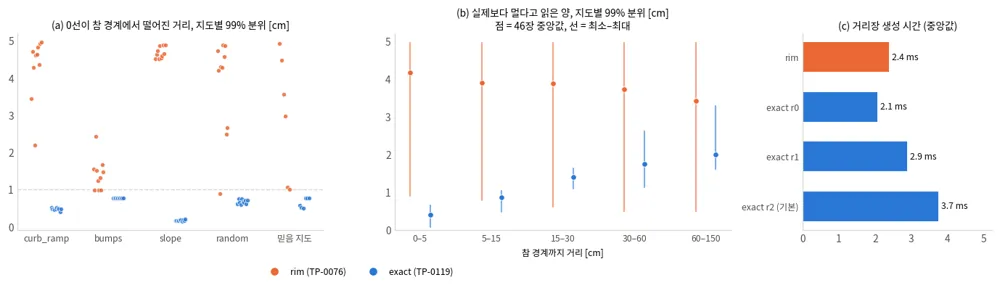
기록된 실패를 다시 쟀다. M.3.13의 표에 쓴 plant 실행(seed 0–11)에서 MPPI 계열이 치명 칸에 닿은 15건을 오라클로 되짚었다.
그중 한 쌍(curb_ramp s0의 mppi와 mppi_cc)은 같은 궤적이라 14건으로 센다. 실패 지점에서 rim 필드는 14건 가운데 10건을
"아직 안전(0 이상)"이라고 읽고 있었다. exact는 덮어쓰기 때문에 정의상 0건이다. 덮어쓰기가 닿지 않는 실패 직전 7스텝(0.7 s)에서
참값과의 평균 절대 차이는 rim 1.90 cm, exact 0.06 cm다. 실제보다 가장 멀리 읽은 양은 rim 4.84 cm, exact 0.62 cm다. 가장 극단적인 curb_ramp s7에서 rim은 실패 지점을
+3.77 cm로 읽었고, 참값은 −0.33 cm였다.
M.3.14 확률 제약의 0선을 실패 경계에 맞췄다 (TP-0119)3/11

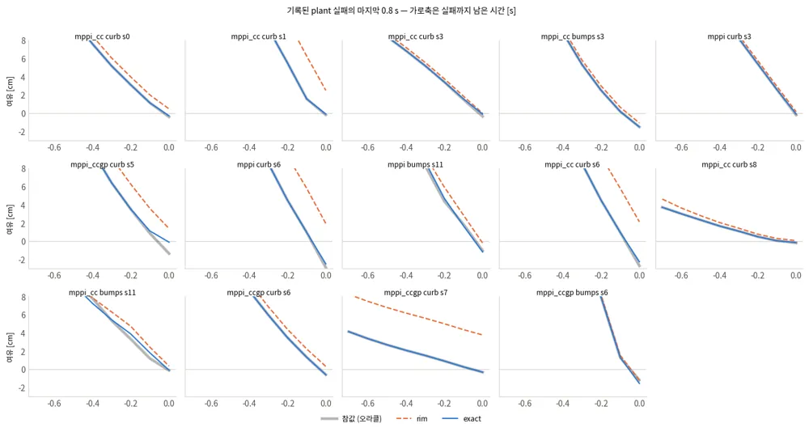
M.3.14 확률 제약의 0선을 실패 경계에 맞췄다 (TP-0119)4/11
폐루프 짝 비교. rim 쪽은 TP-0076 기록을 그대로 쓰되, 기록된 실패 두 건(mppi_ccgp curb_ramp s5 30.8 s, mppi_cc curb_ramp s1 31.7 s)이
같은 시각에 재현되는 것을 먼저 확인했다. 기록이 없던 칸(mppi_ccgp의 정적·보행자 rim 쪽)과 seed 12–23은 새로 돌렸다.
| 스택 | 쪽 | 정적 (seed 0–9) | 보행자 3명 (seed 0–5) | plant (seed 0–11) | plant (seed 12–23) | plant 합계 |
|---|---|---|---|---|---|---|
guidance+mppi |
기준 | 40/40 | 24/24, 충돌 0 | 44/48 | 44/48 | 88/96 |
guidance+mppi_cc |
rim | 40/40 | 24/24, 충돌 0 | 41/48 | 46/48 | 87/96 |
guidance+mppi_cc |
exact | 40/40 | 24/24, 충돌 0 | 44/48 | 45/48 | 89/96 |
guidance+mppi_ccgp |
rim | 39/40 | 24/24, 충돌 0 | 42/48 | 43/48 | 85/96 |
guidance+mppi_ccgp |
exact | 39/40 | 24/24, 충돌 0 | 45/48 | 44/48 | 89/96 |
정적 조건의 실패 하나는 두 쪽 모두 bumps_potholes s6의 timeout이다. Guidance가 좁은 틈으로 경로를 낸 장면으로, 0선과는 무관하다(TP-0118).
plant의 exact 쪽 실패는 mppi_cc 7건이 모두 치명이고, mppi_ccgp 7건은 치명 5건과 timeout 2건(bumps_potholes s6, s11)이다.
보행자 최소 여유는 mppi_ccgp exact 쪽이 0.30 m로 rim 쪽(0.18 m)보다 넓었다. CLAUDE.md 기준표(보행자 3명, seed 0–2)는 네 스택 모두
12/12, 충돌 0, 최대 pitch 7.8°, GT cost 평균 0.016 이하로 통과다.
M.3.14 확률 제약의 0선을 실패 경계에 맞췄다 (TP-0119)5/11

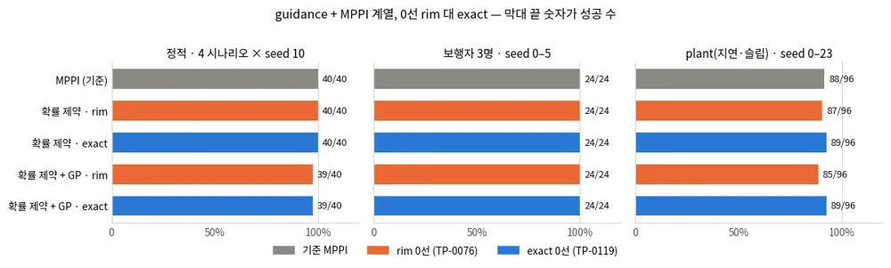
남은 실패의 원인. exact 쪽 치명 실패 12건과, mppi_ccgp에서 exact가 고친 rim 쪽 치명 실패 5건을 다시 돌려 스텝마다 기록했다
(scripts/eval_failure_boundary.py attribute). mppi_cc에서 exact가 고친 8건은 돌리지 않았다. 판정은 위에서부터 차례로 보고, 처음 맞는 것을
붙인다. 인식과 기하는 마지막 0.8 s 가운데 로봇이 참 경계 5 cm 안에 있던 스텝만 본다. 그보다 멀면 믿음 지도의 몇 cm 차이는 흔하고 해가 없다.
| 판정 | 기준 | exact 쪽 (12건) | rim 쪽 (5건) |
|---|---|---|---|
| 인식 | 믿음 지도의 경계가 GT와 1 cm 넘게 다르다 | 1 | 2 |
| 기하 | 그 쪽 필드가 로봇 위치를 실제보다 1 cm 넘게 멀다고 읽었다 | 0 | 1 |
M.3.14 확률 제약의 0선을 실패 경계에 맞췄다 (TP-0119)6/11
| 판정 | 기준 | exact 쪽 (12건) | rim 쪽 (5건) |
|---|---|---|---|
| 불가능 | 마지막 3스텝 가운데 제약을 지키는 샘플이 하나도 없던 스텝이 있다 | 6 | 1 |
| 계획 위험 | 마지막 스텝에서 계획의 다음 점이 GT로 이미 실패다 | 0 | 0 |
| 지연 | 계획의 다음 점은 GT로 안전했는데, 실제로 간 점이 실패했다 | 5 | 1 |
exact 쪽에서 필드가 실제보다 멀다고 읽은 양은 최대 0.20 cm였다. rim 쪽 다섯 건 가운데 넷은 0.8–4.1 cm였다(1 cm를 넘은 것은 둘). 남은 실패의 원인은 이제 기하가 아니다. "지연" 6건은 모두 마지막 스텝에서 계획의 다음 점이 참값으로 0.23–0.69 cm 안전했다. 실제로 간 점은 그보다 0.36–1.01 cm 경계 쪽에 떨어져 실패했다. 그 앞 7스텝에서도 실제 위치는 대부분(42점 가운데 37점) 계획한 위치보다 조금 경계 쪽이다(아래 그림). 이 6건에서 마지막 0.8 s의 1스텝 예측 오차는 최대 1.0–1.6 cm, 중앙값 0.8–1.0 cm인데 스텝 1 튜브는 0–0.5 cm다. 지연이 만드는 계통 편향은 분산(튜브)으로 덮을 수 없다. GP의 평균을 rollout에 넣어야 갚을 수 있고, 그것이 TP-0120이다. 가장 큰 분류는 "불가능"(6건)이라, 지연 편향이 남은 실패의 주원인이라는 것은 아직 추정이다. 근거는 있다. "불가능" 7건 가운데 6건에서도 벽 15 cm 안의 스텝마다 실행이 계획보다 평균적으로 벽 쪽으로 밀렸다. 편향을 모른 채 벽 쪽으로 붙은 뒤에는 어떤 샘플도 제약을 지킬 수 없다. 이 추정은 TP-0120에서 확인한다.
M.3.14 확률 제약의 0선을 실패 경계에 맞췄다 (TP-0119)7/11

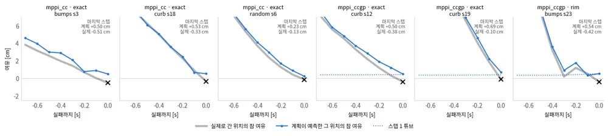
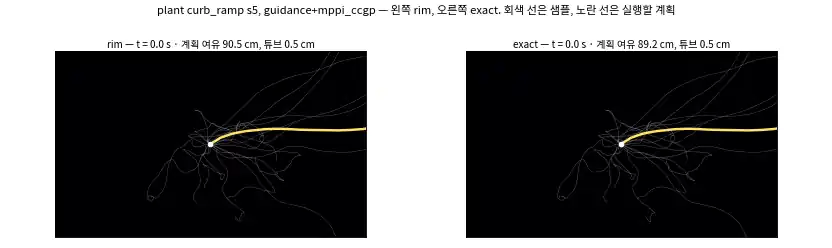guidance+mppi_ccgp. 왼쪽이 rim, 오른쪽이 exact다. 회색은 MPPI 샘플, 노란 선은 실행할 계획이며 제목에 계획의 첫 1 s 최소 여유와 튜브 폭이 나온다. rim은 램프 벽을 0선 안쪽으로 믿고 붙다가 30.8 s에 실패하고, exact는 벽 앞에서 물러났다가 43.9 s에 도달한다.

M.3.14 확률 제약의 0선을 실패 경계에 맞췄다 (TP-0119)8/11
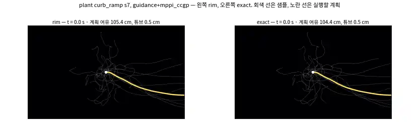

M.3.14 확률 제약의 0선을 실패 경계에 맞췄다 (TP-0119)9/11

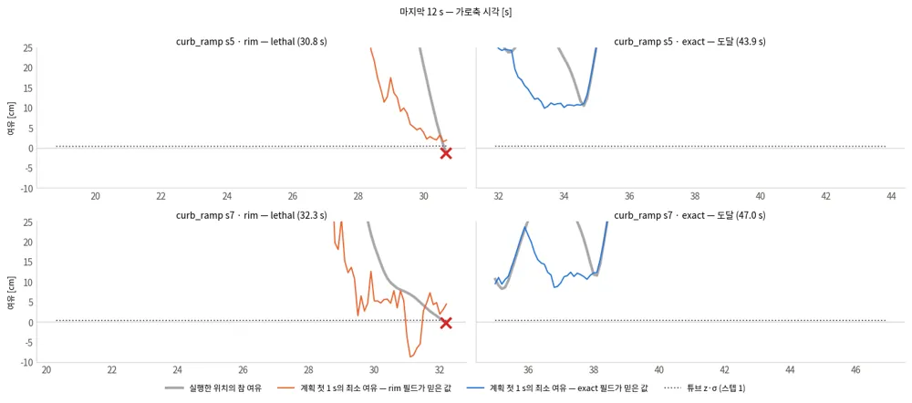
M.3.14 확률 제약의 0선을 실패 경계에 맞췄다 (TP-0119)10/11
메커니즘. 성공 수 대신, 실행한 위치가 참 경계에 얼마나 바짝 붙었는지를 모든 plant 스텝(실패 스텝 제외)에서 셌다.
| 스택 | 쪽 | 에피소드별 최소 참 여유, 중앙값 / 하위 10% | 참 여유 1 cm 미만 스텝 | 2 cm 미만 스텝 |
|---|---|---|---|---|
mppi_ccgp |
rim | 14.25 / 1.22 cm | 17 | 41 |
mppi_ccgp |
exact | 15.63 / 2.01 cm | 6 | 24 |
mppi_cc |
rim | 13.79 / 1.46 cm | 9 | 20 |
mppi_cc |
exact | 13.09 / 0.87 cm | 41 | 77 |
튜브가 있는 mppi_ccgp에서는 exact가 바짝 붙는 스텝을 65% 줄였다. 튜브가 없는 mppi_cc에서는 반대로 늘었다. 여유가 0이고 튜브도
없으면, 정확한 0선은 로봇이 진짜 경계에 바로 붙는 것을 허용하기 때문이다. rim은 일부 기하(오목한 모서리)에서 실제보다 엄격해,
의도하지 않은 여유를 주고 있었다. 정확한 0선 위에서는 추종 오차 몫을 튜브가 맡아야 한다. 튜브가 없다면 작은 고정 여유가 맡아야 한다.
mppi_cc의 기본값도 exact로 바꿨지만, 이 스택의 성공 수 변화(87 → 89)는 잡음 범위이고 바짝 붙는 스텝은 늘었다는 점을 함께 적어 둔다.
M.3.14 확률 제약의 0선을 실패 경계에 맞췄다 (TP-0119)11/11

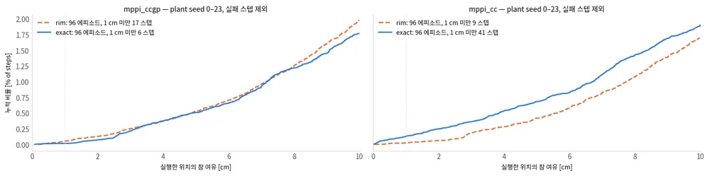
시간. 같은 요청을 두 쪽에 차례로 넣어 짝지어 쟀다(plant bumps_potholes s0, 145 스텝, 부하 평균 3, 순서는 스텝마다 바꿈).
중앙값으로 mppi_cc는 17.3 ms에서 19.3 ms, mppi_ccgp는 34.6 ms에서 36.7 ms다. 둘 다 2 ms 남짓 늘었고, 거리장 생성 차이(1.3–1.6 ms)가
대부분이다. 둘 다 제어 주기 100 ms 안이다. 컨트롤러가 내는 control_ms는 이제 거리장 생성을 포함한 전체 호출 시간이다(전에는 MPPI
최적화만 셌다). 원자료는 results/tp0119/control_timing.tsv(eval_failure_boundary.py control-timing)다.
MPC 쪽은 TP-0117에서 다룬다. 같은 거리장을 MPC 반평면의 오프셋에 쓸 수 있다. 하지만 MPC는 고정 여유 0.15 m를 쓰고, 지형 비용을
더하는 TP-0117이 바로 그 여유를 다시 정한다. 그래서 두 변경을 함께 재는 편이 맞다. 헬퍼(control/failure_sdf.py)는 이미 두
Controller가 함께 쓸 수 있는 자리에 있다. (결과: 명령을 고친 MPC는 여유 0에서도 정적 40/40이라, 0선의 정밀도가 성공을 가르지 않았다.
그래서 MPC에는 넣지 않았다. M.3.15–M.3.16)
M.3.15 명목 MPC는 계획한 가속의 절반만 내고 있었다 (TP-0122)1/5
명목 MPC의 명령을 구간 평균에서 다음 노드 twist로 바꾸자 정적 실패가 모두 사라졌다. 정적 seed 0–9에서 guidance+mpc는
여유 0–0.15 m의 모든 값에서 40/40이다(이전 31–39/40). 보행자 3명은 24/24(이전 23/24), plant는 44/48(이전 37/48)이고, 보류 seed
10–19도 40/40(이전 39/40)이다. 대가는 jerk다. 정적 rms jerk가 3.1에서 6.7로 두 배가 됐다(기준 MPPI 4.4). 기본값을
command="next"로 바꿨고, 이전 표는 --ctrl-cfg command=mean으로 그대로 재현된다(정적 seed 0–9 40건이 경로 길이 1e-9까지 같다).
무엇이 틀렸나. 명목 분기는 각 구간의 평균 twist $Z_k + \tfrac12 u_k\,\Delta t$를 보냈다. 시뮬레이터는 받은 명령을(가속 한계로 자른 뒤)
그대로 새 twist로 쓴다. 그래서 계획한 가속 $u_k$의 절반만 실현됐다. 감속도 절반이라 같은 속도에서 정지 거리가 두 배가 된다.
GP 분기는 M.3.12에서 이미 $Z_k + u_k\,\Delta t$를 보내도록 고쳤다. 명목 분기만 구간 평균에 남아 있었다. 명령만 고친 mpc도 plant 44/48로
M.3.12의 mpc_gp(44/48)와 같다. M.3.12의 37/48 대 44/48 격차의 상당 부분은 GP가 아니라 이 명령 차이였던 셈이다.
E0 진단. M.3.10의 여유 스윕에서 실패한 9개 장면을 스텝마다 계측했다. 아홉 장면 모두 실현 가속/계획 가속의 중앙값이 정확히 0.50이었다. 추적한 curb_ramp 치명 실패 다섯 건(여유 0의 s0, 0.05의 s1, 0.10의 s0·s6, 0.125의 s5)은 모두 경사로 동쪽 1–4 m의 도로 쪽 연석면 (y ≈ 2.53 m, 팽창된 치명 띠의 경계)에서 났다. 다섯 건 모두 직전 2 s 안에 Guidance 경로가 135–174° 뒤집혔고, 로봇은 벽 쪽으로 0.64–0.88 m/s로 다가가고 있었다. 돌아서는 동안 계획한 감속의 절반만 실현돼 연석면을 넘어간 것이다. 스윕의 curb_ramp 치명 실패는 모두 10건이다. 추적하지 않은 다섯 건(여유 0의 s1·s4·s6·s8·s9) 가운데 s1·s6·s8은 끝 위치가 같은 연석면이다. s4는 경사로를 오르다 그 동쪽 모서리에서, s9는 경사로 서쪽 5 m에서 경로 반전 없이(직전 2 s 최대 39°) 실패했다. 그래서 M.3.10의 "램프 모서리"는 열 건 가운데 한 건에만 맞는다. 명령 탓이라는 결론은 그대로다.
M.3.15 명목 MPC는 계획한 가속의 절반만 내고 있었다 (TP-0122)2/5

M.3.15 명목 MPC는 계획한 가속의 절반만 내고 있었다 (TP-0122)3/5
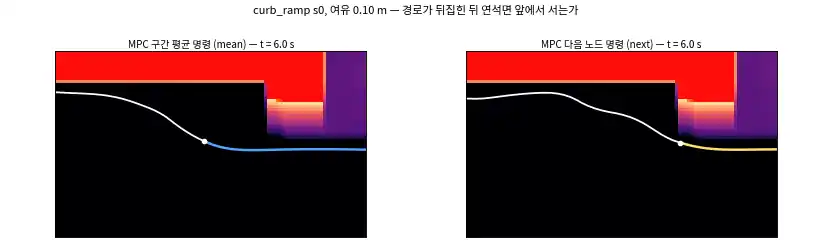

고침. MPCConfig.command를 두었다. "next"는 $Z_{k+1} = Z_k + u_k\,\Delta t$를 보낸다. 모델이 정확히 이 식이라, 시뮬레이터가 계획한 가속을
그대로 실현한다. 테스트 두 개를 더했다. 정지에서 출발할 때 첫 명령이 next는 $a_{\max}\Delta t$, mean은 그 절반이다. 시뮬레이터의
twist 갱신으로 5스텝 폐루프를 돌리면 next만 계획한 속도에 닿는다.
E1 결과. 같은 코드에서 두 명령을 여유별로 다시 돌렸다(mean의 0.15 m는 TP-0093 실행이며 이 코드에서 비트 단위로 재현된다).
| 여유 | 구간 평균 명령 (정적 seed 0–9) | 다음 노드 명령 |
|---|---|---|
| 0 | 31/40 (치명 8, timeout 1) | 40/40 |
| 0.05 m | 37/40 (치명 2, timeout 1) | 40/40 |
| 0.10 m | 38/40 (치명 2) | 40/40 |
| 0.125 m | 39/40 (치명 1) | 40/40 |
| 0.15 m (기본) | 38/40 (timeout 2) | 40/40 |
M.3.15 명목 MPC는 계획한 가속의 절반만 내고 있었다 (TP-0122)4/5
| 조건 (여유 0.15 m) | 구간 평균 명령 | 다음 노드 명령 |
|---|---|---|
| 보행자 3명, seed 0–5 | 23/24, 충돌 0, 최소 여유 0.08 m | 24/24, 충돌 0, 최소 여유 0.17 m |
| plant, seed 0–11 | 37/48 | 44/48 (고침 9, 새 실패 2: curb s0 timeout, curb s5 치명) |
| 정적 보류 seed 10–19 | 39/40 | 40/40 |
| 정적 rms jerk / GT cost 평균 / 도달 시간 | 3.1 / 0.025 / 17.9 s | 6.7 / 0.027 / 16.1 s |
bumps_potholes s6·s7의 timeout(M.3.10이 "Guidance가 고른 좁은 틈" 탓으로 돌린 것)도 다음 노드 명령에서는 풀렸다. 틈 앞에서 멈춘 메커니즘은 따로 재지 않았다.
CLAUDE.md 기준표(보행자 3명, seed 0–2)는 12/12, 충돌 0, 최대 pitch 7.6°, GT cost 평균 0.028로 통과다.
jerk. 실현 가속이 두 배가 되니 jerk도 두 배다(모든 시나리오에서 2.1배). 줄이는 방법을 둘 시험했다.
| 구성 (여유 0.15 m) | 정적 seed 0–9 | rms jerk | GT cost 평균 | 비고 |
|---|---|---|---|---|
next |
40/40 | 6.7 | 0.027 | 기본값 |
next + 가속 가중치 ×2 (w_a) |
39/40 | 5.8 | 0.027 | 보행자에서 충돌 1 |
next + Δu 비용 w_du=1 |
40/40 | 4.8 | 0.039 | 보행자 24/24, 보류 seed 40/40, plant 23/48 |
next + Δu 비용 w_du=2 |
39/40 | 4.0 | 0.045 | curb s4 timeout |
next + Δu 비용 w_du=5 |
39/40 | 3.8 | 0.050 | bumps s1 치명, 도달 21.1 s |
폐루프 jerk는 스텝마다 새로 푼 첫 가속 $u_0$가 바뀌는 만큼이다. 그래서 첫 스테이지의 가속 기준을 0 대신 직전 스텝의 $u_0$로 두는 Δu 비용
(MPCConfig.w_du)을 넣었다. jerk는 줄지만 GT cost가 오르고 도달이 늦어진다. w_du=1은 정적·보행자·보류 seed에서는 성공을 지켰지만,
지연·슬립이 있는 plant에서 23/48로 무너졌다(curb_ramp 12건 가운데 11건 실패). 미리 정한 품질 기준(GT cost ≤ 0.030, jerk ≤ 4.4)으로 봐도
next 단독은 jerk 하나를, w_du=1은 둘 다 넘지 못한다. 그래서 기본값은 w_du=0으로 두고 장단을 여기 적는다. jerk를 GT cost와
plant 성공을 잃지 않고 줄이는 일은 후속 과제다(TP-0123).
M.3.15 명목 MPC는 계획한 가속의 절반만 내고 있었다 (TP-0122)5/5
검증에서 고친 것 하나: acados의 cost_set은 solver에 남는다. 같은 컨트롤러에서 w_du를 켰다 끄면 첫 스테이지에 w_du 가중치가 그대로 남았다.
지금은 끌 때 빌드 때의 가중치로 되돌린다. 위 표의 실행은 w_du를 실행 내내 바꾸지 않아 이 문제를 겪지 않았다. 켰다 끈 뒤의 출력이 처음과 같다는 것과,
w_du를 크게 주면 첫 가속이 직전 가속으로 당겨진다는 것을 테스트로 확인한다(tests/test_acados_mpc.py).
M.3.16 부드러운 여유 행은 최악 여유를 넓히지만 성공 수는 더하지 않는다 (TP-0117)1/5
명령을 고친 MPC는 이미 정적 40/40이라, 부드러운 여유 행이 보탤 것은 여유였고 실제로 그것만 보탰다. 정적 seed 0–9에서 같은 hard
여유 0.10 m끼리 비교하면, 에피소드별 최소 GT 여유(치명 칸 가장자리까지)의 5% 분위가 10.2 cm에서 12.2 cm로, 최솟값이 5.6 cm에서 9.5 cm로
올랐다(여유 0.15 m끼리는 9.7 → 12.9 cm, 1.1 → 2.7 cm). 최솟값은 한 에피소드가 정하므로 5% 분위가 더 믿을 만하다.
하지만 성공은 늘지 않았다. 스택 기본값(여유 0.10, ℓ 0.3)은 정적 39/40(next 40/40), 보류 seed 10–19 39/40(40/40), 보행자 3명 23/24(24/24),
plant 41/48(44/48)이다. 미리 정한 기본값 기준은 정적(A4: 39/40 이상, 치명 0), 보류 seed(A5: 기준 MPC 이상), 보행자(A6: 23/24 이상, 충돌 0),
plant(A7: 기준 MPC에 없던 치명 실패가 생기지 않을 것)였다. 이 설정은 A5와 A7을 넘지 못했다. 고친 코드에서 규칙이 새로 고르는 (0.10, ℓ 0.2, 50)은
정적 40/40, 보류 seed 40/40, 보행자 24/24로 A4–A6을 넘지만, plant 41/48에서 기준 MPC에 없던 치명 실패가 다섯 건(curb_ramp s2·s4·s6·s9, bumps_potholes s6)
생겨 A7을 넘지 못했다. 그래서 두 설정 모두 기본값으로 켜지 않고 선택 스택 mpc_sc·mpc_gp_sc로 둔다(스택 기본값은 ℓ 0.3).
GP 평균과 함께 쓴 mpc_gp_sc는 plant 45/48(ℓ 0.2는 44/48)로 mpc_gp(44/48)와 한 건 이내다. 하지만 mpc_gp에 없던 치명 실패가 설정마다 한 건씩 있다
(ℓ 0.3은 curb_ramp s4, ℓ 0.2는 bumps_potholes s11).
무엇을 넣었나. 지형 행과 같은 법선 위에 한쪽 2차 퍼텐셜을 하나 더 세웠다. 소프트 행의 slack을 2차로만 벌하면 그것이 곧 비용이다.
$$ \tfrac12\,w_c\,\big(\tau_k - d_k(p)\big)_+^2, \qquad \tau_k = \min\!\big(\ell,\ W_k/2\big) $$
$d_k$는 노드에서 가장 가까운 치명 칸 가장자리까지의 거리, $W_k$는 그 법선을 따라 잰 자유 폭이다(LethalField.free_width, res/4 간격 광선,
지도 테두리 포함). 벽이 하나뿐이면 목표는 벽에서 $\ell$이다. $2\ell$보다 좁은 통로에서는 가운데 선이 목표라, hard 행이 들여보내는 통로를
소프트 행이 막는 일이 없다. 가우스-뉴턴 헤시안이 정확하고 볼록하다. 종단 노드에는 진행 가중치 $w_{xy,e}$와 같은 비율의 가중치로 같은 행을 둔다.
ℓ = 0이면 OCP·파라미터·solver 이름이 이전과 비트 단위로 같다. 켜면 solver 이름에 구조를 정하는 필드의 해시가 붙는다. 그래서 한 프로세스에서
두 구조가 같은 이름의 라이브러리를 나눠 쓰는 일이 없다. solver의 slack이 노드마다 $(b_s - n\cdot p)_+$와 같고, solver 비용이 위 식(stage는 $\Delta t$배,
종단은 가중치 비율)과 소수 여덟째 자리까지 같다는 것을 테스트로 확인한다.
검증에서 고친 것과 다시 잰 것. 자유 폭 광선이 계단형 벽에서 같은 벽의 다음 칸에 걸려 폭을 0으로 읽는 경우가 있었다. 그러면 그 노드의 목표 $\tau$가 0이 되어
소프트 행이 꺼진다. 발에서 반 칸 안의 히트는 같은 벽이므로 건너뛰게 고쳤다(테스트: 기울기 세 가지의 계단형 벽). 벽에서 한두 칸 안에서는 칸 중심 법선이 벽을 따라
기울어 폭을 아직 작게 읽을 수 있다. hard 여유(0.10 m) 밖의 노드는 실제 폭을 읽는다. 고친 코드로 mpc_sc의 실행을 모두 다시 돌렸다(스윕 440, 확인 160 에피소드).
정적 (0.10, 0.3, 50)은 40개 가운데 38개가 그대로였고, curb_ramp s9가 도달(17.4 s)에서 timeout으로 바뀌었다. 두 실행의 첫 차이는 98번째 스텝의 종단 노드 하나였다
(벽에서 1 cm, $\tau$ 0.010 → 0.030 m). 그 2 cm가 폐루프에서 커져, 로봇이 램프 출구까지 올라갔다가 되돌아와 입구 모서리 앞에서 멈췄다.
체계적 차이라기보다 이 장면이 그만큼 아슬아슬하다는 뜻이다. 이 절의 숫자는 모두 고친 코드의 것이다. 고치기 전 숫자는 정적 40/40, 보류 seed 39/40, 보행자 23/24,
plant 42/48, mpc_gp_sc plant 45/48이었다.
M.3.16 부드러운 여유 행은 최악 여유를 넓히지만 성공 수는 더하지 않는다 (TP-0117)2/5
스윕(E2, 정적 seed 0–9, mpc_sc). 미리 정한 규칙은 치명 0 → 최다 성공 → 인접 여유가 (최다 − 1) 이상인 평탄 구간 → 큰 여유 →
최소 여유 5% 분위 → 도달 시간 순이다. 고치기 전 코드의 1단계(여유 0.025–0.10 m, ℓ 0.2·0.3, $w_c$ = 50)에서도 (0.10, 0.2)와 (0.10, 0.3)은
모두 40/40, 치명 0이었다. 그러니 규칙의 다음 단계인 5% 분위가 둘을 갈랐어야 했고, ℓ 0.2가 근소하게 높았다(12.3 대 12.2 cm). 그런데도 (0.10, 0.3, 50)을 골라
2·3단계($w_c$ 20·100, 여유 0.075–0.15 m)와 확인(E4)을 그 설정으로 돌렸고, 그 설정이 스택 mpc_sc의 기본값이다(도달 시간은 ℓ 0.3이 15.3 s로 ℓ 0.2의 15.6 s보다 짧다).
선택을 잘못 적용한 것이다. 고친 코드에서는 (0.10, 0.3)이 39/40이 되어, 규칙이 성공 수만으로 (0.10, 0.2, 50)을 고른다. 규칙의 선택인 ℓ 0.2의 확인을
E5로 더 돌렸다(위 판정). 2·3단계는 그 설정에서 다시 돌리지 않았다.
| ℓ (m) / $w_c$ | 여유 0.025 | 0.05 | 0.075 | 0.10 | 0.125 | 0.15 |
|---|---|---|---|---|---|---|
| 0.3 / 50 | 39/40 | 40/40 | 40/40 | 39/40 | 40/40 | 40/40 |
| 0.2 / 50 | 39/40 | 39/40 | — | 40/40 | — | — |
| 0.3 / 20, 0.3 / 100 (여유 0.10) | — | — | — | 39/40(치명 1), 39/40 | — | — |
M.3.16 부드러운 여유 행은 최악 여유를 넓히지만 성공 수는 더하지 않는다 (TP-0117)3/5

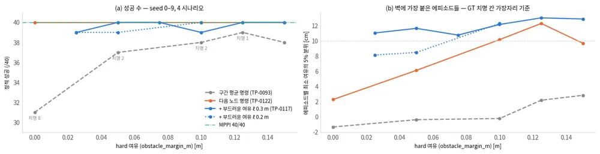

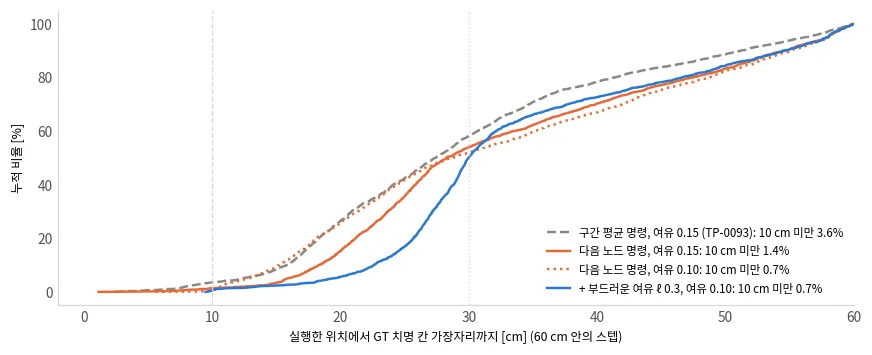
| 지표 (정적 seed 0–9) | 구간 평균, 0.15 | next, 0.15 |
next, 0.10 |
mpc_sc, 0.10 / ℓ 0.3 |
mpc_sc, 0.10 / ℓ 0.2 |
|---|---|---|---|---|---|
| 성공 | 38/40 | 40/40 | 40/40 | 39/40 | 40/40 |
| 에피소드별 최소 여유: 최솟값 / 5% 분위 / 중앙값 | 2.4 / 2.8 / 17.6 cm | 1.1 / 9.7 / 21.9 cm | 5.6 / 10.2 / 17.5 cm | 9.5 / 12.2 / 22.2 cm | 9.5 / 12.3 / 18.3 cm |
| curb_ramp 에피소드의 최소 여유 | 2.8 cm | 17.5 cm | 13.3 cm | 15.4 cm | 12.7 cm |
| 도달 시간 / GT cost 평균 / rms jerk | 17.9 s / 0.025 / 3.1 | 16.1 s / 0.027 / 6.7 | 15.6 s / 0.028 / 6.3 | 15.2 s / 0.033 / 6.3 | 15.5 s / 0.027 / 6.3 |
M.3.16 부드러운 여유 행은 최악 여유를 넓히지만 성공 수는 더하지 않는다 (TP-0117)4/5

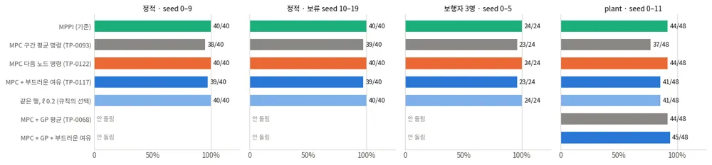
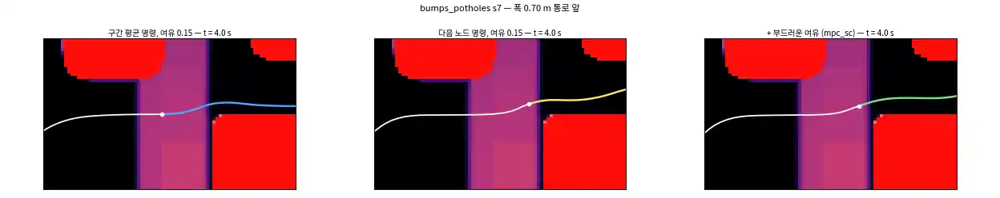mpc_sc)은 이 통로에 들어가지 않고 가운데 블록 위쪽으로 돌아 13.6 s에 도달한다. 세 패널 모두 왼쪽 로봇이 있는 곳을 보여 준다.

M.3.16 부드러운 여유 행은 최악 여유를 넓히지만 성공 수는 더하지 않는다 (TP-0117)5/5
왜 성공 수가 늘지 않았나. 여유 행은 벽에서 떨어지게 하지만, 남은 실패는 벽에 붙어서가 아니다. 정적·보류 seed의 실패는 curb_ramp s9·s10의 timeout이고,
plant에서는 여유 행만 실패한 장면이 넷(curb s6·s9 치명, curb s7 timeout, bumps s6 치명)이고 여유 행이 고친 장면은 curb s0 하나다.
네 장면의 원인은 따로 재지 않았다. Part C(경사·거칠기의 연속 비용 행)는 고친 코드에서 발동 조건 하나가 걸렸다. 정적 GT cost 평균이 0.033으로 문턱 0.030을 넘는다.
이 값은 curb_ramp s9 한 건이 입구 모서리 앞에서 40 s 멈추는 동안 0.21을 쌓은 탓이고, 성공한 에피소드만 평균하면 0.028이다. 여유 행을 기본값으로 켜지 않으므로
Part C는 여기서 짓지 않고, 그 내용은 TP-0123(jerk와 경사·거칠기 비용)으로 넘긴다. M.1.1 표의 TraversabilityCost 줄은 그대로 열어 둔다.
TODO의 TP-0117 제목(노드별 cost 기울기 항)과 실제로 넣은 것(부드러운 여유 행)이 다르다. 기울기·거칠기 항은 TP-0123에서 jerk와 함께 다룬다.
시간. 같은 요청에 여섯 컨트롤러를 차례로 넣어 쟀다(plant bumps_potholes s0, 145 스텝, 부하 평균 1.2, 순서는 스텝마다 돌림,
python -m scripts.time_controllers → results/tp0117/control_timing.tsv). 여유 행은 중앙값 0.4–0.7 ms를 더한다. QP가 실패(status ≠ 0)한 풀이는 없었다.
| 컨트롤러 | 중앙값 | 95% 분위 | 최대 |
|---|---|---|---|
mpc (구간 평균 명령) |
6.7 ms | 8.8 ms | 13.0 ms |
mpc (다음 노드 명령, 기본) |
6.4 ms | 8.7 ms | 13.3 ms |
mpc_sc |
7.2 ms | 9.3 ms | 15.4 ms |
mpc_gp |
9.0 ms | 16.6 ms | 18.1 ms |
mpc_gp_sc |
9.5 ms | 16.8 ms | 34.0 ms |
mppi |
13.0 ms | 16.7 ms | 24.1 ms |
M.3.17 Guidance 경로에 여유를 주면 plant 실패가 줄고 도달은 빨라진다 (TP-0118)1/8
여유를 아는 Guidance(guidance_c)는 다섯 컨트롤러 모두에서 성공을 지키거나 늘렸다. 같은 seed끼리 짝지어 비교하면 정적 159 → 160/160,
보류 seed 160 → 160/160, 보행자 72 → 72/72(충돌 0), plant 221 → 228/240이다. 짝지은 도달 시간은 정적에서 0.6–5.3% 줄었다.
벽을 덜 끼고 도는 경로가 Controller를 덜 멈추게 해서, 여유를 사는 비용(경로 +1.6%)보다 빨라진 몫이 크다.
기본값은 바꾸지 않는다. Playground의 JS Guidance와 Planner D 입력을 함께 바꿔야 하기 때문이다(TP-0121).
무엇을 넣었나. Dijkstra 칸 가중치에 치명 칸까지의 거리 힌지를 더했다.
$$ \kappa_c = 1 + 4\,\mathrm{cost}_c + 0.5\,\sigma_c + \lambda\,\mathrm{clip}\!\big(1 - e_c/d_0,\ 0,\ 1\big), \qquad \lambda = 10,\ d_0 = 0.30\ \mathrm{m} $$
$e_c$는 칸 중심에서 가장 가까운 치명 칸 중심(또는 지도 테두리)까지의 거리다. MPC가 쓰는 LethalField.dist와 같은 장임을 테스트가 고정한다.
간선은 더하거나 빼지 않으므로 도달 가능성은 그대로이고, 다른 길이 없으면 좁은 틈도 그대로 쓴다. $\lambda = 0$(기본)이면 거리 변환을 아예 계산하지 않아
경로가 비트 단위로 같다. 러너는 이제 Planner 자신의 Guidance를 쓴다. 전에는 러너가 기본 Guidance를 따로 계산해 넘겨서, Planner 쪽 설정이 조용히 무시됐다.
벤치마크에서는 Planner 이름 guidance_c로 고른다.
왜 필요했나 (오프라인). 치명 특징은 로봇 반폭만큼 팽창돼 있어 cost가 0.95 이상에서 곧바로 0 근처로 떨어진다. 그래서 기본 경로는 치명 띠의 가장자리에
붙고 한 칸짜리 틈도 지난다. GT 지도 48장(4 시나리오 × seed 0–11)에서 기본 경로가 MPC 노드 한계(여유 0.15 m + 반 칸 = 0.175 m)를 지키는 지도는
17장뿐이었다. 넓은 길이 없어서가 아니다. 출발과 목표를 잇는 길 가운데 가장 넓은 것의 병목은 모든 지도에서 0.269 m 이상이다.
guidance_c는 48장 모두에서 0.175 m를, 46장에서 0.30 m를 지킨다. 경로 길이는 평균 1.6%(최대 16%, 2.8 m) 늘었다.
M.3.17 Guidance 경로에 여유를 주면 plant 실패가 줄고 도달은 빨라진다 (TP-0118)2/8

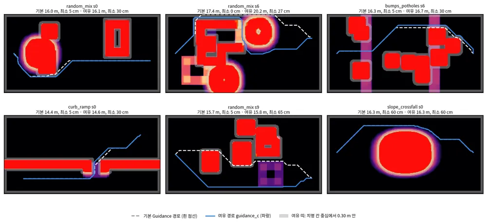
M.3.17 Guidance 경로에 여유를 주면 plant 실패가 줄고 도달은 빨라진다 (TP-0118)3/8
실제로 받은 경로 (폐루프 재현). 각 실행이 1 Hz마다 받은 경로를 그대로 다시 만들었다. L0 belief는 지나간 위치와 sim의 잡음 생성기에만 달려 있어서, 기록된 궤적을 따라 다시 관측하면 매 스텝의 belief가 정확히 같아진다(재현한 경로 42개가 실행 중 스냅숏과 모두 같다). 앞 0.3–6 m 구간의 최소 여유가 0.175 m보다 작은 갱신의 비율은 다음과 같다.
| 측정 | 기본 경로 (정적 seed 0–19 / plant) | 여유 경로 (정적 seed 0–19 / plant) |
|---|---|---|
| 관측한 칸에서 잰 GT 여유 | 44.6% / 46.7% | 4.5% / 3.7% |
| belief의 치명 칸 기준 (Planner가 알 수 있는 것) | 51.3% / 53.0% | 1.7% / 1.8% |
| GT 전체 (아직 못 본 칸 포함) | 53.2% / 54.5% | 22.1% / 19.0% |
미리 정한 기준은 "guidance_c+mpc 정적 재현에서 GT 기준 5% 이하"였다. 그 값이 21.4%(네 컨트롤러·seed 0–19를 모으면 22.1%)라 이 기준은 넘지 못했다. 남은 부분은 Planner가 아직 보지 못한 칸에서 나온다.
정적 MPC 실행에서 이런 갱신의 87%는 최솟점이 미관측 칸이고, 최솟점은 중앙값으로 5.7 m 앞이다(센서 범위 5 m). 관측한 칸만 재면 4.2%다(모으면 4.5%).
그래서 미리 정한 단계적 재시도($\lambda$ = 20, 5, $d_0$ = 0.45)는 돌리지 않았다. 셋 다 Planner가 본 칸의 경로만 바꾸고, 그 비율은 이미 1.7%다.
기준을 정할 때 미관측 칸을 빼지 않은 것이 잘못이었다.
M.3.17 Guidance 경로에 여유를 주면 plant 실패가 줄고 도달은 빨라진다 (TP-0118)4/8

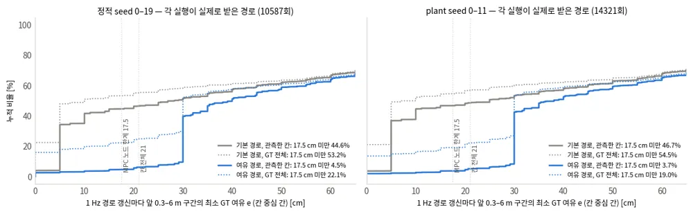
폐루프 결과. 같은 명령으로 guidance+X와 guidance_c+X를 짝지어 돌렸다. 기본 경로 쪽은 이전 결과(TP-0119·TP-0122·TP-0117·TP-0068 행)를
에피소드마다 재현했다(성공·실패 유형이 같고 시간 차 0.3 s 이내, 참조가 있는 552개 모두). 러너 변경이 기본 동작을 바꾸지 않았다는 확인이다.
| 성공 (기본 → 여유) | mppi |
mppi_cc |
mppi_ccgp |
mpc |
mpc_gp |
|---|---|---|---|---|---|
| 정적 seed 0–9 | 40 → 40 | 40 → 40 | 39 → 40 | 40 → 40 | — |
| 보류 seed 10–19 | 40 → 40 | 40 → 40 | 40 → 40 | 40 → 40 | — |
M.3.17 Guidance 경로에 여유를 주면 plant 실패가 줄고 도달은 빨라진다 (TP-0118)5/8
| 성공 (기본 → 여유) | mppi |
mppi_cc |
mppi_ccgp |
mpc |
mpc_gp |
|---|---|---|---|---|---|
| 보행자 3명 seed 0–5 | 24 → 24 | 24 → 24 | — | 24 → 24 | — |
| 보행자가 여유 경로 위 | 24 | 24 | — | 24 | — |
| plant seed 0–11 | 44 → 47 | 44 → 44 | 45 → 45 | 44 → 45 | 44 → 47 |

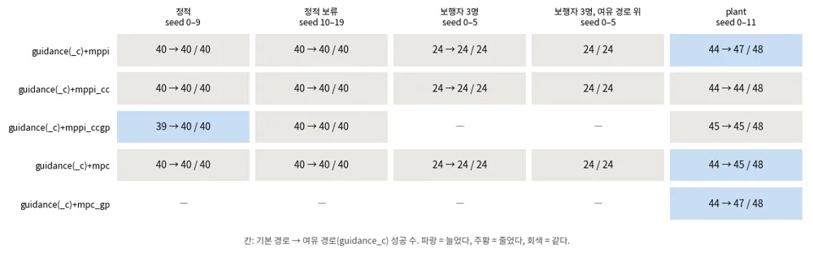
M.3.17 Guidance 경로에 여유를 주면 plant 실패가 줄고 도달은 빨라진다 (TP-0118)6/8
여유 경로는 실행한 경로의 여유도 넓혔다. 에피소드별 최소 GT 여유의 중앙값이 정적에서 mppi 13.0 → 15.3 cm, mppi_cc 11.6 → 16.6 cm,
mpc 21.9 → 24.9 cm로, plant에서 mppi_cc 10.9 → 19.6 cm, mpc 15.6 → 22.7 cm로 올랐다. 보행자 조건에서도 1 m 안으로 마주친 에피소드 수는
거의 같았다(23 → 22–23/24). 여유 경로가 보행자를 피해서 이긴 것이 아니다. 짝지은 시간과 길이는 보류 seed mpc의 −9.9%부터 plant mpc의 +2.2%까지,
길이는 −1.3%부터 +2.5%까지였다. 미리 정한 한도(시간 +10%, 길이 +8%) 안이다. 조건별 평균 GT cost는 0.051 이하, 최대 pitch는 9.4° 이하, 충돌은 0이다. 에피소드 단위로는 셋이 0.24 안팎이다.
plant mpc_gp curb_ramp s5 0.241(timeout)과, random_mix s6의 plant mpc 0.239·mpc_gp 0.237이다. random_mix s6에서는 여유 경로가 기본 경로(0.141·0.184)보다
GT cost가 높고 pitch도 2.9–3.0°에서 5.3–5.5°로 올랐다. 치명 칸을 멀리 돌아가는 길이 언덕 비탈을 지나기 때문이다(그림 경로의 random_mix s6 패널).

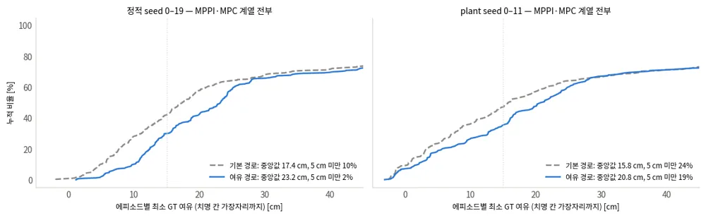

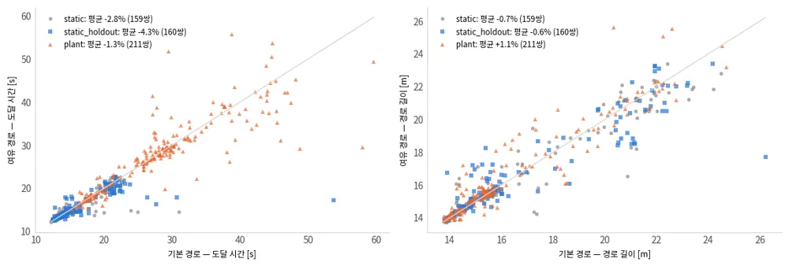
plant에서 무엇이 바뀌었나. bumps_potholes의 실패가 거의 사라졌다. 기본 경로의 plant 실패 가운데 bumps_potholes는 mppi 1, mppi_cc 2, mppi_ccgp 2,
mpc_gp 2건, 합계 7건이었다. 여유 경로에서는 mpc 1건(s0 timeout)만 남았다. curb_ramp는 합계가 11 → 11로 같지만 컨트롤러마다 갈렸다.
mppi(3 → 1)와 MPC 계열(6 → 3)은 줄었고, 확률 제약 MPPI 두 스택(2 → 7)은 늘었다. 두 스택에서 새로 실패한 일곱 건 가운데 다섯은 램프 입구(y ≈ 2.16 m)의
치명 실패이고, 여유 경로가 고친 것은 두 건이다. seed 12개의 짝 비교라 우연과 구별되지 않는다(mppi_cc 4 대 1, 단측 부호 검정 p ≈ 0.19).
원인은 재지 않았고 후속 과제로 둔다(TP-0127).
M.3.17 Guidance 경로에 여유를 주면 plant 실패가 줄고 도달은 빨라진다 (TP-0118)7/8
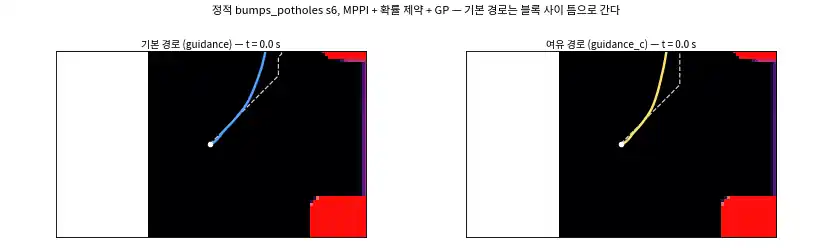mppi_ccgp. 점선은 1 Hz Guidance 경로의 앞부분, 색 선은 MPPI의 4 s 예측이다. 기본 경로(왼쪽)는 두 블록 사이의 좁은 틈으로 내려가고, 로봇은 틈 앞에서 멈춰 60 s에 timeout이다. 여유 경로(오른쪽)는 오른쪽 블록 위로 돌아 14.9 s에 도달한다.

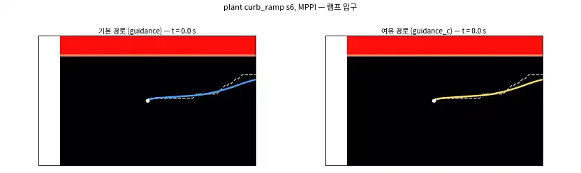mppi. 지연 때문에 두 실행 모두 램프 입구를 지나쳤다가 고리를 그리며 돌아온다. 기본 경로 쪽은 돌아 들어오다 입구 모서리의 연석면에 닿아 26.9 s에 치명 실패한다. 여유 경로 쪽은 입구 가운데로 들어가 37.7 s에 도달한다.

M.3.17 Guidance 경로에 여유를 주면 plant 실패가 줄고 도달은 빨라진다 (TP-0118)8/8
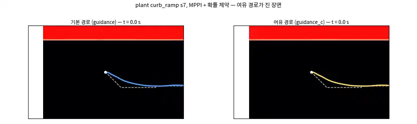mppi_cc, 여유 경로가 진 장면. 여기서도 두 실행 모두 입구를 지나쳐 고리를 그린다. 여유 경로 쪽은 돌아 들어오는 각이 급해 입구 오른쪽 모서리를 베고 26.0 s에 치명 실패한다. 기본 경로 쪽은 41.8 s에 도달한다. plant의 curb_ramp에서는 이 고리의 모양이 성패를 가른다.

판정. 미리 정한 필수 기준 10개 가운데 아홉은 넘었다. 넘지 못한 것은 메커니즘 기준(Must 9)이다. 네 항목 가운데 앞쪽 경로 여유를 GT 전체로 잰 항목
(guidance_c+mpc 정적 재현)이 21.4%로 한도 5%를 넘었고, 경로 전환 횟수 항목은 재지 않았다. 앞의 것은 위에서 본 대로 기준을 잘못 정한 것이고, 관측한 칸으로는 4.2%로 넘는다. 그래서 규칙대로 guidance_c는 선택 스택으로 두고, Controller 비교의 Guidance로 권한다. 다만 plant curb_ramp에서
확률 제약 MPPI가 지는 장면이 있으니 그 비교에는 두 경로를 함께 싣는다. 기본값 전환은 TP-0121(Planner D 입력)과 Playground JS를 함께 바꿀 때 한다.
계산은 Guidance 한 번에 중앙값 약 +1.9 ms다(GT 지도 48장, 기본·여유를 번갈아 9회씩, 부하 평균 2.3; 지도별 +0.5 ~ +3.0 ms, 치명 거리 변환만 약 1.7 ms). 한도 3 ms 안이지만 여유는 1 ms쯤이다. routes.tsv의 compute_ms는 부하 중 3회 측정이라 이 비교에 쓰지 않는다.
M.3.18 GP 분산 튜브는 1번 노드에서 맞지만 여유도 성공도 늘리지 않았다 (TP-0069)1/4
잔차 GP의 분산으로 MPC 제약을 조이는 3단계는 측정되는 효과가 없었다. 튜브는 1번 노드에서 잘 보정돼 있다(한쪽 coverage 97.4%, 목표 95%).
하지만 같은 여유끼리 짝지어 보면 실행 여유가 늘지 않았다. 짝지은 최소 GT 여유의 중앙값 차이가 0.00 cm이고, 95% 신뢰구간이 두 여유 모두에서 0을 포함한다.
튜브는 계획을 조금 더 조심스럽게 만들 뿐, 실제 경로를 벽에서 떼지 못했다. 설계안(여유 0.10 + 튜브)은 plant 42/48로 기준(mpc_gp 44/48)에 못 미쳤다.
미리 정한 재시도 두 번도 기준을 넘지 못했다. 여유 0.125 + 튜브는 plant 46/48을 냈지만 보행자에서 22/24였고, 작은 튜브는 plant 40/48이었다.
그래서 MPCConfig.tube_eps는 0(꺼짐)이 기본값이고, 튜브는 선택 스택 mpc_gpcc로만 둔다.
무엇을 넣었나. MPC는 TP-0068부터 스텝마다 잔차 SGPR을 한 번 불러 평균을 쓰고 분산은 버렸다. 그 같은 호출의 분산을 노드별 조임으로 바꿨다.
$$ t_k = \min\big(z\,\sigma_k,\ 0.08\ \mathrm{m}\big), \qquad z = \Phi^{-1}(1-\epsilon),\ \epsilon = 0.05,\ t_0 = 0 $$
$\sigma_k$는 twist 잔차의 분산을 위치로 옮긴 것이다. 위치 오차는 스텝마다 쌓이고, 방향 오차는 속도만큼 옆으로 밀며, 재계획이 그것을 시상수 1 s로 되돌린다
(MPPI 확률 제약의 튜브와 같은 모델, control/acados_mpc/tube.py). 조임은 지형 행과 보행자 행의 오프셋에만 들어간다. 파라미터이므로 0차이고,
코드 생성을 다시 하지 않으며, RTI 반복 동안 평균처럼 고정한다. CBF 감쇠와는 합으로 묶는다(조인 경계 위의 CBF).
요인 실험. 같은 GP 평균 모델에서 여유와 튜브를 따로 바꿨다(plant seed 0–11, 정적 seed 0–9, 보행자 3명 seed 0–5).
| 팔 | 여유 | 튜브 | plant | 정적 | 보행자 3명 |
|---|---|---|---|---|---|
A (mpc_gp, 기준) |
0.15 | 없음 | 44/48 (치명 1) | 40/40 | 24/24 |
| B | 0.10 | 없음 | 46/48 (치명 2) | 40/40 | 23/24 |
| C | 0.15 | 있음 | 42/48 (치명 2) | — | — |
| D (설계안) | 0.10 | 있음 | 42/48 (치명 2) | 40/40 | 24/24 |
| B125 | 0.125 | 없음 | 44/48 (치명 1) | — | — |
| R1 (재시도 1) | 0.125 | 있음 | 46/48 (치명 1) | 40/40 | 22/24 (치명 1) |
| R2 (재시도 2) | 0.10 | 작게 ($\epsilon$ 0.2, 상한 0.05) | 40/48 (치명 5) | 40/40 | — |
M.3.18 GP 분산 튜브는 1번 노드에서 맞지만 여유도 성공도 늘리지 않았다 (TP-0069)2/4

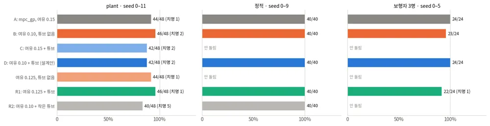
미리 정한 기준. 설계안 D는 plant 기준(AC1: 44/48 이상, 치명이 A 이하)을 넘지 못했다. 정적(AC2)과 보행자(AC3: 24/24, 충돌 0, 보행자 여유 중앙값 0.207 m ≥ A의 0.183 m)는 넘었다. 튜브 자체의 효과(AC4)는 같은 여유의 짝으로 잰다. D − B는 짝지은 최소 여유 중앙값 차이 0.00 cm(95% CI [−0.00, 1.61])이고, R1 − B125는 0.00 cm([−0.00, 0.53])다. 둘 다 0보다 크지 않으므로, 미리 정한 대로 "측정되는 튜브 효과 없음"으로 적고 성공 수의 차이는 여유 몫으로 돌린다. 여유 0.125에서 튜브가 고친 장면 셋(모두 timeout)과 망친 장면 하나는 부호 검정으로 우연과 구별되지 않는다(p ≈ 0.31). 재시도 1(R1)은 plant 46/48, 치명 1로 AC1을 넘었지만 보행자에서 22/24(bumps s4 치명)로 AC3을 넘지 못했다. 재시도 2(R2)는 plant 40/48, 치명 5다. 두 여유 모두에서 튜브 효과가 0이라 세 번째 재시도는 돌리지 않았다.
solver는 건강하다. plant seed 0–5의 24 에피소드씩을 스텝마다 계측했다. QP status ≠ 0인 풀이는 mpc_gpcc 0.02%, mpc_gp 0.00%다.
튜브가 상한(8 cm)에 닿은 스텝(k ≤ 20)은 2.2%로 한도 10% 아래다(AC6). 1번 노드의 한쪽 coverage(벽 쪽 오차가 $t_1$ 안인 비율)는 97.4%다(AC9, 목표 90% 이상).
먼 노드(k ≥ 5)의 coverage는 재지 않았다. 재계획이 몇 스텝 안에 오차를 되돌리므로, 먼 노드의 폭은 보정된 확률이라기보다 속도에 비례한 조심성이다.
M.3.18 GP 분산 튜브는 1번 노드에서 맞지만 여유도 성공도 늘리지 않았다 (TP-0069)3/4


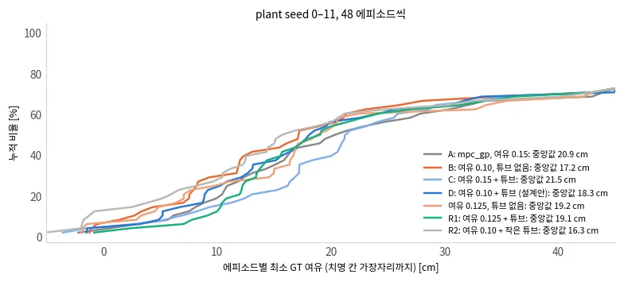
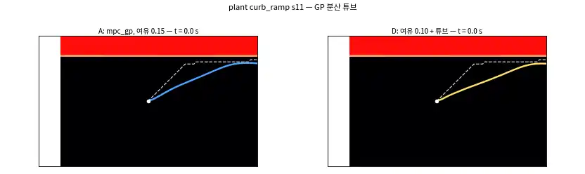

M.3.18 GP 분산 튜브는 1번 노드에서 맞지만 여유도 성공도 늘리지 않았다 (TP-0069)4/4
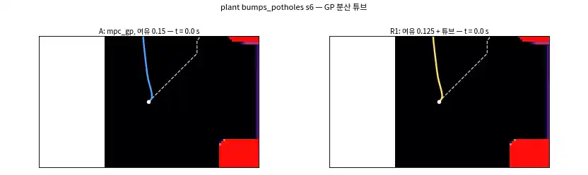

시간. 같은 요청에 네 컨트롤러를 차례로 넣어 쟀다(plant bumps_potholes s0, 145 스텝, 부하 평균 4.5, 순서는 스텝마다 돌림,
python -m scripts.time_controllers --set tp0069 → results/tp0069/control_timing.tsv). 튜브는 중앙값을 바꾸지 않는다.
mpc_gp 10.0 ms, 설계안 D 9.8 ms, R1 9.9 ms이고, 명목 mpc는 7.1 ms다. 95% 분위는 셋 다 20 ms 안팎인데, 이미 있던 SGPR 갱신 스파이크가 그 값을 정한다.
QP가 실패(status ≠ 0)한 풀이는 없었다.
다음. 튜브를 기본값으로 켜지 않는다. 남은 질문은 두 가지다. 먼 노드의 폭을 보정하는 일(재계획 피드백을 넣은 닫힌 루프 튜브)과, 분산의 원천을 GP 하나에서 예측 모델 계층(TP-0124의 동역학·학습 층)으로 넓히는 일이다. 여유를 0.15에서 0.10–0.125로 줄이면 plant에서 두 건 늘지만(44 → 46/48), 보행자·최소 여유와 함께 따져야 해 여기서 기본값을 바꾸지는 않는다. TODO의 TP-0069 제목(σ로 Planner D rollout·선택기의 여유 키우기)과 여기서 한 것(M.3.2의 3단계, MPC 제약 조이기)이 다르다. Planner D 쪽은 TP-0121에서 다룬다.
M.3.19 GP 평균을 MPPI rollout에 넣으면 램프의 치명 실패가 사라지고, GP 경로는 두 배 빨라졌다 (TP-0120)1/4
두 가지를 했다. 첫째, 확률 제약 MPPI의 GP 경로를 결과를 바꾸지 않고 빠르게 했다(A1). control() 한 번이 42.9 ms에서 22.2 ms로 1.93배 빨라졌고,
그 가운데 GP 질의가 21.1 ms에서 3.9 ms가 됐다. 둘째, 잔차 GP의 평균을 rollout에 넣었다(M1, 선택 스택 mppi_ccgpm).
GP 평균을 넣으면 plant curb_ramp의 치명 실패가 모두 사라진다(12/12). M.3.14에서 남은 치명 실패의 가장 유력한 원인으로 짚은 지연 편향을 뒷받침한다.
하지만 bumps_potholes·random_mix에서 멈춤(timeout)이 셋 늘어 성공 수는 A1과 같은 43/48이다. 미리 정한 승격 기준(A1 + 2 이상, 44/48 이상)을 넘지 못해 선택 스택으로 둔다.
빠른 경로(A1)의 네 가지.
- SGPR 질의를 float32 한 번의 행렬 곱으로 합쳤다($M = K_{uu}^{-1} - A^{-1}$를 고유분해해 둔다).
- 모든 샘플의 최소 여유가 $m + z\sigma_{\max}$ 이상이면 분산을 계산하지 않는다(결과가 같은 가지치기).
- 튜브 재귀를 감쇠 행렬 두 개의 곱으로 바꿨다.
- 롤아웃 모델을 상수를 미리 계산한
FastSwerveModel로 바꿨다.
mppi.py는 고치지 않았다. 모델은 MPPIController.model로 주입한다.
같은 rollout 문맥에서 이전 경로(f64)와 나란히 재면(그림자 실행, 3 장면 × 200 스텝), 다음 차이가 나온다.
- σ 차이: 99% 분위 0.006 mm, 최대 0.022 mm
- 판정이 바뀐 샘플: 중앙값 0%, 최대 0.13%(
results/tp0120/shadow.tsv)
| 시간 (plant bumps_potholes s0, 145 스텝, 부하 평균 4.2) | 중앙값 | 90% 분위 | GP 질의 |
|---|---|---|---|
mppi |
13.7 ms | 15.4 ms | — |
mppi_cc |
19.7 ms | 21.7 ms | — |
mppi_ccgp, 이전 경로 (f64 + 명목 rollout) |
42.9 ms | 51.0 ms | 21.1 ms |
mppi_ccgp, 빠른 경로 (A1, 이제 기본) |
22.2 ms | 29.7 ms | 3.9 ms |
mppi_ccgpm (M1) |
24.9 ms | 31.4 ms | 4.1 ms |
M.3.19 GP 평균을 MPPI rollout에 넣으면 램프의 치명 실패가 사라지고, GP 경로는 두 배 빨라졌다 (TP-0120)2/4
미리 정한 시간 기준 가운데 이전 경로 대비 1.8배 이상은 넘었다. 그러나 중앙값 20 ms 미만과 90% 분위 28 ms 이하는 넘지 못했다.
GP를 뺀 mppi_cc가 이미 19.7 ms라(TP-0119 측정 19.3 ms), GP 몫을 줄여도 20 ms 아래로 가지 못한다. 설계 때의 예상(14.5–16.5 ms)은 이 기본 비용을 낮게 잡았다.
GP가 mppi_cc에 더하는 몫은 23.2 ms에서 2.5 ms로 줄었다.

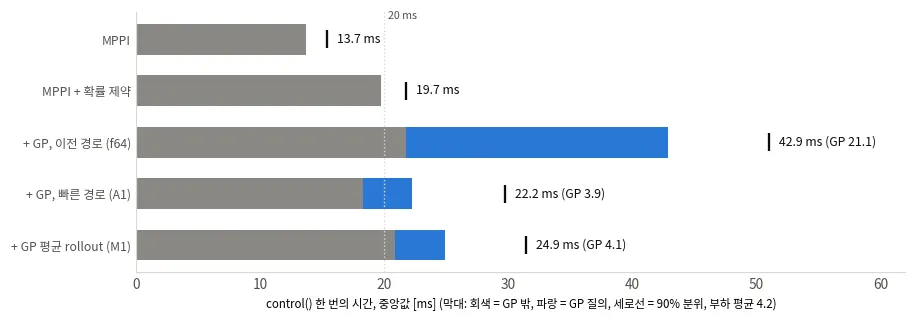
폐루프. 이전 경로를 다시 돌리면 TP-0119의 행을 에피소드마다 그대로 재현한다(plant seed 0–11, 48/48). 빠른 경로(A1)는 seed 0–11에서 43/48로 이전 경로 45/48보다
curb_ramp에서 두 건 적었다. 미리 정한 "시나리오마다 1건 넘게 나쁘지 않을 것"을 넘지 못해 seed 12–23을 더 돌렸다. 이전 경로는 TP-0119 행으로 갈음했다.
seed 12–23에서는 44/48로 같고, 24 seed를 모으면 87/96 대 89/96이다. 엇갈린 짝이 4 대 6이라 우연과 구별되지 않고(부호 검정 p ≈ 0.38), 시나리오마다 차이는 1건 이내다.
그래서 빠른 경로를 mppi_ccgp의 기본값으로 두었다(이전 경로는 gp_impl=f64 fast_rollout=false).
M.3.19 GP 평균을 MPPI rollout에 넣으면 램프의 치명 실패가 사라지고, GP 경로는 두 배 빨라졌다 (TP-0120)3/4
| 성공 | 이전 경로 | 빠른 경로 (A1) | GP 평균 rollout (M1) |
|---|---|---|---|
| plant seed 0–11 | 45/48 | 43/48 | 43/48 (치명 0) |
| plant seed 12–23 | 44/48 (TP-0119) | 44/48 | — |
| 정적 seed 0–9 | — | 40/40 | 40/40 (보정 끔 40/40) |
| 보행자 3명 seed 0–5 | — | 24/24, 충돌 0 | 24/24, 충돌 0 |

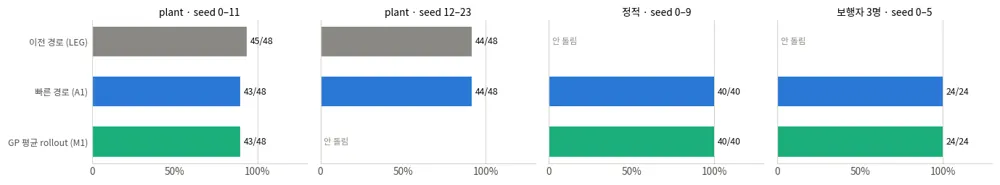
M1이 무엇을 바꿨나. M1의 rollout은 명령을 그대로 실현한다고 보지 않는다. GP 평균을 지금 계획 주변에서 선형화해, 지연된 실제 twist를 예측한다
(control/mppi/residual.py::ResidualSwerveModel, 앞 2 s). 그러면 MPPI가 감속과 회전을 일찍 시작한다. plant의 curb_ramp에서 A1의 치명 실패 셋(s2·s8·s11)은 모두 램프를 다 올라간 위쪽 끝,
인도 쪽 모서리(y ≈ 3.3 m)에서 났다. s8에서는 입구를 지나쳐 고리를 그린 뒤 비스듬히 들어가 그 모서리를 벤다(애니메이션). M1에서는 셋 다 도달한다. 대신 bumps s1·s3, random_mix s6에서 멈춰 60 s에 timeout이다.
M1의 plant 실패 다섯은 모두 timeout이고 치명 실패는 0이다(A1은 치명 셋). 그 멈춤의 원인은 따로 재지 않았다. 미리 정한 메커니즘 지표(실행 계획의 1 s·2 s 위치 오차, 보정 계수 λ의 분포)도 재지 않았다.
M.3.19 GP 평균을 MPPI rollout에 넣으면 램프의 치명 실패가 사라지고, GP 경로는 두 배 빨라졌다 (TP-0120)4/4
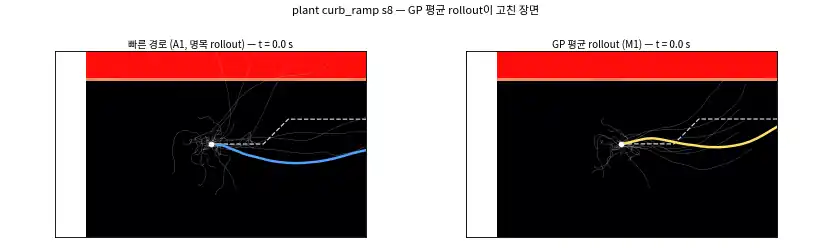

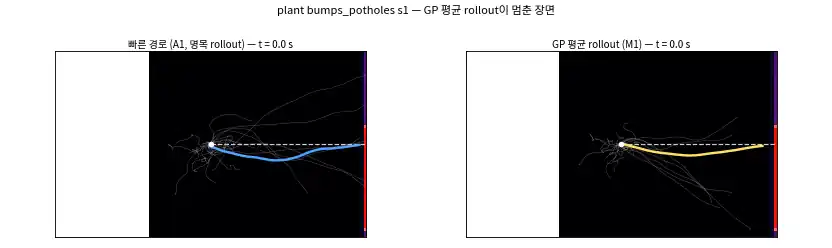

다음. 지연을 아는 rollout이 램프의 치명 실패를 없앤다는 것은 예측 모델 계층(TP-0124)의 첫 근거다. 기구학 rollout에 지연만 더한 동역학 층이 같은 이득을 내면서 멈춤을 늘리지 않는지 보는 것이 그 다음이다.
M.3.20 멈춘 장면에서 MPOT식 최적화기는 같은 예산의 MPPI를 넘지 못했다 — MPOT 변형은 만들지 않는다 (TP-0130)1/8
미리 정한 기준 G0가 실패해 MPOT 변형은 만들지 않는다. MPOT식 Sinkhorn Step(O2)이 '센' 멈춤 장면은 10개 중 둘이다. 그 두 장면에서는 같은 예산의 MPPI(B)도 셌다. 더 센 최적화기가 찾은 계획은 대부분 목적함수를 3% 안쪽으로만 낮추고, 4 s에 0.4 m를 넘게 나아가지 못했다. 멈춤의 원인은 가설로 좁혔다. curb_ramp에서는 접힌 참조가 거짓 진행을 만든다. bumps·random_mix의 멈춤은 GP 분산 튜브를 쓰는 두 스택에서만 난다. 치명 실패 직전의 계획은 Controller의 모델에서는 안전하지만, plant에서 개루프로 돌리면 대부분 치명적이다.
무엇을 쟀나. MPOT(최적 수송으로 샘플을 옮기는 최적화기, Controller 문서 E.11)를 넣기 전에, MPPI 계열이 멈춘 장면에 더 센 최적화기가 쓸 여지가 있는지 쟀다.
현재 기본 경로에서 MPPI 계열이 timeout한 plant 장면 10개를 골랐다(mppi_ccgpm 다섯, mppi_ccgp 넷, mppi 하나).
대조로 GP 평균이 없는 스택의 치명 실패 8개를 더했다. 장면마다 벤치마크와 똑같이 두 번 돌린다. 1회차로 구간을 찾고 2회차에서 탐침을 꽂는다.
2회차는 18 장면 모두 1회차와 같은 결과를 냈다.
- 멈춘 구간: 지난 3 s의 순변위가 0.3 m 미만이고 목표까지 1 m 넘게 남은 스텝. 1 s마다 탐침 하나를 두고, 장면당 20개까지 고르게 뽑는다(모두 184개).
- 치명 구간: 치명 실패 전 3 s. 0.5 s마다 탐침 하나를 둔다(56개).
- 탐침에서는 Controller를 그 스텝의 호출 직전 상태로 복사한다. 오라클 다섯이 Controller가 방금 푼 것과 같은 목적함수를 다시 푼다. 같은 CostTerm, rollout 모델, 확률 제약, warm start를 쓴다.
| 오라클 | 무엇 | rollout | 탐침당 시간 (중앙값) |
|---|---|---|---|
| P | 생산 MPPI를 다른 seed로 다시 | 768 × 1 | 26 ms |
| O3 | MPPI 두 번 반복 | 384 × 2 | 31 ms |
| B | O2와 같은 예산의 MPPI | 1,961 × 12 = 23,532 | 658 ms |
| O1 | 큰 MPPI (생산의 107배) | 16,384 × 5 = 81,920 | 2.57 s |
| O2 | MPOT식 Sinkhorn Step, 명령 knot 공간 (E.11) | 60 step, 23,528 | 1.40 s |
시간은 24코어에 2스레드 프로세스 18개를 함께 돌린 값이다. 같은 rollout 수에서 O2는 B보다 2.1배 오래 걸린다. O2의 한 스텝은 rollout 384개와 8개를 차례로 돌리고 Sinkhorn을 50번 반복한다. 그 스텝을 60번 차례로 밟는다.
판정 규칙(실행 전에 정함). 오라클이 찾은 계획이 셋을 모두 만족하면 그 탐침에서 '탈출'이다.
M.3.20 멈춘 장면에서 MPOT식 최적화기는 같은 예산의 MPPI를 넘지 못했다 — MPOT 변형은 만들지 않는다 (TP-0130)2/8
- Controller의 모델에서 실행 가능하다. 치명 셀, 자세 한계, 확률 제약 위반이 없어야 한다.
- 참조를 따라 4 s 안에 0.3 m 이상 나아간다.
- 실행한 계획보다 목적함수가 낮다.
실행한 계획이 이미 0.3 m 이상 나아가는 탐침(plan_go)은 최적화기에 묻는 질문이 아니라서 따로 센다. 탈출은 나머지 탐침(plan_stop)에서만 센다. 오라클이 한 장면의 plan_stop 탐침(3개 이상) 가운데 절반 이상에서 탈출하면 그 장면에서 '센다'. G0는 O2가 3 장면 이상에서 세고, 그 장면마다 B는 세지 않을 때만 통과다. 해석도 미리 적었다. O2가 센 곳마다 B나 O1도 세면 표본 수의 문제이고, 값싼 MPPI 변경이 먼저다. P가 세면 표본 운이다. 실행 전에 두 가지를 고쳤고, 둘 다 도구의 설명에 적었다. 멈춘 구간의 정의를 속도에서 순변위로 바꿨다(첫 장면의 1회차 자료만 보고). plan_go 분류는 탐침 두 개의 시험 실행 뒤, 본 실행 전에 넣었다.
결과 1: G0는 실패했다. O2는 두 장면(ccgp bumps s6·s11)에서 셌고, B는 그 둘과 ccgpm bumps s6에서 셌다. G0의 두 조건이 모두 깨졌다. plan_go 분류를 빼고 모든 탐침으로 세어도 실패다. O2가 7 장면, B가 9 장면에서 세고, B의 장면이 O2의 장면을 모두 덮는다.
| '센' 장면 수 (멈춘 장면 10개 중) | P | O3 | B | O1 | O2 |
|---|---|---|---|---|---|
| 탈출 전진 0.3 m 이상 (사전 등록) | 1 | 1 | 3 | 4 | 2 |
| 탈출 전진 1.0 m 이상 (사후, 같은 plan_stop 탐침) | 0 | 0 | 0 | 1 | 0 |
미리 적은 해석대로라면 표본 수의 문제다. P도 ccgp bumps s6에서 셌으므로(8/14), 그 장면의 멈춤은 일부 표본 운이기도 하다. 다만 탈출은 대부분 작다. 탐침마다 가장 나은 오라클을 골라도 목적함수 감소의 장면별 중앙값은 1.2–3.2%다. 그 계획은 대부분 4 s에 0.2–0.4 m만 나아간다. 탈출 전진을 0.6 m나 1.0 m로 올리면 O1만 한 장면(ccgpm bumps s3)에서 센다.
예외가 하나 있다. ccgpm bumps s3·s11의 plan_stop 탐침 33개 가운데 14개에는 1 m 넘게 나아가면서 목적함수도 낮은 계획이 있었다. 감소의 중앙값은 5.2%(1.8–12.5%)다. O1이 9개, O2가 8개, B가 5개에서 찾았고 P와 O3는 하나도 찾지 못했다. 생산 예산(768)에서의 탐색 실패다. MPOT가 B를 앞선 유일한 신호도 여기 있다. ccgpm bumps s11에서 O2만 탈출한 탐침이 5개, B만 탈출한 탐침이 0개다(부호 검정 p ≈ 0.06). 탐침이 1 s 간격으로 이어져 서로 독립이 아니므로, 이 p는 낙관적이다.
M.3.20 멈춘 장면에서 MPOT식 최적화기는 같은 예산의 MPPI를 넘지 못했다 — MPOT 변형은 만들지 않는다 (TP-0130)3/8

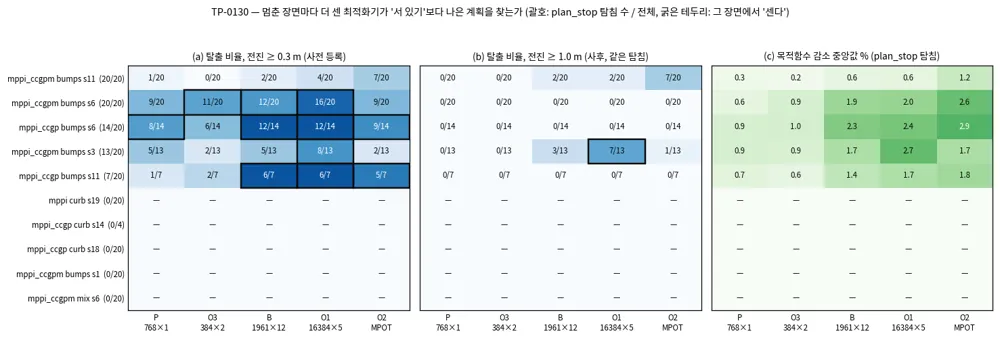
결과 2: 멈춤 원인의 가설. 멈춘 구간의 모든 스텝에서 계획의 속도 윤곽을 기록했다. 탐침마다 실행한 계획을 plant에서 4 s 개루프로 돌려도 봤다.
둘 다 실행 뒤에 더한 기록이다(results/tp0130/stall_profile.tsv). 항별 비용 기록과 반사실 재채점은 하지 않았으므로, 아래 표의 오른쪽 열은 원인이 아니라 가설이다.
M.3.20 멈춘 장면에서 MPOT식 최적화기는 같은 예산의 MPPI를 넘지 못했다 — MPOT 변형은 만들지 않는다 (TP-0130)4/8
| 장면 | 관찰 | 가설 |
|---|---|---|
curb_ramp s18 (mppi_ccgp), s19 (mppi) |
탐침 20개 중 14·15개에서 참조 위 전진이 계획 길이보다 길다(그 탐침의 중앙값 7.9·7.9 m, 계획 길이 1.7·2.6 m) | 진행 항이 끝점을 접힌 참조의 되돌아오는 구간에 투영한다 |
bumps s1 (mppi_ccgpm) |
계획은 4 s에 2.2 m 가고, 같은 계획을 plant에서 개루프로 돌려도 1.1 m 간다. 실행한 첫 명령은 0.06 m/s다. 멈춘 스텝의 68%에서 계획이 1.9–2.2 s에 처음 0.5 m/s에 닿는다 | M1이 GP 평균을 앞 2 s에만 쓰는 경계 |
| bumps 다섯 (ccgp s6·s11, ccgpm s3·s6·s11) | 계획 자체가 4 s에 0.17–0.37 m 간다. 계획 속도는 3.3–3.5 s에서 뛴다 | GP 분산 튜브가 움직임을 비싸게 하고, 진행 항이 지평 끝만 보므로 움직임이 끝으로 밀린다 |
random_mix s6 (mppi_ccgpm) |
plan_go로 분류되지만 계획이 4 s에 0.6 m(plant 개루프 0.43 m)만 가는 느린 계획이다 | 위와 같다 |
curb_ramp s14(mppi_ccgp)는 멈춘 구간이 2.8 s뿐이라 어느 쪽으로도 나누지 않았다.
bumps·random_mix의 멈춤은 GP 분산 튜브를 쓰는 스택에서만 난다. 같은 seed에서 mppi와 mppi_cc는 timeout이 없다(각 48 에피소드).
mppi_ccgp는 2/48, mppi_ccgpm은 5/24다(results/p2-controller-followups.tsv의 TP-0119·0120 행). 진행 항은 모든 스택에 같다.
그러니 지평 끝에서만 세는 진행 항은 멈춤을 허용할 뿐이다. 멈춤과 도달을 가르는 차이는 GP 분산 튜브와 M1의 평균 창 쪽에 있다.
GP 분산 튜브는 지평 전체에 걸리고, 속도가 빠를수록 넓어진다. 진행 항은 지평 끝 한 점만 보므로, 움직임을 지평 끝으로 미뤄도 손해가 없다.
선 계획의 속도가 3.3–3.5 s에서야 뛰는 것은 이 해석과 맞는다. 그러나 항별 비용으로 확인하지는 못했다.
M1의 rollout은 GP 평균을 앞 2 s에만 쓴다(ResidualSwerveModel, mean_horizon_s 2.0). bumps s1의 계획은 바로 그 경계에서 빨라진다.
지연을 아는 앞 2 s에는 거의 서 있고, 지연을 모르는 뒤 2 s에 움직이는 계획이다. 이 경계가 미루기를 만드는지는 확인하지 못했다.
M.3.19가 남긴 질문(M1이 늘린 멈춤 셋)에는 증상까지만 답했다. bumps s1은 2 s 경계에서 미루는 계획이고, bumps s3와 random_mix s6은 느리거나 서는 계획이다.
접힌 참조. curb_ramp에서 Guidance 경로는 로봇 뒤쪽 램프로 돌아가 올라간 다음, 연석 위를 따라 되돌아온다.
Controller가 보는 앞 8 m 참조도 그래서 접혀 있다. 되돌아오는 구간이 로봇 바로 위, 치명 셀인 연석 너머 2–3 m에 있다.
ReferenceCost의 진행 항은 rollout의 끝점을 참조 전체에서 가장 가까운 점에 투영한다. 그래서 연석 바로 아래에서 끝나는 계획이 되돌아오는 구간에 투영되어 7–8 m 나아간 것으로 계산된다.
계획은 램프로 가는 참 경로와 연석 아래의 거짓 지름길 사이를 오간다. 두 로봇은 약 30 s 맴돈 뒤(s19 23–53 s, s18 22–49 s) 램프로 돌아간다.
59 s에 램프 위로 올라섰지만, 목표 5.1 m 앞에서 60 s가 지나 timeout이다(애니메이션).
이 두 장면의 plan_go 판정은 대부분 이 투영이 만든 것이다. 더 센 최적화기는 같은 거짓 최소점을 더 잘 찾을 뿐이다.
접힌 참조가 거짓 진행을 만든다는 것은 기하로 확인했다. 그것이 timeout의 원인인지는 투영을 고쳐 봐야 안다.
curb_ramp의 timeout은 경로에 민감하다. 같은 mppi_ccgp도 이전 GP 경로(f64)에서는 s14·s18이 timeout이 아니었다.
M.3.20 멈춘 장면에서 MPOT식 최적화기는 같은 예산의 MPPI를 넘지 못했다 — MPOT 변형은 만들지 않는다 (TP-0130)5/8

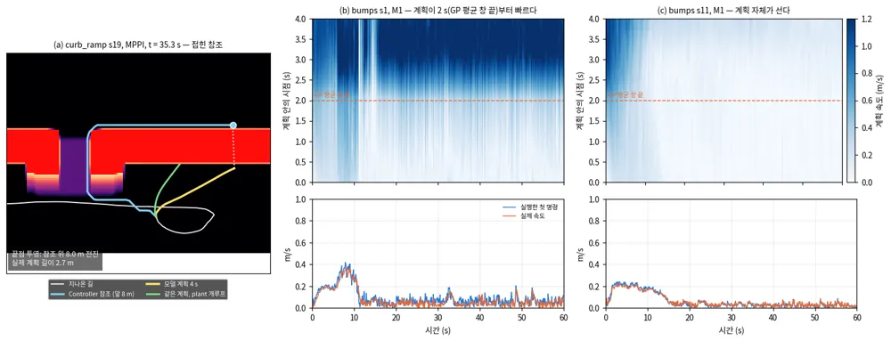
M.3.20 멈춘 장면에서 MPOT식 최적화기는 같은 예산의 MPPI를 넘지 못했다 — MPOT 변형은 만들지 않는다 (TP-0130)6/8
애니메이션 — plant curb_ramp s19(mppi, 왼쪽)와 s18(mppi_ccgp, 오른쪽), 18 s부터. 점선이 Guidance 경로, 색 선이 4 s 예측, 회색이 MPPI 샘플 일부다. 예측이 램프 쪽(왼쪽 아래로 돌아감)과 연석 쪽(위)을 오간다. 두 로봇 모두 약 30 s 맴돈 뒤 램프로 돌아가 59 s에 올라서지만, 60 s에 timeout이다.

결과 3: 치명 실패 직전의 계획은 모델에서는 안전하고 plant에서는 대부분 치명적이다. 사전 예측과 맞는다. 치명 구간 8 장면 × 7 탐침에서, 오라클이 찾은 계획 가운데 모델 안에서 실행 가능한 것을 plant에서 4 s 개루프로 돌렸다.
| 오라클 | P | O3 | B | O1 | O2 |
|---|---|---|---|---|---|
| plant 개루프에서 실패 | 45/54 | 46/54 | 48/54 | 49/54 | 49/54 |
더 센 최적화기의 계획이 덜 실패하지 않았다. 사후 참조로 같은 시점에 두 가지를 더 돌렸다. Controller가 실행한 계획은 49/56이 실패했다. 정지 명령은 16/56만 실패했고, 그중 14건이 실패 0.5 s 전 이후다. 멈춘 구간의 실행 계획은 같은 재생에서 2/184만 실패했다. 재생 자체가 늘 치명적인 것은 아니다. 예측은 8 장면 가운데 여섯에서 맞았다. mppi bumps s11에서는 P와 O3 계획의 절반이 살아남았다. mppi random_mix s23에서는 모든 계획이 실패 1.5 s 전까지 살아남고, 1.0 s 전부터 모두 실패한다. 그 장면의 실패는 마지막 1 s 안에 정해졌다. 이 재생은 동역학(지연·슬립)과 지도(belief 대신 실제 지형)를 함께 바꾸고, 재계획 없이 돈다. 그래서 둘 가운데 무엇이 계획을 치명적으로 만드는지는 가르지 못한다.
M.3.20 멈춘 장면에서 MPOT식 최적화기는 같은 예산의 MPPI를 넘지 못했다 — MPOT 변형은 만들지 않는다 (TP-0130)7/8

판단.
M.3.20 멈춘 장면에서 MPOT식 최적화기는 같은 예산의 MPPI를 넘지 못했다 — MPOT 변형은 만들지 않는다 (TP-0130)8/8
- MPOT 변형은 만들지 않는다. 근거는 G0의 실패다. 조사는 Controller 문서 E.11에 둔다.
- 미리 적은 해석은 "표본 수의 문제이니 값싼 MPPI 변경이 먼저"다. 이 갈래는 따르지 않고 원인 분리를 먼저 한다. 1 m 넘는 탈출이 생산 예산의 30–107배(B·O2·O1)에서만 나왔기 때문이다. 이 이탈은 실행 뒤에 정했다.
- 다시 열 조건은 하나다. TP-0131·0132 뒤에도 plan_stop 멈춤이 남고, 거기서 O2가 B보다 자주 탈출하면 다시 연다. ccgpm bumps s11이 그 방향의 약한 신호를 이미 보였다(5:0).
- 접힌 참조는 TP-0131로 넘긴다. 진행 항의 끝점 투영을 rollout이 닿을 수 있는 호 구간으로 제한한다.
CostTerm만 고치고mppi.py는 건드리지 않는다. - bumps·random_mix의 멈춤은 TP-0132로 넘긴다. 탐침에서 항별 비용을 기록하고, GP 분산 튜브와 M1의 평균 창과 진행 항을 하나씩 바꿔 다시 채점해 원인을 가른다.
- 치명 실패 쪽은 예측 모델 계층(TP-0124)의 순서를 그대로 둔다. 동역학과 지도를 나눠 재생하는 대조가 그 첫 확인이다.
- 탐침 도구는 다음 비용·모델 변경의 확인에 그대로 쓴다.
python -m scripts.eval_stall_headroom run --scene plant:mppi_ccgpm:bumps_potholes:1 # 18 장면, 장면당 1.4–5 분(2스레드)
python -m scripts.eval_stall_headroom replay # 사후 참조: 실행한 계획·정지 명령의 plant 재생, 계획 속도 윤곽
python -m scripts.eval_stall_headroom summary # → results/tp0130/headroom.tsv, headroom_probes.tsv, stall_profile.tsv
python scripts/make_doc_figures.py --followup TP-0130 TP-0130-episodes
M.3.21 접힌 참조에서 진행 항의 끝점 투영을 닿을 수 있는 호로 제한한다 (TP-0131)1/4
한 줄로. MPPI 진행 항이 rollout 끝점을 그 rollout이 실제로 달린 거리 + 0.5 m 안의 호에만 투영하게 했다(ReferenceCost(reach_margin_m=0.5), 선택).
접힌 경로에서 생기던 맴돌기가 풀린다. 운동학 curb_ramp 레벨 3에서는 Guidance 폴백 스택의 도달이 30/30이 되고, 짝지어 9.9 s 빨라진다(23 : 6, p = 0.002).
plant curb_ramp 72 에피소드의 도달 수는 잡음 안이다(57 대 52, 짝 비교 p = 0.38). 그래서 기본값은 끈 채 둔다.

M.3.21 접힌 참조에서 진행 항의 끝점 투영을 닿을 수 있는 호로 제한한다 (TP-0131)2/4
그림 — TP-0131 (Fig. 1): 왼쪽은 plant curb_ramp seed 19(guidance+mppi)다. 끄면(빨강) 경사로 왼쪽 아래에서 맴돌다 60 s를 넘기고, 켜면(초록) 40.3 s에 도달한다. 오른쪽은 스택별 도달 비율과 도달 시간 평균이다. 출처: scripts/make_evidence_figures.py --only tp0131
무엇이 문제였나. Guidance 경로가 경사로로 돌아간 뒤 보도에서 로봇 바로 위로 되돌아오면 경로가 접힌다. 연석 아래에서 끝나는 rollout의 가장 가까운 참조점은 되돌아오는 구간에 있다. 진행 항은 그 rollout이 7–8 m 나아갔다고 셈한다(TP-0130, M.3.20). 그래서 계획이 경사로 쪽과 연석 쪽을 오가며 맴돈다. Guidance 폴백(TP-0078) 뒤의 Planner D도 같은 자리에서 시간을 썼다.
무엇을 바꿨나.
- 끝점 투영을 호 $s \le s_0 + L + m$으로 제한한다. $s_0$은 로봇 자신의 투영, $L$은 그 rollout이 달린 거리, $m$은 여유 0.5 m다. 투영점까지의 거리도 그 점까지로 잰다.
- 편차 항(경로까지 거리의 평균)은 참조 전체를 그대로 쓴다. 처음에는 스텝마다 같은 창을 걸었는데, 정적 bumps_potholes s6이 시간 초과로, plant curb_ramp s18이 치명으로 바뀌었다. 끝점만 제한하면 둘 다 도달한다.
reach_margin_m=None(기본)이면 예전 항과 비트 단위로 같다.--ctrl-cfg reach_margin_m=0.5로 켠다.--ctrl-cfg는 이제 CostTerm의 필드에도 닿는다.
결과.
| 장면 (guidance+mppi) | 끄기 | 스텝마다 제한 | 끝점만 제한 |
|---|---|---|---|
| plant curb_ramp s19 (TP-0130의 멈춤) | 60 s 시간 초과 | 41.0 s | 40.4 s |
| plant curb_ramp s18 | 46.6 s | 치명 | 42.1 s |
| plant curb_ramp s14 | 49.0 s | 41.4 s | 43.6 s |
| 정적 bumps_potholes s6 | 24.9 s | 60 s 시간 초과 | 27.1 s |
| 운동학 curb_ramp 레벨 3 (seed 0–9 × 오프셋 3) | 끄기 | 켜기 | 짝지은 도달 시간 차 (켜기가 빠름 : 느림) |
|---|---|---|---|
| guidance+mppi | 29/30, 28.0 s | 30/30, 26.0 s | −2.0 s (15 : 14, p = 1) |
| planner_df+mppi (DAgger) | 29/30, 36.3 s | 30/30, 26.3 s | −9.9 s (23 : 6, p = 0.002) |
| planner_df+mppi (RL) | 30/30, 28.9 s | 30/30, 25.6 s | −3.2 s (20 : 10, p = 0.10) |
M.3.21 접힌 참조에서 진행 항의 끝점 투영을 닿을 수 있는 호로 제한한다 (TP-0131)3/4
| 지키는 기준 (guidance+mppi) | 끄기 | 켜기 |
|---|---|---|
| 정적 4 지형 × seed 0–9 | 40/40 | 40/40 |
| 보행자 3명 × seed 0–5 | 24/24, 충돌 0 | 24/24, 충돌 0 |
| plant bumps·slope·random × seed 0–11 | 35/36 | 34/36 |
plant curb_ramp × seed 0–23 × 오프셋 3, mppi |
57/72 (치명 14, 시간 초과 1), 44.3 s | 52/72 (치명 17, 시간 초과 3), 42.7 s |
plant curb_ramp × seed 0–23 × 오프셋 3, mppi_cc |
59/72 (치명 12, 시간 초과 1), 43.3 s | 56/72 (치명 15, 시간 초과 1), 42.1 s |
- 운동학에서는 폴백 스택의 맴돌기가 사라진다. Planner D가 경사로를 지나친 뒤 Guidance 경로를 넘겨받는 장면이 가장 접힌 경로이기 때문이다.
- plant의 도달 수 차이는 잡음 안이다. 같은 설정을 난수만 바꿔 다시 돌리면 24 에피소드 가운데 7–10개가 뒤집힌다. 짝 비교는 13 : 8(p = 0.38)과 13 : 10(p = 0.68)이다.
- plant의 시간 초과는 성격이 바뀐다. 끄면 하나(s19)가 접힌 경로의 맴돌기다. 켜면 셋 모두 목표 0.30–0.37 m 앞에서 10 s 넘게 머문다(도달 판정 0.3 m). 목표 근처에서 마스크가 끝점 투영을 바꾼 rollout은 0%다(s14 오프셋 2000을 다시 돌려 확인). 그 앞의 다른 길이 plant의 목표 접근 약점에 닿은 것으로 본다(TP-0140).
판단. 기본값은 끈 채 둔다. Guidance 폴백 스택(planner_df)과 함께 운동학 평가에서 켜기를 권한다(--ctrl-cfg reach_margin_m=0.5).
mppi_ccgp의 TP-0130 장면(s14·s18)은 잔차 GP 체크포인트가 이 PC에 없어 돌리지 못했다. GP가 있는 PC에서 같은 명령으로 확인한다.
mppi_ccgp 확인(2026-10-03, 사용자 결정 6 뒤). 이 PC에 casadi를 깔고 잔차 GP를 다시 맞춰(residual_sgp_wide_refit-2026-10-03.pt, 릴리스 ckpt-2026-10-03) 남은 스택을 쟀다.
plant curb_ramp × seed 0–23 × 난수 오프셋 3, 72 에피소드다.
guidance+mppi_ccgp |
끄기 | 켜기 |
|---|---|---|
| 도달 | 56/72 | 65/72 (짝 5 : 14, p = 0.064) |
| 치명 · 시간 초과 | 13 · 3 | 7 · 0 |
| 도달 시간 평균 | 44.3 s | 42.2 s |
| TP-0130 장면 s14 · s18 (오프셋 0) | 60 s 시간 초과 · 60 s 시간 초과 | 40.4 s · 51.7 s |
M.3.21 접힌 참조에서 진행 항의 끝점 투영을 닿을 수 있는 호로 제한한다 (TP-0131)4/4
- 다시 맞춘 GP에서도 TP-0130의 두 멈춤 장면이 그대로 재현되고, 끝점 제한을 켜면 둘 다 도달한다. TP-0131의 원래 판정("두 장면 해소")을 이 스택에서 채운다.
mppi_ccgp에서는 치명이 줄어(13 → 7) 안전 원칙(docs/prd.md7절)에 걸리지 않는다.mppi·mppi_cc에서는 치명이 각각 3건 늘었으므로 그 둘의 기본값은 끈 채 둔다.- 기본값은 아직 바꾸지 않는다. 이 GP는 다른 PC의 원본(
residual_sgp_wide.pt, TP-0068–0130 결과에 쓴 것)과 같지 않을 수 있다(랩탑의 이 GP는 2026-10-06에 릴리스ckpt-2026-10-06에 올렸다. 처음 파일이 지워진 뒤 같은 스크립트로 결정적으로 다시 맞춘 판이다). 원본 GP로 같은 72 에피소드를 다시 재고mppi_ccgp의 기본값을 정한다(TP-0144).
python scripts/run_benchmark.py --plant --scenarios curb_ramp --seeds $(seq -s ' ' 0 23) --stacks guidance+mppi guidance+mppi_cc \
--ctrl-cfg reach_margin_m=0.5 --rng-offset 0 --out results/tp0131/plant_cr_on # 끄기는 reach_margin_m=none
python scripts/run_benchmark.py --stacks planner_df+mppi --ckpt-d checkpoints/planner_d_L0123_dagger.pt --scenarios curb_ramp --levels 3 \
--seeds 0 1 2 3 4 5 6 7 8 9 --rng-offset 0 --ctrl-cfg reach_margin_m=0.5 --out results/tp0131/cr3_df_on_o0
M.3.22 MPPI rollout에 스워브 plant의 지연을 넣는다 — 레벨 3 plant 치명 55 → 4 (TP-0150)1/3
한 줄로. MPPI rollout이 스워브 plant의 액추에이터 지연을 알게 하면, 권장 L1 + plant 레벨 3의 치명이 55 → 4로 줄고 도달은 221 → 239/360으로 는다(mppi_plant_lag).
최적화기는 그대로 두고 rollout 모델만 바꿨다. 미끄럼까지 예측하면 치명은 같이 줄지만 진행이 막힌다(도달 189). 레벨 3 경사로(폭 1.1 m)는 plant에서 여전히 거의 지나가지 못한다(1/90).

그림 — TP-0150 (Fig. 1): 권장 L1 + 스워브 plant 레벨 3(4 지형 × seed 0–9 × 오프셋 3)의 도달 수다. 회색은 mppi, 주황은 지연 + 미끄럼 예측, 파랑은 지연만 예측한 rollout이다. 왼쪽은 스택별, 오른쪽은 지형별이다.
M.3.22 MPPI rollout에 스워브 plant의 지연을 넣는다 — 레벨 3 plant 치명 55 → 4 (TP-0150)2/3
- 무엇이 문제였나(TP-0149, 인식 문서 A.13.19). MPPI rollout은 명령이 곧 속도라고 본다(가속 1.0 m/s²). 시뮬은 명령의 가속 한계를 실현 속도 기준으로 걸고, plant가 그 차이를 1차 지연(0.2 s, 한 스텝에 3분의 1)으로 따라간다. 그래서 실제 가속은 약 0.33 m/s²다. plant는 경사·거칠기에 비례해 이동 속도도 깎는다(최대 35 %, 회전은 그대로). 권장 L1 레벨 3이 335 → 221/360(치명 6 → 55)이 된 이유다.
- 무엇을 바꿨나.
LagSlipSwerveModel(control/mppi/plant_aware.py)이 rollout의 자세를 plant가 실현할 속도로 적분한다. - MPPI가 평균하고 보내는
applied는 그대로 '시뮬처럼 가속 한계를 건 명령'이다. 최적화기(mppi.py)는 그대로이고,MPPIController.model만 바꿔 끼운다. - 지연: 실현 속도가 명령을 한 스텝에 $\Delta t / (\tau + \Delta t)$만큼 따라간다($\tau$ = 0.2 s). 평지에서 30 스텝 위치가 plant와 5 cm 안에서 맞는다(테스트로 고정).
- 미끄럼(선택): belief 지도의 경사·거칠기로 plant와 같은 식의 이동 감속을 건다.
PlantAwareMPPIController가 매 제어 전에 belief 지도를 모델에 넘긴다. -
두 Controller를 벤치마크에 넣었다:
mppi_plant(지연 + 미끄럼)와mppi_plant_lag(지연만). -
벤치마크(권장 L1 +
--plant, seed 0–9 × 오프셋 3, 같은 (seed, 오프셋)끼리 짝 비교). 결과는results/tp0149/l1_plant(mppi),results/tp0150/plant_aware(지연 + 미끄럼),results/tp0150/plant_lag(지연만)다.
| 레벨 3 (스택마다 120) | mppi | 지연 + 미끄럼 | 지연만 (mppi_plant_lag) |
|---|---|---|---|
| guidance | 65 (치명 20, 시간 초과 35) | 47 (0, 73) | 79 (1, 40) |
| planner_df (배포) | 77 (22, 21) | 73 (1, 46) | 81 (3, 36) |
| planner_d (단독) | 79 (13, 28) | 69 (3, 48) | 79 (0, 41) |
| 레벨 0 (40씩, guidance · planner_df · planner_d) | 39 · 36 · 37 | 26 · 28 · 28 | 39 · 40 · 37 |
- 지연만 대
mppi의 짝 비교는 레벨 3에서 41 : 23(p = 0.03), 레벨 0에서 7 : 3이다. - 지형별 레벨 3(세 스택 합 90)은 bumps_potholes 60 → 78, random_mix 62 → 70, slope_crossfall 84 → 90, curb_ramp 15 → 1이다.
- 안전 원칙: 스택·레벨별 치명 수가 는 곳이 없다(레벨 3 guidance 20 → 1, planner_d 13 → 0, planner_df 22 → 3, 레벨 0은 4 → 0). 새로 생긴 치명은 레벨 3에서 3건이다(guidance 1, planner_df 2, 모두 curb_ramp·bumps_potholes).
M.3.22 MPPI rollout에 스워브 plant의 지연을 넣는다 — 레벨 3 plant 치명 55 → 4 (TP-0150)3/3
- 미끄럼 예측이 진행을 막은 이유. guidance + 지연 + 미끄럼은 bumps_potholes 레벨 3에서 30개 중 28개가 첫 과속방지턱 0.8 m 앞에서 멈췄다.
멈춘 자리에서 보면, 추종 기준 명령의 rollout이 지연 + 미끄럼 모델에서는 치명 칸에 닿는다(비용 1,045). 기존 모델에서는 닿지 않는다(25).
미끄럼은 이동만 깎고 회전은 그대로라 rollout이 더 휘고, 포트홀에 붙은 Guidance 경로에서는 앞으로 가는 표본이 모두 치명이 된다.
그래서 멈춤만 남는다. 미끄럼 예측은 선택 항목(
mppi_plant)으로만 남긴다. - 경사로 레벨 3. plant에서는 세 Controller 모두 거의 지나가지 못한다(
mppi15/90, 지연만 1/90). 중심이 지날 띠가 0.2 m인 경사로를 굼뜬 동역학으로 지나는 것은 설계 한계로 본다.mppi가 지나간 15개 가운데 일부는 치명과 맞바꾼 통과다(같은 지형에서 치명 15). - 판정. TP-0150의 기준(plant 레벨 3 치명 55 → 절반 이하, plant 없는 권장 L1 벤치마크 유지)을 넘었다. 기본 Controller(
mppi)는 바뀌지 않으므로 plant 없는 벤치마크는 그대로다. 시도는 두 번이었다(지연 + 미끄럼, 지연만). - 쓰는 법. plant가 있는 조건(실물에 가까운 조건)에서는
--stacks <planner>+mppi_plant_lag --plant로 돌린다. 배포 스택을planner_df+mppi_plant_lag로 볼지는 사용자 결정으로 남긴다(STATE).
M.3.23 plant에서 레벨 3 경사로를 지나는 MPPI를 찾지 못했다 — 다섯 시도 뒤 멈추고 plant 모델을 묻는다 (TP-0151)1/2
한 줄로. 스워브 plant에서 레벨 3 경사로(폭 1.1 m, 중심 통로 0.2 m)는 mppi_plant_lag로 1/90만 지나간다. 다섯 가지를 시도했지만 하나도 열지 못했다.
경사로 자체는 오를 수 있다(가운데 미끄럼 0.07, 정상 속도 0.44 m/s). 로봇은 경사로 발치까지 오지만 그 앞에서 제자리 회전만 한다.
그러다 시뮬 plant에 의도하지 않은 것으로 보이는 겹침을 찾았다. 명령의 가속 한계를 실현 속도 기준으로 걸어 지연과 겹친다. 그래서 plant 모델을 사용자에게 묻고 멈춘다.
- 멈춘 모습(L0 인식 + plant, seed 0). 로봇은 경사로 입구를 한 번 지나쳤다가 돌아온다. 35초부터 60초까지 경사로 발치 0.5 m 앞에서 0.2 rad/s로 돈다. 그 순간 표본의 68 %는 치명이 아니고 진행 비용도 멈춤보다 낮다. 하지만 경사로 위로 들어가는 표본은 모두 치명이다. 중심 통로가 ±0.1 m라 정밀한 정렬이 필요한데, 지연이 있는 표본으로는 거기에 들어가지 못한다.
- 시도(L0 인식 + plant, curb_ramp 레벨 3 seed 0–3,
results/tp0151). 모두 시간 초과다.
| 시도 | 결과 |
|---|---|
여유를 두는 Guidance 경로(guidance_c) |
0/4 |
rollout에 모듈 조향 한계(±56.2°)를 넣음(mppi_plant_steer) |
0/8 |
| 온도 0.1 · 반복 3 · 표본 1,536 | 각각 0/4 |
| 지평 6 s · 8 s | 각각 0/4 |
지연을 아는 추종기로 사전 표본을 만듦(mppi_plant_prior) |
0/8 (치명 1) |
- 조향 한계: plant는 옆걸음 명령을 그대로 못 한다. 옆으로 0.5 m/s를 명령하면 모듈이 56.2°에서 멈춰 앞으로 0.23, 옆으로 0.35 m/s의 대각선으로 간다.
steer_project가 모듈마다 이 투영을 하고 최소제곱으로 차체 속도를 되돌린다. 정상 상태에서 plant와 0.02 m/s 안으로 맞는다(테스트로 고정). 그래도 경사로는 열리지 않았다. - 지연을 아는 추종기(
LagAwareTracker): pure pursuit를 지연 모델의 예측 상태로 굴려 사전 명령열을 만든다. 그 명령열을 지연 모델로 다시 굴리면 같은 궤적이 나온다(테스트로 고정). - plant 모델에서 찾은 겹침. 시뮬은
step에서 명령의 가속 한계를 직전 실현 속도 기준으로 건다. 그 뒤 plant가 1차 지연으로 따라간다. plant가 없으면 실현 속도가 곧 직전 명령이라 문제가 없다. plant가 있으면 두 한계가 겹쳐 실제 가속이 1.0이 아니라 약 0.33 m/s²가 된다. 미끄럼이 있으면 더 심해서, 미끄럼 0.2에서는 1 m/s 명령의 정상 속도가 0.13 m/s, 0.35에서는 0.06 m/s다. 실물의 속도 제어기는 보통 자기 명령을 기준으로 변화율을 제한한다. 이것이 의도한 모델인지에 따라 plant 결과 전부(TP-0068·0120·0131·0149·0150)의 해석이 달라진다. - 판단. 비평가 재시도 규칙에 따라 멈춘다. 다음을 사용자에게 묻는다(STATE).
M.3.23 plant에서 레벨 3 경사로를 지나는 MPPI를 찾지 못했다 — 다섯 시도 뒤 멈추고 plant 모델을 묻는다 (TP-0151)2/2
- plant의 명령 한계를 직전 명령 기준으로 바꿀지.
- 레벨 3 경사로를 이 로봇의 설계 한계로 둘지.
- NMPC 갈래를 이 PC에서 돌리려면 acados 설치가 필요하다.
mppi_plant_steer·mppi_plant_prior는 선택 항목으로만 남긴다.
추가(2026-10-04): 명령 한계의 기준을 바꿔 보면. SimConfig(plant_rate_limit="command")(--plant-rate-limit command, 선택)는 명령의 가속 한계를 직전 명령 기준으로 건다.
그러면 1 m/s 명령의 1초 뒤 속도가 0.33 → 0.80 m/s로 오른다. 하지만 권장 L1 + plant의 mppi는 같은 에피소드에서 레벨 3 221 → 220/360(치명 55 → 53, 짝 32 : 31), 레벨 0 112 → 114/120으로 그대로다(results/tp0151/l1_plant_cmdlimit).
가속 겹침은 plant 격차의 원인이 아니다. 경사로를 막는 것은 지연·조향 한계·미끄럼이 만드는 추종 오차다. 그래서 기본값은 그대로(실현 기준) 두고 결정 A는 닫았다.
M.3.24 plant 조건에서 NMPC 갈래는 지연을 아는 MPPI보다 치명이 여덟 배 많다 (TP-0152)1/4
한 줄로. 권장 L1 + 스워브 plant의 레벨 3에서 mpc는 222/360(치명 34), mpc_gp는 215/360(치명 32)이다. rollout에 지연을 넣은 mppi_plant_lag는 239/360(치명 4)이다.
NMPC 갈래는 plant를 모르는 명목 MPPI(221/360, 치명 55)와 비슷하다. 잔차 GP도, 명령에서 지연을 되돌리는 방법도 그 차이를 메우지 못했다.
그래서 plant 조건의 배포 Controller는 그대로 mppi_plant_lag다(2026-10-04 사용자 결정과 같다).

M.3.24 plant 조건에서 NMPC 갈래는 지연을 아는 MPPI보다 치명이 여덟 배 많다 (TP-0152)2/4
그림 — TP-0152: 권장 L1 + 스워브 plant, 레벨 3. 왼쪽은 네 지형 전체, 오른쪽은 설계 한계로 정한 경사로를 뺀 값이다. 주황 글자가 NMPC 갈래다. guidance의 NMPC 두 줄은 결정적이라 서로 다른 에피소드 40개를 세 번 센 것이다(본문).
- 설정. 권장 L1(
--perception l1 --shadow-ceiling --shadow-depth 0.10 --stereo --unknown-near 1.5 --shadow-low-fill --pit-margin 0.05) +--plant. 레벨 3은 seed 0–9 × 오프셋 0·1000·2000, 레벨 0은 seed 0–9다. - NMPC는
mpc(명목)와mpc_gp다.mpc_gp는 잔차 GP 평균을 쓰고(이 PC에서 다시 맞춘residual_sgp_wide_refit-2026-10-03.pt) 실행 중에도 갱신한다. 이 GP는 plant의 잔차를 배운 것이다. - MPPI 기준은
mppi(TP-0149)와mppi_plant_lag(TP-0150)다. 원자료는results/tp0152/mpc,results/tp0152/mpc_gp다. - acados는 이번에 이 PC에 깔았다(M.3.1). 레벨 0의 slope_crossfall·random_mix는 TP-0153의 GPU 경로로 돌렸다. 결과는 CPU와 비트 단위로 같다.
- guidance + NMPC는 결정적이다. 오프셋은 Planner와 Controller의 난수만 바꾼다. guidance와 NMPC는 둘 다 난수를 쓰지 않으므로 세 오프셋이 같은 에피소드다(끝난 에피소드 전부에서 확인).
그래서 guidance 줄의 120은 서로 다른 에피소드 40개를 세 번 센 것이다. 오프셋 0만 세면 레벨 3 도달은
mppi20,mppi_plant_lag27,mpc25,mpc_gp25/40이다.
| 레벨 3 (지형마다 90) | mppi |
mppi_plant_lag |
mpc |
mpc_gp |
|---|---|---|---|---|
| bumps_potholes | 60 (치명 22, 시간 초과 8) | 78 (1, 11) | 60 (19, 11) | 56 (17, 17) |
| curb_ramp (설계 한계) | 15 (15, 60) | 1 (3, 86) | 0 (8, 82) | 0 (10, 80) |
| random_mix | 62 (12, 16) | 70 (0, 20) | 75 (7, 8) | 69 (5, 16) |
| slope_crossfall | 84 (6, 0) | 90 (0, 0) | 87 (0, 3) | 90 (0, 0) |
| 합 (360) | 221 (55, 84) | 239 (4, 117) | 222 (34, 104) | 215 (32, 113) |
| 경사로 제외 (270) | 206 (40, 24) | 238 (1, 31) | 222 (26, 22) | 215 (22, 33) |
| 레벨 0 (120) | 112 (4, 4) | 116 (0, 4) | 109 (3, 8) | 108 (0, 12) |
M.3.24 plant 조건에서 NMPC 갈래는 지연을 아는 MPPI보다 치명이 여덟 배 많다 (TP-0152)3/4
- 짝 비교(대
mppi_plant_lag,mppi_plant_lag만 : 상대만). - 레벨 3:
mpc34 : 17(p = 0.024),mpc_gp34 : 10(p = 0.0004). - 경사로 제외:
mpc33 : 17(p = 0.033),mpc_gp33 : 10(p = 0.0006). - 레벨 0:
mpc10 : 3(p = 0.09),mpc_gp10 : 2(p = 0.039). - 스택별로 보면 배포 스택(planner_df)이 레벨 3에서 81 대 72·71로 가장 크게 진다(14 : 5, 14 : 4).
- 어디서 지나. 치명은 bumps_potholes(19·17)와 경사로(8·10)에 몰린다. 레벨 3에서 NMPC가 나은 곳은 random_mix의 시간 초과뿐이다(
mpc8 대 20). 대신 치명 7이 생긴다.mpc_gp는mpc보다 낫지 않다(215 대 222). GP는 레벨 0 지형에서 모은 plant 잔차로 맞췄다. 그래서 레벨 3의 경사 미끄럼과 좁은 회피에서는 듣지 않는 것으로 본다(TP-0149의mppi_ccgp와 같은 해석). - 제어 시간. 부하 상태에서
mpc24 ms,mpc_gp80 ms,mppi_plant_lag35 ms였다. 실행마다 부하가 달라 비교는 대략이다.
지연을 아는 NMPC(mpc_lag)는 오히려 나빠졌다. mppi_plant_lag와 같은 정보를 가진 NMPC를 만들어 공정하게 비교하려 했다.
- 설계. plant는 명령을 $v' = v + a(c - v)$, $a = \Delta t / (\tau + \Delta t) = 1/3$으로 따른다. 시뮬은 $c - v$를 $a_{max}\Delta t$로 자른다. 그래서 OCP의 가속 상자에 $a$를 곱하고, 명령을 $c = Z_k + u_k \Delta t / a$로 보낸다. 그러면 지연만 있는 plant에서 계획한 $Z_{k+1}$이 그대로 실현된다(테스트로 고정). 가속 한계가 실현 속도 기준이라 지연 상태를 따로 둘 필요가 없다(M.1.3의 "지연 상태 3개"는 명령 기준 한계일 때만 필요하다).
- 결과(bumps_potholes 레벨 3, 같은 에피소드끼리 짝).
| 시도 | 짝 | 명목 mpc |
mpc_lag |
|---|---|---|---|
| 1. 지연 역변환 | 29 | 25 도달, 치명 1 | 19 도달, 치명 6 |
| 2. + 가속 비용 $1/a^2$배 | 18 | 14 도달, 치명 1 | 10 도달, 치명 8 |
치명이 늘었으므로 안전 원칙에 따라 둘 다 기본값으로 쓰지 않는다. 시도 1은 경사로에서 치명 3 → 0, 경사 지형에서 27 → 29/29였지만 판단은 같다.
M.3.24 plant 조건에서 NMPC 갈래는 지연을 아는 MPPI보다 치명이 여덟 배 많다 (TP-0152)4/4
- 원인. 지연 모델은 맞았다. 실패 에피소드(bumps_potholes s1, guidance)를 다시 돌리면 계획한 속도 변화와 실현된 변화가 평균으로 같다. 명목
mpc는 계획한 변화의 3분의 1만 실현한다. 문제는 다른 데 있다. 두 NMPC 모두 계획이 가속 상한에 붙는 bang-bang이다. 명목mpc에서는 plant의 지연이 이 계획을 저역 통과로 거른다.mpc_lag는 지연을 되돌리면서 이 필터까지 없앴다. 그래서 명령이 스텝마다 한계 양끝을 오간다. - 모듈 조향 속도 한계에 걸리는 스텝이 6 %에서 20 %로 늘었다. 실패 직전 2초에는 실현된 회전이 계획과 반대 방향이 된 스텝도 있다.
- 시도 1의 실패(bumps_potholes s1, guidance)에서 로봇은 좁은 틈에서 90° 꺾다가 벽에 닿았다.
- 시도 2의 실패(bumps_potholes s0, guidance)를 slack을 기록하며 다시 돌리면, slack은 마지막 0.8초에만 생긴다. 계획은 끝까지 성립했고, 실현된 경로가 계획을 벗어났다.
- 가속 비용을 키우면(시도 2) 떨림은 줄었다(조향 속도 한계 14 %). 대신 회피가 굼떠져 치명이 더 늘었다.
- 판단. NMPC 갈래에서 plant의 지연은 병목이 아니다. 명목
mpc가 bumps_potholes 레벨 3에서 이미mppi_plant_lag에 가깝다. 세 번째 시도는 하지 않고mpc_lag는 선택 스택으로만 남긴다(MPCConfig.lag_s, 기본 0).
판단. plant 조건의 배포 Controller는 mppi_plant_lag로 둔다. NMPC 갈래는 치명이 여덟 배라 안전 원칙에서 탈락이다.
NMPC가 plant를 다루려면 다음 후보는 지연 상태 모델이다(TP-0124의 MPC 쪽). 명령을 상태로 두고 명령 변화율에 비용을 걸면, 지연을 알면서도 명령이 떨리지 않는다.
이 방향을 이어 갈지는 사용자가 정한다(STATE).